Data Types - Abstract Specification
HL7 V3 DT R2 HL7 Version 3 Standard: Data Types - Abstract Specification, Release 2 Last Ballot: Normative Ballot 4 - September 2009 |
| Primary Contributer & Co-Chair of Modelling & Methodology | Grahame Grieve grahame@kestral.com.au Kestral Computing Pty. Ltd. |
| Primary Contributer | Gunther Schadow gschadow@regenstrief.org Indiana School of Medicine |
| Primary Contributer (R1) | Paul Biron paul@sparrow-hawk.org Sparrow Hawk Photography |
| Primary Contributer & Co-Chair of Modelling & Methodology | Lloyd McKenzie lloyd@lmckenzie.com Lloyd Mackenzie and Associates |
| Co-Chair of Modelling & Methodology | George (Woody) Beeler woody@beelers.com Beeler Consulting LLC |
| Co-Chair of Modelling & Methodology | Dale Nelson dale@zed-logic.com II4SM |
| Co-Chair of Modelling & Methodology | Craig Parker craigparkermd@gmail.com Arizona State University |
| Co-Chair of Modelling & Methodology | Ioana Singureanu ioana.singureanu@gmail.com Eversolve, LLC |
Last Published: 20140506 7:56 AM
HL7® Version 3 Standard, © 2009 Health Level Seven® International. All Rights Reserved.
HL7 and Health Level Seven are registered trademarks of Health Level Seven International Reg. U.S. Pat & TM Off.
Use of these materials is governed by HL7 International's IP Compliance Policy.
Table of Contents
Appendices
This is the fourth membership ballot for Release 2 of the Data Type - Abstract Specification.
One substantiative change has been to this ballot, the removal of the CD.isCompositional property. This change is the only part of the document that is open for comment in this ballot. Other comments may be made, but will most likely be deferred to data types R3.
The primary issue already deferred to R3 is the question of an improved conformance framework that properly handles translations and property level conformance. In particular, this should provide a more elegant solution to the recognised problem of requiring an attribute to have either text or a code. In addition, the subject of nested ADXP's will be considered for R3.
This work is the result of much work and many MBs of text in skype, wiki, and email by the Data Types R2 Taskforce, as well as phone calls and face to face meetings. The Data Types R2 Taskforce has an informal membership. The core members are
-
Grahame Grieve
-
Gunther Schadow
-
Lloyd Mckenzie
-
Lee Coller
-
Charlie McCay
-
Dale Nelson
Many other individuals have helped out during the data types R2 proposal. The R2 taskforce would particularly like to thank
-
Doug Pratt
-
Mark Tucker
-
Kevin Coonan
-
David Markwell
-
Jay Lyle
Release 2 was made possible by Connecting For Health.
Data Types Release 2 is a continuation of the first release of the data types, which was the result of many years of intense work through e-mail, telephone conferences and meeting discussions. And ballot reconciliation. Thanks go to many individuals who participated at various times in design, discussions and ballot review. Gunther Schadow chaired the task force, and was the main author of this document. Paul Biron, Doug Pratt, Lloyd Mckenzie, and Grahame Grieve served as editors at various times. Major contributions of thoughts and support come from Mark Tucker, George Beeler, Stan Huff, as well as Mike Henderson, Anthony Julian, Joann Larson, Mark Shafarman, Wes Rishel, and Robin Zimmerman. Acknowledgements for their critical review and infusion of ideas go to Bob Dolin, Clem McDonald, Kai Heitmann, Rob Seliger, and Harold Solbrig. Vital support came from the members of the task force, Laticia Fitzpatrick, Matt Huges, Randy Marbach, Larry Reis, Carlos Sanroman, and Greg Thomas. Thanks also to James Case, Norman Daoust, Irma Jongeneel, Michio Kimura, John Molina, Richard Ohlmann, David Rowed, and Klaus Veil, for sharing their expertise in critical questions.
Release 1 was made possible by the Regenstrief Institute for Health Care.
This document provides the semantic definitions for the data types used in the creation of HL7 V3 specifications. These "abstract" semantic definitions are also able to be used as constraints in the creation of implementation guides, and implementation technology specifications that enable actual exchange of data are based on these semantic definitions.
The audience for this document is anyone who uses HL7 V3 data types - both implementers and designers of HL7 specifications. For implementers, this document should be treated as secondary supplemental information to the ITS data types, which provide an basis for actual implementation of the data types.
The data types defined in this specification are not intended to be implemented solely based on the details presented herein. For example, this specification does not differentiate between the information that should be represented explicitly in any technical representation such as XML and the information that should be derived from the explicit representation. This document corresponds broadly to the RM-ODP informational view ("concerned with the kinds of information handled by the system and constraints on the use and interpretation of that information"). The ISO data types specification is an ITS for these data types that corresponds to the RM-ODP computational view ("concerned with the functional decomposition of the system into a set of objects"). See [http://www.rm-odp.net/] for further information.
Readers should be familiar with the use of data types in a programming context, and will find reading easier if they are familiar with standard notations such as regular expressions, Bakus-Naur form, and UML class diagrams.
The RIM is composed of classes with attributes which are data elements. A data element is a unit of data for which the definition, identification, representation, and permissible values are specified by means of a set of attributes. Every data element has a data type. The data type defines the set of valid values that can be assigned to a data element and their meaning (semantics). Meaningful exchange of data requires that we know the definition of values so exchanged. This is true for complex "values" such as timing specifications as well as for simpler values such as character strings or integer numbers. An instance of a data type is a data value.
According to ISO 11404, a data type is "a set of distinct values, characterized by properties of those values and by operations on those values." A data type can be defined by intension or by extension, or by a combination of these approaches. Intensional definition specifies the properties that the set of valid values must have: e.g. a definition that stipulates that a "string" is "an ordered collection of legible characters from a defined character set." Extensional definition enumerates the values deemed valid: e.g. the assertion that the boolean type consists of the values "true" and "false". While extensional definitions are useful for coded attributes, almost all abstract data types are defined intensionally.
A property of a data type is referred to by a name and can be evaluated for any value of a data type. The value of a data value's property must itself be a value defined by a data type - no data value exists that cannot be defined by a data type.
Data types are thus the basic building blocks used to construct any higher order meaning: messages, computerized patient records, or business objects and their transactions. For the purposes of this document, business objects are defined as any class built using data types that is used to store or convey information in helathcare systems (this definition is more general than the term business objects may convey in other contexts). What, then, is the difference between a data type and a message, document, or business object? Data type values stand for themselves: the value is all that counts. Neither identity nor state is defined for a data value. In business objects, we track state and identity; the properties of an identical object might change between now and later. Not so with data values: a data value and its properties are constant. For example, number 5 is always number 5: there is no difference between this number 5 and that number 5 (no identity distinguished from value), number 5 never changes to number 6 (no change of state). One can think of data values as immutable objects where identity does not matter (identity and equality are the same).
Data values can be represented through various symbols but the data value's meaning is not bound to any particular representation.
For example, integers are defined intensionally as a data type where each value has a successor value. Based on this definition we can define addition, multiplication, and other mathematical operations. Whatever representation reflects the rules we stated in the intensional definition of the integer data type is a valid representation of integer numbers. Examples for valid integer representations are decimal digit strings, roman numerals, or scratches on a wall, given appropriate syntaxes for negative numbers. The number five is represented by the word "five", by the Arabic number "5" or by the Roman number "V". The representation does not matter as long as it conforms to the semantic definition of the data type.
Another example, the Boolean data type is defined by its extension, the two distinct values true and false and the rules of negation and combining these values in conjunction and disjunction. The representation of Boolean values can be the words "true" and "false," "yes" and "no," the numbers 0 and 1, or any other two signs that are distinct from each other. The representation of data types does not matter as long as it conforms to the semantic definition of the data type.
This specification defines the semantics, the meaning of the HL7 data types. This specification is about semantics only, independent from representational and operational concerns or specific implementation technologies. Additional standards for representing the data values defined here using various technological approaches may be defined by HL7 or other standards bodies. These standards are called "Implementable Technology Specification" (ITS). These ITS define how values are represented so that they conform to the semantic definitions of this specification, this may include syntaxes for character or binary representations, and computer procedures to act on the representation of data values. The meaning of these ITS representations communicated, generated, and processed in computer programs, is defined based on this standard, the semantic data type specification.
Data types specify the properties of data values. The fields of composite data types — e.g., the units property of a measurement — are an obvious example of such properties. Generally, however, one should think of a data value's properties as logical predicates or as mathematical functions. In simpler but still correct terms, properties are the answers to questions one can ask about a data value.
A property is referred to by its name. For example, the data type integer may have a property named "sign." A property has a domain, which is the set of possible "answer" values. The set of possible "answer" values is defined by the property's data type. The domain of a property may be a subset of the property's data type's value set, since other constraints may be applied to the data type in the context of the property.
A property may also have arguments, additional information one must supply with a question to get an answer. For example, an important property of an integer number is that one integer plus another integer results in another integer, so the plus property of one integer requires an argument: the other integer.
Whether properties have arguments is not a fundamentally relevant distinction. Properties that do not take arguments are not necessarily more fundamental than others, and such a property is not necessarily to be represented as a field of a composite data type. For example, for integer values, we can define the property is-zero that has the Boolean value true when the number is zero and false when the number is not zero. This does not mean that is-zero must be an explicit component of any integer representation.
Similarly, a property with arguments need not imply specific operational notions such as "procedure calls" or "arguments." These are concepts of computer system implementations of data types, but these operational notions are irrelevant for the semantics of data types. The fact that a data type has a property does not mean that implementations must explicitly model the property; only that the property must be derivable. The "sign" property in the previous example could be modeled as a discrete element separate from the integer's magnitude, or it could be implicit in the field, discretely identifiable only through an operation such as comparing the value to its absolute value.
Many properties are never explicitly represented in an implementation, and may be only implicitly derivable from the implementation design rather than the data value. For instance, every type defined here inherits the "type" property, but actual data values are not commonly stored with explicit representations of their types: that information is implicit in the database, schema, or other data storage technology or specification.
This specification is about semantics of data types only. It is not about value representation syntax (not even an abstract syntax), nor is it about an operational interface to the data values.
Why does this specification make such a big issue about its being abstract from representation syntax as well as operational implementation?
HL7 needs this kind of abstract semantic data type specification for a very practical purpose. One important design feature of HL7 version 3 is its neutrality towards representation and implementation technologies. All HL7 version 3 specifications are required to be technology and representationally neutral. HL7 acknowledges that, while at times some representation and implementation technologies may be more popular than others, technology is going to change - and with changing technology, representations of data values will change. HL7 standards are primarily targeted to healthcare domain information, independent from the technology supporting this information. HL7 expects that specifications defined independent from today's technology will continue to be useful, even after the next technological "paradigm shift."
The issue of data types is closer to implementation technology than most other HL7 information standards - and therein lays a certain danger that we define data types too dependent on current implementation technologies.
The majority of HL7 standards are about complex business objects. Complex business objects with many informational attributes can be specified as abstract syntax, where components are eventually defined in terms of data types. Conversely, defining data types in terms of some abstract representational syntax is of little use because the components of such abstract syntax constructs would still need to be defined.
Why is this specification so circular? Why is the data type "ANY" defined in terms of specializations of itself?
This specification needs to be independent of any particular implementation, so its definitions are necessarily self-dependent. The properties of ANY all have a type that is some specialisation of ANY; this allows the self-dependent definitions of basic concepts to be re-used where appropriate. The circularity is not a problem, as it does not introduce any uncertainty about what this specification says. This specification is also abstract, and not intended to be directly implemented, and therefore does not address the challenges this poses for implementations; this is left to the various implementation technology specifications to best resolve.
Why doesn't this specification define a set of primitive data types based on which composite data types could be defined simply as abstract syntax?
Any concrete implementation of the HL7 standards must ultimately use the built-in data types of its implementation technology. Therefore, we need a flexible mapping between HL7 abstract data types and those data types built into any specific implementation technology. An Implementable Technology Specification (ITS) conforms to an abstract specification by asserting a mapping the constructs of its technology and the properties defined in the HL7 version 3 abstract data types. Whether a data type is primitive or composite is irrelevant from a semantic perspective, and the answer may be different for different implementation technologies.
For example, this standard specifies a character string as a data type with many properties (e.g., charset, language, etc.). However, in many Implementation Technologies, character strings are primitive first class data types. We encourage that these native data types be used rather than a structure that slavishly represents all the semantic properties as "components." This specification only requires that the properties defined for data values can somehow be inferred from whatever representation is chosen: it does not matter how these values are represented. Whether "primitive" or "composite," with few or many "components," as "fields" or "methods" - this is all irrelevant.
For another example, a decimal representation, a floating-point register and a scaled integer are all possible native representations of real numbers for different implementation technologies. Some of these representations have properties that others do not have. Scaled integers, for instance, have a fixed precision and a relatively small range. Floating-point values have variable precision and a large range, but floating-point values lose any information about precision. Decimal representations are of variable precision and maintain the precision information (yet are slow to process). The data type semantics must be independent from all these accidental properties of the various representations, and must define the essential properties that any technology should be able to represent.
Why does HL7 need its own data type standard? Why can't HL7 simply adopt a standard defined by some other body?
As noted in the previous section, all HL7 implementation technologies have some data type system, but there are differences among the data type systems between implementation technologies. In addition, many implementation technologies' data type systems are not powerful enough to express the concepts that matter for the HL7 application layer.
Few implementation technologies provide the concepts of physical quantities, precision, ranges, missing information, and uncertainty that are so relevant in scientific and health care computing.
On the other hand, implementation technologies do make distinctions that are not relevant from the abstract semantics viewpoint, e.g., fixed point vs. floating-point real numbers; 8, 16, 32, or 64-bit integers; date vs. timestamp.
A number of data type systems have been used as input to this specification. These include the type systems of many major programming languages, including BASIC, Pascal, MODULA-2, C, C++, JAVA, ADA, LISP and SCHEME. This also includes type systems of language-independent implementation technologies, such as Abstract Syntax Notation One (ASN.1), Object Management Group's (OMG) Interface Definition Language (IDL) and Object Constraint Language (OCL), SQL 92 and SQL 99, the ISO 11404 language independent data types, and XML Schema Part 2 data types. Health care standards related data types have been considered as well, among these HL7 version 2.x, types used by CEN TC 251 messages and Electronic Health Record Architecture (EHCRA) and DICOM.
The following table lists all of the data types in this specification, each with the text description taken from its definition.
The following table lists all of the flavors in this specification, each with the text description taken from its definition. Flavors (§ 2.4.6 ) are not fully qualified types, but only restrictions on previously defined types and flavors.
All instantiations of these data types SHALL be valid with respect to the invariant statements contained in this specification. If an application receives or parses an instance that is not valid with regard to this specification, the receiver MAY reject the instance in whatever fashion it deems appropriate, but it is not required to.
Note that many of the invariants contained in this specification only apply when the data types do not have an exceptional value (some kind of nullFlavor). These invariants specifically exclude exceptional values using some statement such as
|
Other invariants must be true whether or not the value is an exceptional value.
Generally these data types are used as the type of a RIM attribute in the presence of other models that may express further constraints on the domain values of these types. In such cases, there MAY be one single model which is regarded as the primary Constraining Model.
If the constraining model labels the attribute as Mandatory, the instance SHALL contain a valid data value that conforms to all the constraints stated in this specification and any additional constraints on the value domain stated in the model. In cases where the attribute is not mandatory, if the instance does not meet the constraints specified in the Constraining Model, the instance SHALL have some form of nullFlavor, though other information may still be provided.
The constraining model may apply a cardinality to an attribute. A cardinality consists of a minimum value, specified as a whole number, and a maximum value, specified as a whole number or "*". The cardinality is usually presented as [minimum value]..[maximum value], e.g. 0..1 or [1..*]. The meaning of the cardinality differs between collection based attributes and other attributes.
For attributes with a collection type (COLL and its specializations), the cardinality specifies how many items may be in the collection. A cardinality maximum value of * means that there is no limit to the number of items in the collection. (Note that this does not imply that applications are required to handle infinitely large collections of data, but the specification itself places no limit on the size of the collection). The minimum value specifies how many items must be in the collection. Note that in the case of a mandatory collection, the collection SHALL NOT contain any null items.
For other attributes, the only cardinalities that may be applied are 0..0, 0..1, and 1..1. Cardinality of 0 means that the attribute is not to be represented in the instance, and has an implicit nullFlavor of NI. Cardinality of 1 means that the attribute has a value, though the value may be a nullFlavor unless the attribute is also mandatory.
A mandatory attribute SHALL have a minimum cardinality of 1 or more.
If an application receives or parses an instance that does not conform to these rules, the receiver MAY reject the instance in whatever fashion it deems appropriate but it is not required to by this specification. Note that other specifications that describe how Constraining Models are constructed and applied MAY make additional rules concerning application behaviour.
Any specification that describes a model other than a primary constraining model (such as templates) MUST also describe how it affects the conformance behavior of downstream models. For further information, see in the "Core Principles of V3 Models" specification under "CIM" ([../coreprinciples/v3modelcoreprinciples.htm#coreP_Types_of_HL7_V3_Models-Static-CIM])
This specification groups data types into the following sections: foundation (necessary to construct the other types), basic, quantities, collections of quantities, and uncertainties. Each section of this document uses a UML class diagram to illustrate the relationships among the types within the section. In addition to the UML diagram that introduces each section, each data type specified here is defined with the following sections:
-
A natural language name, unique within this specification; an abbreviation of that name; and the specializations, or parent data types from which the type being specified inherits properties
-
A prose definition
-
A table of "primary" properties (described below)
-
A formal Data Type Definition Language (DTDL) definition (described below)
-
A full description for each property of the data type
-
A table of domain definitions for coded types or properties (described below)
-
A prose explanation of key points of the definition, or clarification or extension of the DTDL definition (optional)
-
Notes identifying common misunderstandings, usage expectations, open questions, and other important points that don’t fit neatly into the above categories (optional)
This specification uses Unified Modeling Language (UML) class diagrams to graphically represent how data types relate to each other. Data types are shown as UML classes using the shortname for the type. Properties of types are shown as UML operations. Generic types are shown as UML parameterized classes.
Much of the detail of the data type declarations cannot be represented in the UML representation. Therefore the formal definition of the data types in the Data Type Definition Language (DTDL) should be used for detailed specification of the data types.
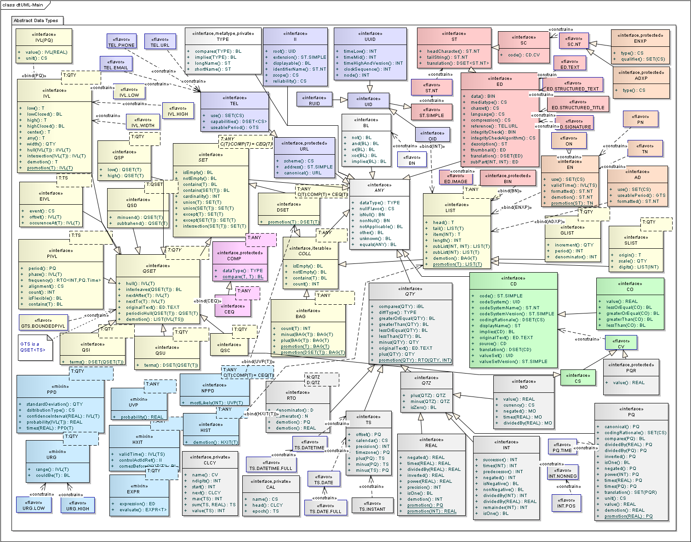
UML Overview of Data Types and Flavors
A number of stereotypes, enclosed in guillemots («»), are used in the diagram, some defined explicitly in order to represent the concepts embodied in this specification.
interface: All the types defined in this specification are interfaces, so the standard UML interface stereotype has been used throughout. These data types are not intended for implementation, but describe a set of conceptual interfaces that may be implemented in multiple different ways.
bind: When a generic type is specialized, and the specialization includes binding the generic to a particular type, a "realize" association links the two classes, using a "bind" stereotype to indicate that the specialization binds the class to a particular type for the parameter. The type is indicated as a parameter on the bind stereotype.
mixin: The mixin stereotype applies to a generic type: it denotes that the type is an interface, and that it specializes the parameter type and expresses all the properties of the type T in addition to its own properties - known as a Generic Type Extension.
flavor: Rather than being a type, a flavor that expresses a set of constraints on a data type. Note: “null flavors” is a concept domain, not a flavor in this sense.
constrain: Indicates the relationship between a flavor and the type or other flavor that it constrains. The exact nature of the relationship is described in the Flavors (§ 2.4.6 ) section.
iteratable: Indicates that it makes sense to enumerate the items of the collection that this interface represents using a classic iterator interface.
The UML diagrams use colors in the diagram. The colors act as an informal categorization of the data types. No particular significance is associated with the categorization. The colors have absolutely no relationship to the color coding of the RIM or of classes in static model diagrams.
| Colour | Category |
|---|---|
| White | Infrastructure |
| Salmon | Text & Multimedia |
| Green | Coded Concepts |
| Orange | Names and Addresses |
| Purple | Identifiers & Contacts |
| Grey | Quantities |
| Yellow | Generics |
| Blue | Generic Extensions |
| Mauve | Comparators |
For a quick overview at the beginning of many data types this specification contains tables listing "primary" properties. "Primary" properties are a somewhat fuzzy notion of those properties that are semantically most salient, and more likely to be thought of as "fields" when the data type where implemented as a record, or that are expected to be used more often. These tables are provided to facilitate an overview of the content and purpose of data types. There is no requirement that the properties listed in these tables be represented as fields, and these tables are not abstract syntax definitions.
Each row of the property tables describes one property with the following columns:
- Name - the name of the property as stated in the formal definition.
- Type - the data type of that property.
- Definition - a short text describing the meaning of the property.
A number of properties in this specification have associated concept domains that define the value domain for the property. These properties are all of type CD or some constraint thereof.
A concept domain is a named category of like concepts. Concept domains are bound to value sets in the context of a realm. A value set represents a uniquely identifiable set of valid concept representations, which may be taken from one or more code systems. The binding process is discussed in detail in the Core Principles of V3 Models [../coreprinciples/v3modelcoreprinciples.htm] document.
Unless otherwise specified, these concept domains are universally bound to value sets that comprise a single code system. The code systems may be defined by HL7 or some other external body, such as the W3C. The owner of the code system is clearly identified. The OID (Object Identifier) for the code system is also clearly specified. Note that OIDs are subject to ongoing revision; the OID published in this specification is correct at the time that this specification is published. The Core Principles of V3 Models [../coreprinciples/v3modelcoreprinciples.htm] document discusses OID management in depth. Unless otherwise specified, the name of the code system is the same as the name of the domain.
Where possible, a set of illustrative codes from the code system will be provided. For externally defined code systems, the actual contents of the domain are defined on an on-going basis by the external body. In the case of HL7 defined domains, the contents of the code systems are subject to on-going changes by harmonisation. This document lists the code system definitions as they were when the document was published, but more recent versions of the contents published by HL7 may be used with the data types defined herein, unless otherwise indicated.
The list of illustrative codes is shown in tables containing columns representing code, name, definition, and either status or level. Note that Status and level are not incompatible, but no circumstance where a combination of the two is useful has arisen. The table has a caption which names the concept domain, specifies the OID of the associated code system, and names the owner of the code system.
The code systems presented in this specification are all hierarchical in nature. The hierarchy represents subsumption, except in the case of AddressPartType where the hierarchy is compositional in nature. In a compositional hierachy, codes represented as child codes of another code represent parts of the concept represented by the parent code; whereas in a subsumption heirarchy, the child codes represent a more specialised meaning than the parent code.
code: The code column contains the symbol that goes in the CD.code property, and that is actually exchanged in the instance in order to represent the concept. Subsumption or composition within the code system hierarchy is shown by indenting the code.
name: The name column contains a descriptive name for the concept, and is a suitable value for use in the CD.displayName property.
definition: The definition specifies the meaning of the concept, along with clarifying information and usage notes.
status: For some domains, HL7 stipulates whether implementation of specific concepts is prohibited, permitted, or required.
level: The level column (labelled "lvl") is a value that represents the depth of the subsumption or composition of the current concept. This is only provided to help readers navigate the tables; it has no other meaning.
Some concepts are abstract, and are only defined to allow the relationships of other concepts to be defined. These concepts have a code of "--" shown. Since multiple abstract concepts may exist that subsume or compose the same concrete concept, a concept may be listed more than once in the definition of the domain.
We define a formal data type definition language in order to specify the semantics of the proposed types as unambiguously as possible. A specific abstract syntax is required because other syntaxes are either specific to a technology or dependent on their own type libraries and conventions. Formal languages make essential statements crisply and are therefore accessible to formal argument of proof or rebuttal. However, the terseness of such formal statements may also be difficult to understand. Therefore, all the important inferences from the formal statements are also included as plain English statements.
NOTE: This is not an API specification. While this formal language might resemble a programming language or interface definition language, it is not intended to define the details of programs and other means of implementation. The formal definitions are a normative part of this specification, but this particular language need not be implemented or used in conformant systems; nor need all the semantic properties be implemented or used by conformant systems. The internal working of systems, their way of implementing data types, and their functionality and services is entirely out of scope of this specification. The formal definition defines the meaning of the data values through statements defining semantic relationships and behavior. Property definitions resemble programmatic function or method definitions, but the resemblance does not imply any procedural machinery. The DTDL borrows from a variety of existing tools and specifications, including Interface Definition Language (IDL), the Object Constraint Language (OCL), JAVA, C++, and the parser generation tools LEX and YACC, to meet the key objectives of semantic descriptiveness, internal consistency, syntactical agnosticism, freedom from built-in or primitive types, and concision.
This formal data type definition language specifies:
- type name and short name
- named values of a fully enumerated extension
- semantic properties, unary, binary, and higher order properties
- invariants, i.e. constraints over the properties
- allowable type conversions
- syntax of character string value literals (if any)
- additional constraints on the types as flavors
Definition of a data type occurs in two steps. First, the data type is declared. The declaration claims a name for a new data type with a list of names, types, and signatures of the new type's properties. This declares the type, but not does not define it. The definition occurs in logic statements about what is always true about this type's values and their properties (invariant statements).
Every data type is declared in a form that begins with the keyword type. For example, the following is the header of a declaration for the data type Boolean which has the short name BL and specializes the data type ANY.
|
The Boolean data type declaration also contains a values clause that declares the Boolean's complete set of values (its extension) as named entities. These named values are also valid character string literals. None of the other data types defined in this specification has a finite value set, which is why the values clause is unique to the Boolean.
The block in curly braces following the header contains declarations of the semantic properties that hold for every value of the data type. A semicolon terminates each property declaration; and another semicolon after the closing curly brace terminates the data type declaration.
A property declaration specifies from left to right (1) the data type of the property's value domain, (2) the property name, and (3) an optional argument list. The argument list of a property is enclosed in parentheses containing a sequence of argument declarations. Each argument is declared by the data type name and argument name. Semantic properties without arguments do not use an empty argument list.
The specializes clause implies (a) inheritance of properties from the genus to the species, and (b) substitutability of values of the species type for variables of the genus type. Specialization can include the definition of additional properties and the specification of constraints on inherited properties for the specialized type.
An example for inheritance: CD has the constraint that every nonNull CD must have a code. Because CS specializes CD, every CS must also have a code if it is nonNull, even though this constraint is not made explicit in the definition of CS itself. Note that a type can be declared to specialize a flavor rather than a type. This means that the type inherits from the base type that the flavor constrains, and in addition is subject to the constraints defined for the flavor.
An example for substitutability: A property is declared as of data type ED. Because ST specializes ED, then a value of such property MAY be of type ST. In other words, substitutability is the same as subsumption of all values of type ST being also values of type ED.
It is generally agreed that inheritance should not retract properties defined for the genus. However, because a child type may constrain the properties of a parent type, it is possible for a child to constrain a property to the null value without retracting the property.
The type declaration may be qualified by the keyword abstract, protected,, or private. An abstract type is a type where no non-exceptional value can be of this type: a proper value MUST belong to a concrete specialization of the abstract type. A protected type is a type that is used inside this specification but no property outside this specification should be declared of a protected type. A private type is an internal "helper" abstraction, defined only for the purpose of defining some aspect of the semantics of data types but that is not used even as the type of another protected or public type's property.1
The declaration of semantic properties, their names, data types, and arguments provide only clues as to what the new data type might be about. The true definition lies in the invariant statements. Invariant statements are logical statements that are true at all times.
Throughout this specification, invariant statements are provided in a formal syntax but are also written in plain English. The advantage of the formal syntax is that it can be interpreted unambiguously, and that it is strongly typed. The advantage of plain English statements is that they are more understandable, especially to those untrained in reading formal languages.
The formal syntax sharpens the decisiveness of this specification. In some cases, however, the full semantics of a type are beyond what can be fully expressed in such invariant statements. The combination of both plain and formal language makes this specification more clear.
Invariant statements are formed using the invariant keyword that declares one or more variables in the form of an argument list of a property. The invariant statement can contain a where clause that constrains the arguments for the invariant body. The invariant body is enclosed in curly braces. It contains a list of assertions that must all be true.
|
The semantics of the invariant statement is a logic predicate with a universal quantifier ("for all").
The above invariant statement can be read in English as "For all Boolean values x, where x is non-NULL it holds that x AND true equals x." All properties should be named such that one can read the assertions like English sentences by substituting appropriate english words for the syntactical elements such as dot notation for property access. Note that some familiarity with reverse polish notation is useful in this regard.
The argument list of an invariant statement need not be specified if no such argument is needed.
|
Assertions in invariant statements are expressions built with the semantic properties of the data types defined in this specification. Assertion expressions MUST have a Boolean value (true or false). No primitive data types, or operations, pre-exist the definition of any data type. The only preexisting features of the assertion expression language are the following:2
- character strings representing utterances in the data type definition language;
- the notion of an assertion being successful (true) or failing (false);
- the invariant statement: invariant(...) where ... {...};
- the universal quantifier expression form forall (...) where ... {...}; synonymous to the invariant statement;
- the existence quantifier expression form exists (...) where ... {...};
- the implicit conjunction (logical AND) between the semicolon-separated assertions: assertion1; assertion2; ... ; assertionn;
- variables and declarations in the invariant argument list;
- the property reference using the period: x.property;
- implicit and explicit type conversion: (T)x;
- parentheses to override the priorities of the conversion and property resolution operators: (T)x.property versus((T)x).property.
It is because the entities upon which this syntax operates are themselves data types that the specification is fundamentally recursive.
A quantifier expression indicates the scope of an assertion: it is true for all scenarios (universal quantifier), no scenarios (prohibition), or for at least one (existential). The invariant statement is a universal quantifier. Quantifiers can be nested within assertion expressions to articulate complex requirements. In the following example, the outer statement regarding the set x contains an inner statement about the elements T of x.
|
The existence quantifier has the same meaning as in common propositional logic. For example, the following invariant means: "SET values x and y intersect if and only if there exists an element e that is contained in both sets x and y."
|
The existence quantifier may have a where-clause; however, there is no difference whether an assertion is made as a where-clause or in the body of the existence quantifier. Conversely, for universal quantifiers, the where-clause weakens the assertion since the body now only applies for values that meet the criterion in the where-clause.
This specification defines certain allowable conversions between data types. For example, there are a pair of conversions between the Character String (ST) and Encode Data (ED). This means that if a one expects an ED value but actually encounters an ST value instead, one can convert the ST value into an ED.
Three kinds of type conversions are defined: promotion, demotion, and character string literals. Type conversions can be implicit or explicit. Implicit type conversion occurs when a certain type is expected (e.g. as an argument to a statement) but a different type is actually provided. If the type provided has a conversion to the type expected the conversion should be performed implicitly.
NOTE: Implementation Technology Specifications must specify how implicit type conversions are supported. Some technologies support it directly, while others do not; in any case, processing rules can be defined that specify how these conversions are realized.
An explicit conversion can be specified in an assertion expression using the converted-to type name in parenthesis before the converted value. For example the following is an explicit type conversion from ED to ST in the where clause of an invariant statement.
|
The type conversion has lower order of precedence than the property resolution period. Thus "(T)a.b " converts the value of the property b of variable a to data type T while "((T)a).b " converts the value of variable a to T and then references property b of that converted value.
Implicit type conversions in the assertion expressions are performed where possible. If a property's formal argument is declared of data type T, but the expression used as an actual argument is of type U, and if U does not extend T, and if U defines a conversion to T, that conversion from T to U takes effect.
A demotion is a conversion with a net loss of information. Generally, this means that a more complex type is converted into a simple type.
An example for a demotion is the conversion from Interval (IVL) to a simple Quantity (QTY), e.g. the center of the interval. In the data type definition language, a demotion is declared using the keyword demotion and the data type name to which to demote:
|
The specification of demotions SHALL indicate what information is lost and what the major consequences of losing this information are.
A promotion is a conversion where new information is generated. Generally, this means that a simpler type is converted into a more complex type.
For example, we allow any Quantity (QTY) to be converted to an Interval (IVL). However, IVL has more semantic properties than QTY, including low and high boundaries. Thus, the conversion of QTY to IVL is a promotion. The additional properties of QTY not present in IVL must assume new values, default values, or computed values. The specification of the promotion must indicate what these values are or how they can be generated.
A promoting conversion from type QTY to type IVL is defined as a semantic property of data type QTY using the keyword promotion and the data type name to which to promote:
|
Typically, a promotion is defined from a simple type to a more complex type. Also, typically, the simple type is declared earlier in this document than a more complex type. Declaring all promotions to complex types in the simple type would thus involve forward references in the document, and may be confusing to the reader. Therefore, an alternative syntax allows promotions to be defined in the more complex type. This is indicated by naming the type from which to promote in an argument list behind the type to which to promote.
|
A literal is a character string representation of a data value. Literals are defined for many types. A literal is a type conversion from and to a Character String (ST) with a specially defined syntax.
Not every conversion from and to an ST is a literal conversion, however. A literal for a data type should be able to represent the entire value set of a data type whereas any other conversion to and from ST may only map a smaller subset of the converted data type.
The purpose of having literals is so that one can write down values in a short, human-readable form. For example, literals for the types integer number (INT) and real number (REAL) are strings of sign, digits, possibly a decimal point, etc. The more important interval types (IVL<REAL>, IVL<PQ>, IVL<TS>) have literal representations that allow one to use, e.g., "<5" to mean "less than 5", which is much more readable than a fully structured form of the interval. For some of the more advanced data types such as intervals, general timing specification, and parametric probability distribution, we expect that the literal form may be the only form seen for representing these values until users have become used to the underlying conceptualizations.
Each literal conversion has its own syntax (grammar), often aligned with what people find intuitive. This syntax may therefore not be the most obvious from a computing perspective.
NOTE: Character string based Implementable Technology Specifications (ITS) of these abstract data types may or may not choose the literals defined here as their representations for these data types. We expect that the XML ITS will use some but not all of the literals defined here. The different grammars of literals are not meant to be combined into one overall HL7 value expression grammar. Although attempts have been made to resolve potential ambiguities between the literals of different types where they would be harmful, some of these ambiguities still remain. For example "1.2" can be a valid literal for both Object Identifier (OID) and a Real Number.
The actual definition of the literal form occurs outside the data type declaration body using an attribute grammar. An attribute grammar is a grammar that specifies both syntax and semantics of language structures. The syntax is defined in essentially the Backus-Naur-Form (BNF).3
For example, consider the following simple definition of a data type for cardinal numbers (positive integers). This type definition depends only the Boolean data type (BL) and has a character string literal declared:
|
The literal syntax and semantics is first exposed completely and then described in all detail. The following example shows a literal consisting of two syntactic rules, each including several semantic definitions.
|
Every syntactic rule consists of the name of a symbol, a colon and the definition (so called production) of the symbol. A production is a sequence of symbols. These other symbols are also defined in the grammar, or they are terminal symbols. Terminal symbols are character strings written in double quotes or string patterns (called regular expressions). Thus the form:
|
means, that any cardinal number symbol is a cardinal number symbol followed by a digit or just a digit. The vertical bar stands for a disjunction (logical OR). A syntactic rule ends with a semicolon.
Every symbol has exactly one value of a defined data type. The data type of the symbol's value is declared where the symbol is defined:
|
means that the symbol digit has a value of type CARD. The start-symbol is the data type itself and does not need a separate name.
The semantics of the literal expression is specified in semantic rules enclosed in curly braces for each of the defined productions of a symbol:
symbol : production1 { rule1 } | production2 { rule2 } | ... | productionn { rulen };
A semantic rule is simply a semicolon-separated list of Boolean assertion expressions of the same kind as those used in invariant statements. However, there are special variables defined in the semantic rule that all begin with a dollar character (e.g., $, $1, $2, $3, ...) The simple $ stands for the value of the currently defined symbol; while $1, $2, $3, etc. stand for the values of the respective parts of the semantic rule's associated production. For example, in
|
the first production "CARD digit" has a semantic rule that says: the value $ of the defined symbol equals the value $1 of the first symbol CARD times ten plus the value $2 of the second symbol digit.4
A terminal symbol can be specified as a string pattern, so-called regular expression. The regular expression syntax used here is the classic syntax invented by Aho and used in AWK, LEX, GREP, and Perl. Regular expressions appear between two slashes /.../. In a regular expression pattern every character except [ ] ^ $ . / : ( ) \ | ? * + { } matches itself. The other characters that are actually used in this specification are defined in Table 3.
Generic data types are incomplete type definitions. This incompleteness is signified by one or more parameters to the type definition, which stand for other types, using the keyword template. Using parameters, a generic type might declare semantic properties that are not fully specified. For example, the generic data type Interval is declared with a parameter T that can stand for any Quantity data type (QTY). The properties low and high are declared as being of type T.
|
Instantiating a generic type means completing its definition. For example, to instantiate an Interval, one SHALL specify of what base data type the interval should be. This is done by binding the parameter T to a specific data type. To instantiate an Interval of Integer numbers, one would bind the parameter T to the type Integer. Thus, the incomplete data type Interval is completed to the data type Interval of Integer.
For example, the following type definition for MyType declares a property named "multiplicity" that is an interval of the integer number data type used in the above examples.
|
A type parameter MAY have a default type associated with it. This default type is implied if no other parameter is bound when the type is associated. In the following example, a default parameter type has been used to specify exactly the same outcome as the previous example.
|
Default types for parameters requires care on the part of the users, and this technique is used sparingly in this specification.
Generics SHALL have types specified for each parameter prior to being instantiated. The types MAY be supplied in this specification, in any dependent specification, or even at run-time: that is, an ITS may allow the use of a generic type that leaves the parameter type unspecified until it is used.
Generic data types for collections are used throughout this specification. The most important of them are:
Set (SET<T>) A set contains elements in no particular order and without duplicate elements. There are two specializations of SET: DSET, for sets composed from discrete elements that may be iterated, and QSET, for sets composed of items from continuous domains, such as REAL.
Sequence (LIST<T>) A sequence is a collection of values in a specified order. A sequence has a head and a tail, where the head is the first element and the tail is the sequence without its head.
Interval (IVL)<T> An interval is a continuous subset of an ordered type.
These generic data types and their properties are used in this specification and readers should understand these types to understand this specification completely.
Generic data type extensions are generic types with one parameter type that the generic type specializes. In the formal data type definition language, generic type specializations follow the pattern:
NOTE: Values of such extended types MAY be substituted for their base type. However, an ITS MAY limit what extensions are supported.
At this time generic type extensions SHALL NOT be used except where the type of an attribute is assigned to ANY, or the use is explicitly enabled (in this or another HL7 specification) for use cases where this advanced functionality is important. In these cases, instances of these generic type extensions SHALL be specifically and explicitly reflected in the RIM, static models or other specifications as applicable, as a result of formally approved content.5
Generic extensions keep their properties when specialized or subtended by generic collections. If a generic extension that extends QTY is applied to a QSET type parameter or specialization, the generic extension can be used throughout the QSET on any value contained within the expression tree.
|
These generic type extensions inherit the properties of their base type and add some specific feature to it. The generic type extension is a specialization of the base type, thus a value of the extension data type can be used instead of its base data type.6
While a Generic Type Extension extends its base—or parameter type—in effect annotating it with additional properties, it does not modify the interface of the of the base parameter type. However the Generic Type Extension, while not changing the definition of a property MAY alter the semantics of the implementation. For instance, while INT of 1 is equal of INT of 1, INT of 1 is not equal to a PPD<INT> of 1 +/- 0.5. Similarly, while INT.plus(INT) has a return type of INT, both PPD<INT>.plus(INT) and INT.plus(PPD<INT>) have a return type of PPD<INT>. Note that in all cases the invariants on the parameter type must always be true.7
|
Data type flavors are named constraints on the existing data types. The flavors do not introduce any new semantics to the data type, but constrain an existing data type for a particular purpose. Flavors MAY NOT add new properties, or set default values for properties; the value of properties can be fixed, but not defaulted.
Flavors MAY be used as types in other models, for instance in the RIM, and in RIM-derived models, when attributes are assigned a type that is a flavor. However flavors are not true types; when used in this fashion, they designate that the type of the attribute is the type from which the flavor is derived, with the constraints indicated in the flavor definition applied. For an instance of the data value assigned to the attribute, the type property is always that of the underlying type.
Flavors MAY constrain other flavors. When a flavor constrains another flavor, the flavor adds new constraints to those already specified in the other flavor.
Flavors are limited in this fashion so that a single implementation based on this specification will always be able to process all instances, but local implementations may describe a number of different constraint patterns on the data types defined in this specification.8
In the formal data type definition language, flavors follow this pattern:
flavor LongDescriptiveName alias ShortName constrains BaseTypeOrFlavor; |
The definition of a flavor cannot introduce any new semantics, only define a long and short name, and the type or flavor that this flavor constrains. By convention, the short name has the form Type.shortName, such as TS.Time, but some flavors have other names due to backwards compatibility constraints. Once the flavor is defined it is usually followed by one or more invariants that specify the constraints associated with the flavor.
In rare cases, the constraints cannot be even partially expressed using the data type definition language, but it is still useful to define the flavor. In such cases, the flavor will not have any associated invariant statements. An example of this case would be further constraints on the narrative text described in the CDA specification ([http://www.hl7.org/v3ballot/html/infrastructure/cda/cda.htm]).
Representational Properties (§ B ) documents the property flavorId. When this representational property is used in association with one of the flavors documented here, it contains the value of the flavor name.
Additional flavors may be defined beyond those defined in this specification. The rules concerning definition, naming, and registration may be found in the Refinement, Constraint and Localization Specification ([http://www.hl7.org/v3ballot/html/infrastructure/conformance/conformance.htm]).
Some invariants make reference to concepts defined in a concept domain. The syntax for this reference is [CodeSystemName].[code] where [CodeSystemName] is the name of one of the code systems presented in this specification and [code] is the code of one of the concepts defined in that domain.
|
This invariant specifies that when a data type is null, its nullFlavor property implies the NullFlavor concept NI, which is identified by the Concept Reference NullFlavor.NI.
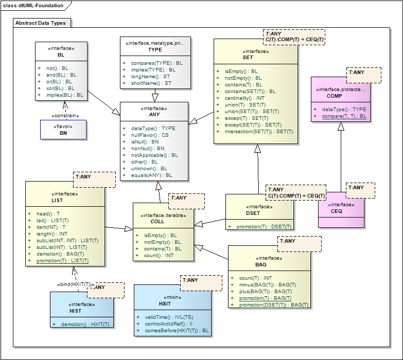
Foundation types
Definition: An abstract type that defines the basic properties common to all data values defined in this specification. Data Value is an abstract type, meaning that no proper value can be just a data value without belonging to any concrete type. Every concrete type is a specialization of this general abstract DataValue type.
|
Definition: The data type of the value.
Every proper data value implicitly carries information about its own data type.
|
Note that the type of a flavor is always the underlying type. For instance, the type of a ED.IMAGE is always ED. The kind of flavor will be identified in the flavorId property. See Representational Properties (§ B ) for further information.
An exceptional value may not have a type specified by its context of use, either in the applicable models or the instance itself. In these cases, the datatype will default to ANY. Data values with a nullFlavor that implies INV SHALL have a known type that is not ANY.
|
Definition: An indicator of a data value's exceptional status, sometimes also denoting the manner and rationale for that status.
A data type MAY have an exceptional value (NULL-value, or just "null") rather than a proper value as described by this specification, either because the information does not exist, is not known or available, or cannot be expressed in the allowed value domain. In this case, the nullFlavor expresses in what way and why proper information is missing.
Null values are improper values that do not conform to the proper or expected value domain as described by this specification. This specification makes many rules concerning the relationship between the nullFlavor property and other properties, and these rules SHALL always be true. Both nonNull and null values SHALL always be valid according to the rules expressed in this specification.
Null values are also known as exceptional values. This is to denote that the information contained in the value is an exception to the expected value domain that applies to the type. The information may either be missing or partially present, or even completely present but not valid with respect to the constraints imposed by the Constraining Model (see Constraining Model (§ 1.8.1 )).
NOTE: This property is named nullFlavor because of the similarities between the concept of null value and the concept and behaviour of null in implementation technologies, particularly SQL and OCL. As in SQL and OCL, the result of a comparison operation between a null value and some other value is always null. In this sense, null values propagate through operations. However there are some notable differences between these concepts. Most notably, in most implementation technologies, a null instance has no further information associated with it (some variation of the concept of a null pointer). This is not true of the HL7 concept of null, where any of the properties of a null value might not be null. In OCL, null is an instance of OclVoid which is a super type of all types. This is not true for null values in this specification where a null value is still a valid instance of a particular type. If a true null is encountered in an implementation environment, it is semantically equivalent to a null-value of NI, and all other properties not related to nullFlavor will also have nullFlavor NI.
The null concept provides a general framework for handling incomplete data which is often encountered in healthcare information collection, use and analysis. The nullFlavor property plays a special role in the conformance framework. See "Conformance" in Core Principles of V3 Models [../coreprinciples/v3modelcoreprinciples.htm#coreP_V3_Conformance] for further information.
The null flavors are a general domain extension of all normal data type domains ("domain" in this sense means the set of all possible values for the data type, not "domain" in the more restricted sense used for coded data types). So this is true not only for coded data types with specified vocabulary domains, but for non-coded value domains as well, e.g. integers, temporal intervals, infectious disease cases, etc.
Note that while all these nullFlavors are considered to be exceptional values - a proper value is not known, under some circumstances the nullFlavor itself may be semantically useful. For instance, while the value PINF may represent an actual unknown value, it can be used as the upper limit of an interval. Similarly, the value QS represents an unknown amount but may be converted to a real amount during the actual dispensing of a formulation.
As a general domain extension of all normal data types, the null flavors also extend the literal form of those data types that have a literal form. In any literal form, the literal NullFlavor.X signals that the data type has the assigned nullFlavor, where X is the code, such as NA.
Note that the nullFlavor property isNull is reverse to that of the data type itself. If the data type is not null, then the nullFlavor property itself will be null. If the data type is null, then the nullFlavor is not null - it will specify an actual nullFlavor that provides more detail as to in what way or why no proper value is supplied.
|
The general implication of this is that in a CD or descendant (usually CS), when the code for a nullFlavor is carried in the code/codeSystem (code = "NI" and codeSystem = "2.16.840.1.113883.5.1008"), the CD itself is not null. The CD is only null when its nullFlavor carries this code.
When performing operations upon null values, the semantic meaning of the nullFlavor SHALL be considered. This is particularly important for equality. The only case where non-proper (NULL) values may be equal is where both values have a nullFlavor of NA. In most other cases, the outcome of comparing NULL values is also null. However, there are exceptions based on the semantic meaning of nullFlavor. For instance, although direct comparison of two values with nullFlavor PINF is always null (NI), two intervals with the equal low bounds and high bounds of PINF will return true, since they specify the same set. Similarly, comparison of NINF and PINF is always False.
The "actual value" refers to the value of the information itself, rather than the information as represented in the type itself. These two may diverge when the information provided is incomplete, such as when an expression is provided. The null flavor "other" is used whenever the actual value is not in the required value domain: this may occur, for example, when the value exceeds some constraints that are defined in too restrictive a manner
For example, if the value for age is 100 yrs, but the constraining model specifies that the age must be less than 100 years, the age may still be specified, provided that the model does not make the attribute mandatory.
<value nullFlavor="OTH" value="120" unit="yr"/> |
Some of the null flavors are not generally applicable to all data types. The nullFlavors NINF and PINF SHALL only be associated with QTY types other than MO and RTO. The nullFlavors QS, and TRC SHALL only be used with PQ. The nullFlavor UNC SHALL only be used with any type that has an originalText, and when UNC is used the originalText property SHALL be populated. The nullFlavor DER SHALL only be used with the EXPR type, and an expression SHALL be provided.
|
Note: the two nullFlavors INV and OTH draw a distinction between the actual value and the vlalue as represented in the instance. Some of the datatypes may be used to provide a representation of the value which requires subsequent transformation to generate the real value. For instance, an expression may be provided which will generate an actual value that is in the required value domain of the instance.
NOTE: NULL-flavors are applicable to any property of a data value or a higher-level object attribute. Where the null flavor is determited to be not significant by the core HL7 infrastrcture committees, ITS are not required to represent them. If nothing else is noted in this specification, ITS need not represent general NULL-flavors for data-value properties. In addition, there is a difference between semantic properties and representational "components" of data values. An ITS SHOULD only represent those components that are needed to infer the semantic properties. The null-flavor predicates nonNull, isNull, notApplicable, unknown, and other can all be inferred from the nullFlavor property.
Some of these null flavors are associated with named properties that can be used as simple predicates for all data values. This does not change the semantics of the property; it is done to simplify the formulation of invariants in the remainder of this specification.
Definition: A predicate indicating that that a property has a value, i.e. is a non-null ("non-exceptional") value of the data type.
|
When a property (i.e. RIM attribute, or message field) is labeled mandatory, and the container is not null itself, then any value assigned to the property SHALL be nonNull.
Definition: A predicate indicating that that a value is an exceptional value, or a null-value. A null value means that the information does not exist, is not available, or cannot be expressed in the data type's normal value set.
Every data element has either a proper value or it is considered NULL. If (and only if) it is NULL, the nullFlavor provides more detail as to in what way or why no proper value is supplied.
|
Definition: A predicate indicating that this exceptional value is of nullFlavor not-applicable (NA), i.e., that a proper value is not meaningful in the given context.
|
Definition: A predicate indicating that this exceptional value is of nullFlavor unknown (UNK).
|
Definition: A predicate indicating that this exceptional value is of nullFlavor other (OTH), i.e., that the required value domain does not contain the appropriate value.
|
Definition: A reflexive, symmetric, and transitive relation between any two data values indicating that the two values are the same.
|
How equality is determined must be defined for each data type, and care must be taken when implementing equals in a polymorphic environment. There is a tension between what is logical and desired, and the requirement for symmetry and transitivity. 9 These data types and the definitions of equals have been carefully constructed so that their definitions of equals are both symmetric and transitive.
Some of the definitions of equality exclude some of the properties of a data type from the equality test, where those properties are not essential to the meaning of the value. In addition, some interpretation of the semantics of the values may be required to determine the equality of two values. For example physical quantity () has the two semantic properties (1) a real number and (2) a coded unit of measure. The equality test, however, must account for the fact that, e.g., 1 meter equals 100 centimeters; independent equality of the two semantic properties is too strong a criterion for the equality test. Therefore, physical quantity must override the equality definition.
The requirement for understanding the meaning of the data applies to nullFlavors as well. Under certain circumstances the test for equality between two different values with different flavors of null may not be null. Consult nullFlavor for more information.
Definition: Identity comparison is a reflexive, symmetric, and transitive relation between any two data values. Any values can be identical, whether or not they are null or contain property with null values. The identity comparison always returns true or false. The result is never null.
The identity relationship is defined to assist in the definition of uniqueness constraints on DSETs. The identity relationship SHOULD NOT otherwise be used as it has no other use, and is therefore given a protected status to indicate that it should not be used outside this specification.
|
How identity is determined is the same for every data type except BL. If all the properties of two values are identical, the values are identical. For BL, the two values are identical if they have the same nullFlavor or if they are both true or both false.10
Definition: The data type of a data element or property.
This property is a meta-type declared in order to allow the formal definitions to make invariants about the data type of a value. Any data type defined in this specification is a value of the type DataType.
| Name | Type | Description |
|---|---|---|
| shortName | ST | The alias of the data type. |
| longName | ST | The full name of the data type. |
|
Note that the type of a flavor is always the underlying type. For instance, the type of a ED.IMAGE is always ED. The kind of flavor will be identified in the flavorId property. See Representational Properties (§ B ) for further information.
Definition: The alias of the data type.
|
Definition: The full name of the data type.
Two nonNull data types are equal if they are the same type.
|
Definition: A relation that indicates that a data type has the same type or is a specialization of the argument type.
Definition: A relation that indicates whether two types have the same equality criteria
A data type is comparable to another data type if they both have the same equality criteria. For instance, has the same equality criteria as , so is comparable to . Note that the fact that two data types can be compared does not mean that all instances of the data types may be compared - for instance, it is not possible to compare the PQ values 3yr and 5m.
Definition: A binary value for use in boolean logic. A BL value can be either true or false, or, as any other value, MAY be NULL.
truefalse |
With any data value potentially being NULL, the two-valued logic is effectively extended to a three-valued logic as shown in the following truth tables:
Where a boolean operation is performed upon 2 data types with different nullFlavors, the nullFlavor of the result SHALL be any common ancestor of the 2 different nullFlavors. The result SHOULD be the first common ancestor.
Definition: Conjunction between a value and another value indicates that both values are true. Conjunction is associative and commutative, with true as a neutral element. False AND any Boolean value is false. These rules hold even if one or both of the operands are NULL. If both operands for AND are NULL, the result is NULL.
|
Two non null BL are equal if the have the same value.
|
Definition: A parametric property indicating that the argument is true when the value is true, supporting rules of the form IF condition THEN conclusion
Logically, the implication is defined as the disjunction of the negated condition and the conclusion, meaning that when the condition is true the conclusion must be true to make the overall statement true. The logical implication is important to make invariant statements.
|
The implication is not reversible and does not specify whether the condition is true when the condition is false (ex falso quodlibet lat. “from false follows anything”).
Definition: A collection of values which can be enumerated using an iterator.
|
COLL is introduced to represent the concept of an enumerable collection. Collections that are enumerable are inherently countable, though some collections may have an infinite number of items in the collection.
RIM attributes with a collection type MAY be assigned a cardinality by the constraining model. In these cases, the cardinality is understood to refer to the number of items in the collection. To require that a collection have at least one item, the minimum multiplicity of the attribute must be constrained to 1 or more.
Definition: An indicator that the COLL has no elements. The return value may be null (when the collection itself is null, whether the collection is empty is not known).
Definition: An indicator that the COLL contains at least one item. The return value may be null (when the collection itself is null, whether the collection is empty is not known).
Definition: The number of elements in the COLL. The return value may be null (when the collection itself is null, the number of items in the collection is not known).
Definition: An indicator that the COLL contains an item with the given item value using the equals property. If item is null, the return value will be null.
Definition: An unordered collection of values, where any value can occur more than once.
A bag MAY contain NULL values as items.
NOTE: A BAG can be represented in two ways: either as a simple enumeration of elements, including repeated elements, or as a "compressed bag" whereby the content of the BAG is listed in pairs of element value and count. A histogram showing absolute frequencies is a BAG represented in compressed form. BAG is therefore useful to communicate raw statistical data samples.
Definition: The number of elements in the bag. NULL elements are counted as bag elements.
|
Definition: The number of items in this bag with the given item value.
This is the primitive property of a BAG, on which all other properties are defined.
|
Definition: True if the bag contains an item with the given item value.
|
Definition: A predicate indicating that this BAG has no elements (negation of the notEmpty predicate. The empty BAG is a proper value, not an exceptional (NULL) value.
|
Definition: A predicate indicating that this BAG contains at least one item. The item MAY be null.
|
Definition: A BAG that contains all items of the operand BAGs.
|
Definition: A BAG that contains all items of this BAG (minuend) diminished by the items in the other BAG (subtrahend). BAGs cannot carry deficits: When the subtrahend contains more items of one value than the minuend, the difference contains zero items of that value.
|
When the element type T has a literal form, the bag of T elements has a literal form, wherein the elements of the set are enumerated within curly braces and separated by semicolon characters.
|
NOTE: This literal form for bags is only practical for relatively small bags; this does not mean, however, that all bag are relatively small enumerations of elements.
NOTE: A character-based ITS SHOULD choose a different literal form for bags if the Implementation Technology has a more native literal form for such collections.
A data value of type T can be promoted into a trivial BAG of type T with that data value as its only item.
|
A discrete set of items can be promoted into a BAG that contains the same items. No items are lost during the promotion.
|
Two bags are equal if and only if they are both empty, or if they both contain the same items.
It is not necessary that the two BAGs have the same type for parameter T; as long as the two bags have parameter types that are comparable (for instance, CD and CV), the bags can be equal.
|
Definition: An ordered collection of discrete (but not necessarily distinct) values.
A sequence MAY contain NULL values as items.
The sequence is an ordered collection of values, but no particular order is associated with the sequence in the definition of LIST. The meaning of the order of the items SHALL be defined where a LIST is used. Note that in some cases, the order is fixed ( e.g. HIST), but in other cases, the order is not fixed: only the meaning associated with the order in the instance is defined (e.g. EN, AD).
Definition: The sequence following the first item in this sequence.
Definition: A predicate that is true if this sequence contains no items.
An empty sequence is a proper sequence, not an exceptional (null) value.
|
In an empty sequence, the length is zero, the tail is empty, and the head is null. Note that both head and tail being NULL does not mean that the sequence is empty; while this is a necessary condition of an empty sequence, it is not sufficient for determining an empty list, since a sequence may contain NULL-values as items. Therefore this condition can mean that the sequence has only a head item that happens to be NULL.
Definition: A predicate that is true if this sequence contains at least one element. Negation of isEmpty.
|
Definition: The item at the given sequential position (index) in the sequence. The index zero refers to the first element (head) of the sequence.
|
Definition: A predicate that is true if this sequence contains the given item value.
|
Definition: The number of elements in the sequence. NULL elements are counted as sequence elements.
|
Definition: The number of elements in the list.
This property is defined for consistency of definitions of collection types. The count of the number of elements in a discrete set always matches the length of the list.
|
Definition: A contiguous subset of the list containing the items found in the list from index start to end, inclusively.
|
The list starts at item 0. If the bounds are less than 0 or greater than or equal to the length of the list, or if end is less than start, then the result of the operation is undefined (i.e. null).
Definition: A contiguous subset of the list containing the items found in the list from index start to the end of the list, inclusively.
|
The list starts at item 0. If the bounds are less than 0 or greater than or equal to the length of the list, then the result of the operation is undefined.
Two lists are equal if and only if they are both empty, or if both their head and their tail are equal.
It is not necessary that the two LISTs have the same type for parameter T; as long as the two lists have parameter types that are comparable (for instance, CD and CV), the lists can be equal.
|
Note that when lists contain null items, it is usually not possible to determine whether the lists are equal, though it may be possible to determine that they are different. For example, a list containing an unknown value is not equal to a list containing another unknown value, nor are two lists holding values of PINF. However a list containing a value of NINF is not equal to a list holding a value of PINF.
When the element type T has a literal form, the sequence LIST has a literal form. List elements are enumerated, separated by semicolon, and enclosed in parentheses.
|
NOTE: a character-based ITS SHOULD choose a different literal form for sequences if the Implementation Technology has a more native literal form for such collections.
A data value of type T can be promoted into a trivial sequence of T with that data value as its only item.
|
A sequence (an ordered collection of items) can be demoted to a bag of items (no order). All items are preserved in the demotion.
|
Definition: A value that contains distinct values in no particular order.
A set SHALL NOT contain items that the comparator does not differentiate. When the default equals based comparator applies, a set SHALL NOT contain NULL values as items.
SET is an abstract type. There are two specializations of SET that are actually used in models and instances, DSET (Discrete Sets) and QSET (Quantity Sets). DSET is for collection based sets that are composed of a series of discrete elements, and corresponds to general computationally friendly list found in most implementation environments. QSET is for quantity based sets where it makes sense to build complex sets using expressions and ranges of values. QSETs correspond to the mathematical notion of a set. Both types of sets support the common operations defined in SET that relate to the notion of set membership and related operations. DSET extends this notion to include some collection specific operations. QSET extends the notion to support a number of different methods for specifying set ranges and building complex sets based on set operations which are not possible for non-quantity based sets.
There are some complex relationships between DSET and QSET. For example, IVL<INT> is a type that conforms to the semantics expressed in both a DSET and a QSET, though for purposes of definition, this specification defines an IVL as a specialization of QSET and not DSET, since all types of IVLs are also QSETs. The situation for TS is a little more complicated. IVL<TS> is not a DSET<TS>, but a DSET<TS> may make sense in some circumstances, and if a DSET<TS> is defined, it also conforms to the semantics expressed in QSET<TS>. A DSET<PQ> may also be a QSET<PQ> but only if all the values are comparable (this relationship is true for all DSET<QTY>).
Generally, if T is a specialization of QTY, then a QSET would be the appropriate type of SET to specify in a model or use in an instance.
Definition: The comparator used to define uniqueness and membership in the set.
The uniqueness in the set is a function of the comparator.
|
Because of these constraints, considerable care must be taken in defining the comparator. In particular, the equals-based comparator SHALL always be used for types that are specializations of QTY. Note also that where a comparator could be defined that specifies nonNull outcomes for null values of T, sets MAY contain null values.
Implementable Static Models SHALL always fix the comparator - it must not be left to be decided at run-time.
Definition: A relation of the set with a value, true if the given value is an element of the set.
This is the primitive semantic property of a set, based on which all other properties are defined. Contains is ascertained using the comparator for the SET, which MAY specify some different comparison than the equals property.
A set SHALL only contain distinct elements. Values for which the comparator is unable to differentiate cannot be elements of a set. For normal sets, based on CEQ, exceptional values (NULL-values) cannot be elements of a set.
|
Definition: The relation between a set and its subsets, where each element in the subset is also an element of the superset.
|
This implies that the empty set is a subset of every set including itself.
Definition: A predicate indicating that this set has no elements; the negation of notEmpty. The empty set is a proper set value, not an exceptional (NULL) value.
|
Definition: A predicate indicating that this set contains elements.
|
Definition: The number of distinct elements in the set.
|
The cardinality definition works for finite sets in this specification, but is not sufficient since it doesn't converge for uncountably infinite sets (REAL, PQ, etc.) and it doesn't terminate for infinite sets. The cardinality value is an example where it would be necessary to distinguish the cardinality ℵ0 (aleph0) of countably infinite sets (e.g., INT) from ℵ1 (aleph1), the cardinality of uncountable sets (e.g., REAL, PQ).
Definition: A set for which each element is an element of at least one component set.
|
Definition: A union of a set and an element.
|
Definition: The set containing all elements of the subtracted set that are not elements of the subtracting set.
|
Definition: The set that contains all elements of this set except for the subtracting element value.
|
Definition: The set containing all and only those elements that are contained in both of the operand sets.
|
Two nonNull SETs are equal if they have the same elements. It is not necessary that the two SETs have the same type for parameter T; as long as the two sets have parameter types that are comparable (for instance, CD and CV), the sets can be equal.
|
Definition: An abstract type that defines a comparison between two values of the same type.
|
Although every type has a clear definition of the meaning of semantic equality, this definition does not always fit a particular use: in these cases, a specialization of COMP that expresses the criteria for the comparison relationship may be used. The comparator type is defined to allow custom definitions of the meaning of equality between types. This is most useful in defining the criteria for uniqueness in a SET but may find other applications in implementation environments.
COMP is an abstract type, and no actual comparator is defined.
NOTE: COMP and its descendants never appear in an instance, and an ITS should not create a representation for them.
Because COMP never appears in the instance, new specializations of COMP MAY be defined outside of this specification. All new specializations SHALL be approved at harmonisation prior to being included in a normative specification.
An example of a custom comparator might be to specify that a particular SET of TEL is allowed to contain the same telecommunication address more than once if it has different useablePeriod properties. In this case, compare should return false if only one of the two TELs has a useablePeriod, or if they both do and they are different. Here is how to define such a comparator:
|
A set that used this comparator would be defined as DSET<TEL, MYTELCOMP>.
Definition: The data type of the comparator.
Every comparator implicitly carries information about its own data type.
|
Definition: The result of comparing the two elements.
Like the equality relationship, comparison is a reflexive, symmetric, and transitive relationship between any two data values.
|
Definition: A comparator based on the equality relationship defined for all types.
|
This is the default concrete comparator that compares the two values based on the equality relationship defined for all types.
Definition: The value of the equality relationship between the two values.
|
Definition: An unordered collection of values that contains discrete distinct values.
A DSET differs from the general SET because it is constrained to contain only discrete items. The practical consequence of this is that a DSET can be iterated, like bag, but unlike QSET.
|
Definition: The number of elements in the set.
This property is defined for consistency of definitions of collection types. The count of the number of elements in a discrete set always matches the cardinality of the set.
|
When the element type T has a literal form, the discrete set of T elements has a literal form, wherein the elements of the set are enumerated within curly braces and separated by semicolon characters.
|
NOTE: This literal form for sets is only practical for relatively small discrete sets; this does not mean, however, that all sets are relatively small enumerations of elements.
NOTE: A character-based ITS SHOULD choose a different literal form for discrete sets if the Implementation Technology has a more native literal form for such collections.
A data value of type T can be promoted into a trivial discrete set of T with that data value as its only element.
|
Definition: A generic data type extension that adds a time range and/or link to the ControlAct associated with the creation of the data on any data value whatever its data type.
HXIT adds the controlActIdRef property to the the base type T. In addition, if the base type T does not possess a validTime property, the HXIT adds that property to the base type. If, however, the base type T does have a valid time property (currently only EN), that property is mapped to the valid time property of the HXIT and the HXIT constraints on validTime apply.11
The time range is the time in which the information represented by the value is (or was) valid. The ControlAct id reference indicates the event responsible for the value of the data type. The time range is not the time during which any particular system considered this information valid (as in, an audit trail), though the link to the control act may provide some information of relevance in this regard.
|
Definition: The time interval during which the given information was, is, or is expected to be valid. The interval can be closed-- i.e. finite and defined—or open—i.e. infinite or undefined —on either side. The interval cannot be just a width, nor can the width be zero
|
Definition: A predicate expressing a chronological order relation that is asymmetric and transitive, between this HXIT and another HXIT.
A HXIT comes before another in a sequence of history items (HIST) if the high boundary of the validTime is less or equal to the low boundary of the other interval.
|
Definition: The identifier of the ControlAct associated with setting the data type to its specified value.
By referencing a particular ControlAct, the property links to all of the information surrounding that ControlAct, such as who made the change, when it was made, why it was made, what system originated the change, etc.
Definition: A list of data values that have a valid-time property.
The intent of HIST is to capture the true historical (and future) values of an item, rather than the audit trail of values any given system has held for the item. The history information is not limited to the past; expected future values MAY also appear.
|
All items in the list SHALL have a non-null validTime property. The validTime periods on the list SHALL NOT overlap. The contents of HIST SHALL be ordered in ascending chronological order.
|
If a list of historical items should allow multiple items and/or overlapping ranges, then the type of the attribute should be BAG<HXIT<T>>. The type HIST<SET<T>> actually denotes a history of the set values themselves. The semantics of SET<HXIT<T>> become very complicated; given that validTime is usually excluded from the equality test, this type should not be used.
Definition: The item in the list whose validTime interval includes the current time.
Note that the current time is not necessarily the same time as the instant at which an instance is being processed. The relevant current time will be dictated by the context of operation.
There may be no current value, in which case the value of this operation is NULL.
Definition: The item in the list whose IVL.LOW boundary (validity start time) is less than (i.e. before) or equal to that of any other history item in the list.
|
Definition: The derived history that has the earliest item excluded.
|
Definition: The item in the list whose IVL.HIGH boundary (validity end time) is greater than (i.e. after) or equal to that of any other history item in the list.
|
Definition: The derived history that has the latest item excluded.
|
|
A type conversion between an entire history HIST and a single history item HXIT. This conversion takes the current data from the history, if a current value exists.
The purpose of this conversion is to allow an information producer to produce a history of any value instead of sending just one value.12 An information-consumer, who does not expect a history but a simple value, will convert the history to the current value. Note that the source system may only send a history of a value if the constraining models permits this.
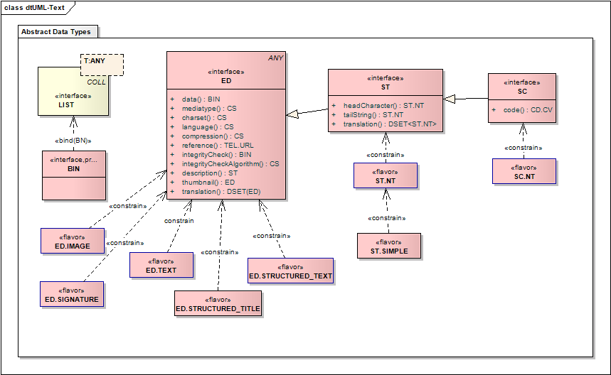
Overview of Text and Multimedia Data Types
Definition: A raw block of bits.
BIN is a protected type that SHALL NOT be assigned to any property outside the data type specification.
A bit is semantically identical with a non-null BL value. Thus, all binary data is — semantically — a sequence of non-null BL values.
protected type BinaryData alias BIN specializes LIST<BN>; |
NOTE: The representation of arbitrary binary data is the responsibility of an ITS. How the ITS accomplishes this depends on the underlying Implementation Technology (whether it is character-based or binary) and on the represented data. Character data MAY be represented as binary data; however, a character-based ITS SHOULD NOT convert character data into arbitrary binary data and then represent binary data in a character encoding. E.g., the letter "J" might be encoded as ASCII "74" (or hexadecimal "4A"): these character representations of numerical data should not be represented in lieu of the original "J."
An empty sequence is not considered binary data but counts as a NULL-value. In other words, non-NULL binary data contains at least one bit. All bits in a non-NULL binary data value SHALL NOT be NULL.
|
Definition: Data that is primarily intended for human interpretation or for further machine processing outside the scope of HL7.
This includes unformatted or formatted written language, multimedia data, or structured information as defined by a different standard (e.g., XML-signatures). Instead of the data, an ED may contain only a reference (see TEL). Note that ST is a specialization of ED where the mediaType is fixed to text/plain and several other properties are constrained to null.
Encapsulated data can be present in two forms, inline or by reference. Inline data is communicated or moved as part of the encapsulated data value, whereas by-reference data may reside at a different (remote) location. The data is the same whether it is located inline or remote.
Definition: The binary content of the ED
ED acts as a wrapper of binary content. Operations performed against the ED directly are mediated by the mediatype and, if so indicated by the mediatype, the character set. For example, two BIN values are equal if they have the same sequence of bits in their content. However the ED are only equal if they have the same sequence of logical items. For instance, if the media type is a kind of text, then the sequence of characters indicated by the character set and the binary content must be equal. Similarly, the length of an ED is the number of component parts as indicated by the mediatype. For application and image media types, the length of ED is the same as the length of the data. Note that operations may also be performed directly upon the binary content by using data.
|
Although data SHALL be nonNull if the ED is not null, it need not be contained in-line in the instance; instead, the binary content, along with some other properties, MAY be defined by the reference property.
Definition: The type of the encapsulated data.
The default mediaType is text/plain. The type of the encapsulated data may help identify a method to interpret or render the data.
mediaType is a mandatory property, i.e., every non-NULL instance of ED SHALL have a non-NULL mediaType property.
|
The IANA defined domain of media types is established by the Internet standard RFC 2045 [http://www.ietf.org/rfc/rfc2045.txt] and 2046 [http://www.ietf.org/rfc/rfc2046.txt]. RFC 2046 defines the media type to consist of two parts:
- top level media type, and
- media subtype
However, this specification treats the entire media type as one atomic code symbol in the form defined by IANA, i.e., top level type followed by a slash "/" followed by media subtype. Currently defined media types are registered in a database [http://www.iana.org/assignments/media-types/index.html] maintained by IANA. Currently several hundred different MIME media types are defined, with the list growing rapidly. In general, all those types defined by the IANA MAY be used.
To promote interoperability, this specification prefers certain media types to others. This is to define a greatest common denominator on which interoperability is not only possible, but that is powerful enough to support even advanced multimedia communication needs.
Table below assigns a status to certain MIME media types, where the status means one of the following:
- required: Every HL7 application SHALL support at least the required media types if it supports a given kind of media. One required media-type for each kind of media exists. Some media types are required for a specific purpose, which is then indicated as "required for ..."
- recommended: Other media types are recommended for a particular purpose. For any given purpose there should be only very few additionally recommended media types and the rationale, conditions and assumptions of such recommendations must be made very clear.
- indifferent: This status means, HL7 neither forbids nor endorses the use of this media type. All media types not mentioned in Table have status indifferent by default. Since there are one required and several recommended media types for most practically relevant use cases, media types of this status should be used very conservatively.
- deprecated: Deprecated media types SHOULD NOT be used, because these media types are flawed, because there are better alternatives, or because of certain risks. Such risks could be security risks, for example, the risk that such a media type could spread computer viruses. Not every flawed media type is marked as deprecated, though. A media type that is not mentioned in Table 6, and thus has status indifferent, may well be flawed.
The set of required media types is very small so that no undue requirements are forced on HL7 applications, especially legacy systems. In general, no HL7 application is forced to support any given kind of media other than written text. For example, many systems just do not want to receive audio data, because those systems can only show written text to their users. It is a matter of application conformance statements to say: "I will not handle audio". Only if a system claims to handle audio media, then it must support the required media type for audio.
Definition: An Internet Assigned Numbers Authority (IANA) Charset Registered character set and character encoding for character-based media types.
The charset SHALL be identified by an Internet Assigned Numbers Authority (IANA) Charset Registration [http://www.iana.org/assignments/character-sets] in accordance with RFC 2978 [http://www.ietf.org/rfc/rfc2978.txt]. The IANA source specifies names and multiple aliases for most character sets. For HL7's purposes, use of multiple alias names is not allowed. The standard name for HL7 is the one marked by IANA as "preferred for MIME." If IANA has not marked one of the aliases as "preferred for MIME" the main name SHALL be the one used for HL7.
Table 15 lists a few of the IANA defined character sets that are of interest to current HL7 members.
NOTE: The above list is not complete let alone exclusive. In particular, international HL7 affiliates may make special recommendations about charsets to be used in their realm. These recommendations MAY add additional charsets and MAY reassign the recommendations status of a listed charset.
The charset property needs to be known where the data of ED is character type data in any form. If the data is provided in-line, then the charset SHALL be clearly conveyed. If the data is provided as a reference, and the access method does not provide the charset for the data, typically as a mime header, then the charset SHALL be conveyed as part of the ED.
Interested readers may also want to consult the "Character Model for the World Wide Web" [http://www.w3.org/TR/charmod] for a more complete discussion of character set and related issues.
Definition: The human language of the content.
The need for a language code for text data values is documented in RFC 2277, IETF Policy on Character Sets and Languages [http://www.ietf.org/rfc/rfc2277.txt]. Further background information can be found in Using International Characters in Internet Mail [http://www.imc.org/mail-i18n.html], a memo by the Internet Mail Consortium.
The principles of the code domain of this attribute are specified by the Internet standard RFC 3066 [http://www.ietf.org/rfc/rfc3066.txt]. The RFC 3066 coding scheme is principally constructed from a primary subtag component encoded using the language codes of ISO 639, with an optional second subtag component encoded using the two letter country codes of ISO 3166. Where this scheme does not provide a suitable code, RFC 3066 allows for other codes, mostly as defined by ISO or the Internet Assigned Names Authority [http://www.iana.org/assignments/language-tags].13 This code domain is assigned the OID 2.16.840.1.113883.6.121.
While Language tags usually alter the meaning of the text, the language does not alter the meaning of the characters in the text.14
NOTE: Representation of language tags to text is highly dependent on the ITS. An ITS MAY use the native way of language tagging provided by its target implementation technology. Some may have language information in a separate component, e.g., XML has the xml:lang tag for strings. Others may rely on language tags as part of the binary character string representation, e.g., ISO 10646 (Unicode) and its "plane-14" language tags.
The language tag SHOULD NOT be mandatory if it is not mandatory in the implementation technology. Semantically, language tagging of strings follows a default-logic. In circumstances where a realm may support multiple langauges, it is up to the realm to define rules to handle language where none is specified when no language is specified. If no other rule is specified, the local language of the reader is assumed. If a language is set for an entire message or document, that language is the default. If any information element or value that is superior in the syntax hierarchy specifies a language, that language is the default for all subordinate text values.
If language tags are present in the beginning of the encoded binary text (e.g., through Unicode's plane-14 tags) this is the source of the language property of the encapsulated data value.
Definition: The compression algorithm, if any, used on the raw byte data.
- required: Every HL7 application SHALL support at least the required compression types.
- indifferent: This status means, HL7 neither forbids nor endorses the use of this compression algorithm.
- deprecated: Deprecated compression algorithms SHOULD NOT be used, because they are flawed, because there are better alternatives, or because of certain risks.
The compression applies to the data applied in line, not to data provided by reference, even if there is no data provided in line. Note that some compression formats allow multiple archive files to be embedded within a single compressed volume. Applications SHALL ensure that the decompressed form of the data conforms to the stated media type. The stated media type applies to the uncompressed data.
Definition: A URL the target of which is taken as the binary content of the ED.
A telecommunication address (TEL) is a URL (i.e. for HTTP or FTP) which will resolve to precisely the same binary data that could as well have been provided as inline data. The semantic value of an encapsulated data value is the same, regardless whether the data is present inline data or just by-reference. However, an encapsulated data value without inline data behaves differently, since any attempt to examine the data requires the data to be downloaded from the reference. An encapsulated data value MAY have both inline data and a reference.
If both reference and inline data are provided, the reference SHALL point to data identical to that provided inline. It is an error if the data resolved through the reference does not match either the integrity check or the in-line data.
The reference may contain a usablePeriod to indicate that the data may only be available for a limited period of time. Whether the reference is limited by a usablePeriod or not, the content of the reference SHALL be fixed for all time. Any application using the reference SHALL always receive the same data, or an error. The reference cannot be reused to send a different version of the same data, or different data.
By-reference encapsulated data may not be allowed depending on the attribute or component that is declared encapsulated data. Values of type ST SHALL always be inline.
Definition: A checksum calculated over the binary data.
The integrity check is a short binary value representing a cryptographically strong checksum that is calculated over the binary data. The purpose of this property, when communicated with a reference is for anyone to validate later whether the reference still resolved to the same data that the reference resolved to when the encapsulated data value with reference was created. It is an error if the data resolved through the reference does not match the integrity check.
The integrity check is calculated according to the integrityCheckAlgorithm. By default, the Secure Hash Algorithm-1 (SHA-1) shall be used. The integrity check is binary encoded according to the rules of the integrity check algorithm.
The integrity check is calculated over the raw binary data that is contained in the data component, or that is accessible through the reference. No transformations are made before the integrity check is calculated. If the data is compressed, the Integrity Check is calculated over the compressed data.
Definition: The algorithm used to compute the integrityCheck value.
The default value is SHA-1.15
Definition: An alternative description of the media where the context is not suitable for rendering the media.
E.g. Short text description of an image or sound clip, etc. This attribute is not intended to be a complete substitute for the original. For complete substitutes, use the "translation" property. The intent of this property is allow compliance with disability requirements such as those expressed in American's with Disability Act (also known as "Section 508"), where there is a requirement to provide a short text description of included media in some form that can be read by a screen reader. This is similar to a very short thumbnail with mediaType = text/plain.
Definition: An abbreviated rendition of the full data.
A thumbnail requires significantly fewer resources than the full data, while still maintaining some distinctive similarity with the full data. A thumbnail is typically used with by-reference encapsulated data. It allows a user to select data more efficiently before actually downloading through the reference. Originally, the term thumbnail refers to an image in a lower resolution (or smaller size) than another image. However, the thumbnail concept can be metaphorically used for media types other than images. For example, a movie may be represented by a shorter clip; an audio-clip may be represented by another audio-clip that is shorter, has a lower sampling rate, or a lossy compression; or an abstract provided for a long document.
Thumbnails may not be allowed depending on the attribute or component that is declared encapsulated data. Values of type ST SHALL NOT have thumbnails, and a thumbnail itself SHALL NOT contain a thumbnail.
|
NOTE: ITS's SHOULD consider the case where the thumbnail and the original both have the same properties of type, charset and compression. In this case, these properties need not be represented explicitly for the thumbnail but might be "inherited" from the main encapsulated data value to its thumbnail.
Definition: Alternate renditions of the same content translated into a different language or a different mediaType. The translation property is a set of ED that each translate the first rendition into a different language or use a different mediaType. Each element of the translation set SHALL be a translation of the ED value. Translations SHALL NOT contain translations.
The translations SHALL convey the same information, but in a different language or mediaType. The translations do not take part in the test for equality, so SHALL NOT introduce any new semantics to the value.
|
Definition: The length of the content in the ED.
The length of the ED may not be the same as the length of the binary content of the ED in the data property. The length is the number of items in the content where the kind of item is determined by the mediaType. For instance, if the mediatype is a type of text, then the length of the ED is the number of characters found in the binary content, as specified by the charset. For application, video, audio and image mediatypes, the length is the same as the length of the binary content.
|
nonNull ED SHALL always have some content, and length is greater than 0.
Definition: A contiguous sublist of the ED containing the content found from index start to end, inclusively.
As with length, the subPart of an ED may be different to a subList of the data. The offsets are determined based on the logical contents as determined by the mediaType. For application, video, audio and image mediatypes, the offsets are the same as the offsets in the binary content. The content must then the re-rendered into some binary representation.
The mediaType and the charset of the return value are usually of the same type as the ED, but this may not always be the case.
If the internal content has some structure which makes the specified range inappropriate, the return value MAY be NULL.
Two nonNull values of type ED are equal if and only if their mediaType and data are equal. For those ED values with compressed data or referenced data, only the de-referenced and uncompressed data counts for the equality test. The compression, thumbnail, translation and reference property themselves are excluded from the equality test. In addition the language property is excluded from the test, due to the problems this would introduce values of type ED where the language is not specified. If the mediaType is character based and the charset property is not equal, the charset property must be resolved through mapping of the data between the different character sets.16
Definition: Text data, primarily intended for machine processing (e.g., sorting, querying, indexing, presentation, etc.).
ST is primarily used for names, symbols, and formal expressions. ST is a restricted ED, whose ED.mediaType property is fixed to text/plain, and whose data SHALL be inlined and not compressed. Thus, the properties compression, reference, integrity check, algorithm, and thumbnail are not applicable. The character string data type is used when the visual presentation of text does not affect its meaning, which is true for formalized text and all kinds of names.
ST data type interprets the encapsulated data as character data (as opposed to bits), depending on the charset property of the encapsulated data type.
|
NOTE: Because many of the properties of the encapsulated data are bound to a default value, an ITS need not represent these properties at all. In fact, if the character encoding is also fixed, the ITS only represents the encoded character data and language.
The headCharacter and tailString properties define ST as a sequence of entities each of which uniquely identifies one character from the joint set of all characters known by any language of the world.17
The head of an ST is a string of only one character. An ST SHALL have at least one character or else be NULL. A zero-length ST is an exceptional value (NULL), not a proper value.
|
The length of an ST is the number of characters, not the number of encoded bytes, in the string. Byte encoding is an ITS issue and is not relevant on the application layer.
The following rules apply to whitespace contained within values of type ST:
- TAB, space and end-of-line are all considered whitespace characters.
- Both preceding and trailing whitespace is significant.
- Different whitespace characters are not interchangable.
- Different representations of end-of-line are normalised according to the method described in the XML specification, regardless of ITS [Section 2.11 End-of-Line Handling]
- Sequences of whitespace cannot be compressed to shorter sequences.
| Requirement ST is a specialization of ED so that any RIM attribute which has the type ED can be constrained to a ST. The most important case is Act.text, which is an ED to cater for the use of references and multimedia data, but is often constrained to plain text. |
Definition: The sequence of characters that make up the content of the string.
The data is constrained to be a valid sequence of characters represented in the chosen character set. It SHALL be contained in-line - the ED.reference property cannot be used.
Definition: Identifies the type of the ST and identifies a method to interpret or render the data. The fixed mediaType is text/plain.
|
Fixed to be "text/plain".
|
Values of type ST SHALL have a known charset.
Definition: The human language of the content.
The need for a language code for text data values is documented in RFC 2277, IETF Policy on Character Sets and Languages [http://www.ietf.org/rfc/rfc2277.txt]. Further background information can be found in Using International Characters in Internet Mail [http://www.imc.org/mail-i18n.html], a memo by the Internet Mail Consortium.
The principles of the code domain of this attribute are specified by the Internet standard RFC 3066 [http://www.ietf.org/rfc/rfc3066.txt]. The RFC 3066 coding scheme is principally constructed from a primary subtag component encoded using the language codes of ISO 639, with an optional second subtag component encoded using the two letter country codes of ISO 3166. Where this scheme does not provide a suitable code, RFC 3066 allows for other codes, mostly as defined by ISO or the Internet Assigned Names Authority [http://www.iana.org/assignments/language-tags].18 This code domain is assigned the OID 2.16.840.1.113883.6.121.
While Language tags usually alter the meaning of the text, the language does not alter the meaning of the characters in the text.19
NOTE: Representation of language tags to text is highly dependent on the ITS. An ITS MAY use the native way of language tagging provided by its target implementation technology. Some may have language information in a separate component, e.g., XML has the xml:lang tag for strings. Others may rely on language tags as part of the binary character string representation, e.g., ISO 10646 (Unicode) and its "plane-14" language tags.
The language tag SHOULD NOT be mandatory if it is not mandatory in the implementation technology. Semantically, language tagging of strings follows a default-logic. In circumstances where a realm may support multiple langauges, it is up to the realm to define rules to handle language where none is specified when no language is specified. If no other rule is specified, the local language of the reader is assumed. If a language is set for an entire message or document, that language is the default. If any information element or value that is superior in the syntax hierarchy specifies a language, that language is the default for all subordinate text values.
If language tags are present in the beginning of the encoded binary text (e.g., through Unicode's plane-14 tags) this is the source of the language property of the encapsulated data value.
|
Values of type ST SHALL NOT be compressed.
|
Values of type ST SHALL NOT reference content from some other location.
|
Integrity check code SHALL NOT be used with values of type ST.
|
Integrity check algorithm SHALL NOT be used with values of type ST.
|
Values of type ST SHALL NOT have thumbnails.
Definition: Alternate renditions of the same content translated into a different language. The translation property is a set of ST.NT that each translate the first rendition into a different language. Each element of the translation set SHALL be a translation of the ST value. Translations SHALL NOT contain translations.
|
All translations SHALL also be ST. Since the translations are not allowed to have translations, they are also ST.NT.
Two variations of ST literals are defined, a token form and a quoted string.21 The token form consists only of the lower case and upper case Latin alphabet, the ten decimal digits and the underscore. The quoted string can contain any character between double-quotes. The double quotes prevent a character string from being interpreted as some other literal. The token form allows keywords and names to be parsed from the data type specification language.
|
NOTE: Since ST literals are so fundamental to implementation technology, most ITS will specify some modified character string literal form. However, ITS designers must be aware of the interaction between the ST literal form and the literal forms defined for other data types. This is particularly critical if the other data type's literal form is structured with major components separated by break-characters (e.g., real number, physical quantity, set, and list literals, etc.).
Definition: A character string that optionally may have a code attached.
The text SHALL always be present if a code is present. The code is often a local code.
|
SC is used in cases where coding is exceptional (e.g., user text messages are essentially text messages, and a printable message is the important content. Yet sometimes messages come from a catalog of canned messages, which SC allows to reference.
Any non-null SC value MAY have a code, however, a code SHALL NOT be given without the text.
|
The original text of the code, if provided, is the content of the string.22
|
Definition: A code representing the string data. For example, the string data may be a user-message out of a message-catalog where the code represents the identifier of the message in the message catalog.
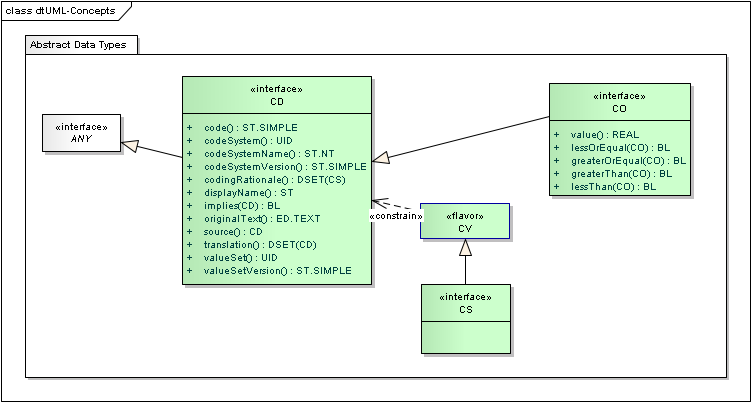
The Concept Descriptor information model.
Definition: A reference to a concept defined in a code system
A CD may contain a simple code - that is, a reference to a concept defined directly by the referenced code system, or it may contain an expression in some syntax defined by the referenced code system that can be meaningfully evaluated. e.g., the concept of a "left foot" as a postcoordinated term built from the primary code "FOOT" and the qualifier "LEFT".
A CD may also contain an original text or phrase that served as the basis of the coding. This is preserved to allow for validation of the representation of the concept in various fashions.
A CD can contain one or more translations into multiple coding systems. The translations are all representations of the same concept in various code systems (note that there may be more than on representation in a single code system where code systems allow multiple representations, such as Snomed-CT). There is only one concept, and only the first CD may contain an original text. It is possible to represent the translation chain - which CD was translated from which - if desired, using the source attribute. Each CD may also carry a rationale to indicate why it is represented.
A non-exceptional CD value SHALL have a non-NULL code or originalText property. Conversely, a CD value without a value for both the code and originalText properties, or with a value that is not from the specified coding system is an exceptional value (NULL of flavor other). If the concept (the intent of the original text) cannot be properly represented within the set of codes to which the attribute is constrained (the value set), then the nullFlavor of the CD should be set to "OTH" (other) and either a reference to a code system or a value set (which may refer to multiple code systems) SHALL be provided.
Note that sending a CD with a nullFlavor of other and a code system says that no appropriate code could be found in the entire code system. If this statement can only be made about a a subset of the code system, or about multiple code systems, then a value set should be used instead.
|
Attributes with type CD are generally bound to a domain that is used to constrain the coded concepts to which a CD may refer. Domains are bound to value sets that define the codes and code systems that may be used in the CD. The binding process is discussed in depth in the "Core Principles of V3 Models" specification under "Vocabulary Binding" ([../coreprinciples/v3modelcoreprinciples.htm#coreP_V3_Conformance-Vocabulary-Binding]). Domains are bound with a qualifier that specifies with the domains are extensible or not. If a domain is not extensible (CNE), then a non-exceptional root CD SHALL contain a code that exists in the domain with which the attribute is associated24. If a domain is extensible (CWE) then a non-exceptional CD SHALL contain a code that exists in the domain with which the attribute is associated, a code from a locally defined code system, or some originalText that describes the concept. If the code is taken from a locally defined code system, then the codeSystem property SHALL specify the local code system.
For both CNE and CWE domain bindings, the translations may contain CD values with nullFlavors from any domain unless otherwise specified by the constraining model.
Definition: The plain code symbol defined by the code system, or an expression in a syntax defined by the code system which describes the concept.
|
If the CD is a proper value (non-null), then it SHALL contain either a code or an originalText. If the CD is bound to a domain or value set with a CNE constraint, then a code from the bound domain or value set SHALL be used.
If provided, the code SHALL be an exact match to a plain code symbol or expression defined by the codeSystem. If the code system defines a code or expression that includes whitespace, the code SHALL include the whitespace.
An expression can only be used where the codeSystem either defines an expression syntax, or there is a generally accepted syntax for the codeSystem. A code system may be defined that only defines a syntax and binding to other code Systems.
NOTE: In HL7 defined vocabulary codeSystems, a Mnemonic is defined for all codes. These are the correct values for use in the code property. HL7 does not define any expression syntaxes for HL7 defined vocabulary codeSystems.
It is at the discretion of the interpreting system whether to check for an expression instead of a simple code and evaluate the expression instead of treating the expression as a code. In some cases, it may be unclear whether the code represents a single symbol or an expression. This usually arises where the code system defines an expression language and then defines pre-coordinated concepts with symbols which match their expression, e.g. UCUM. In other cases, it is safe to treat the expression as a symbol. There is no guarantee that this is always safe: the definitions of the codeSystem should always be consulted to determine how to handle potential expressions.
Where the requirements for handling expressions and post-coordinated concepts are deemed unreasonable and/or impractical for a particular application, the valueset and/or codeSystems assigned to the CD in the applicable design models should be used to prohibit them to the degree desired.25
Definition: The code system that defines the code.
Code systems SHALL be referred to by a UID, which allows unambiguous reference to standard HL7 codes, other standard code systems, as well as local codes. Where HL7 has assigned an identifier to a code system, this identifier SHALL be used. Otherwise implementations SHALL use an appropriate ISO Object Identifier (OID) or UUID to construct a globally unique local coding system identifier.
A CD that has a code attribute SHALL have a codeSystem specifying the system of concepts that defines the code.
|
An exceptional CD of NULL-flavor other indicates that a concept could not be coded in the coding system or value set specified. Thus, for these coding exceptions, the code system or value set that did not contain the appropriate concept SHALL be provided in codeSystem or valueSet.
|
Definition: The common name of the coding system.
The code system name has no computational value. The purpose of a code system name is to assist an unaided human interpreter of a code value to interpret codeSystem. It is suggested — though not absolutely required — that ITS provide for codeSystemName in order to annotate the UID for human comprehension.
HL7 systems SHALL NOT functionally rely on codeSystemName. codeSystemName can never modify the meaning of codeSystem and cannot exist without codeSystem. Conformant systems MAY choose not to implement codeSystemName but SHALL NOT reject instances because codeSystemName is present.
|
Definition: If applicable, a version descriptor defined specifically for the given code system.
Note that by definition a code symbol SHALL have the same meaning throughout all versions of a code system. Between versions, codes may be retired but not withdrawn or reused. Where the definition of the meaning of a code symbol changes, it must still be compatible (equal) between different code system versions.
HL7 will specify how these version strings are formed for each external code system. If HL7 has not specified how version strings are formed for a particular coding system, version designations have no defined meaning for such coding system. HL7 will publish the applicable version when internal HL7 code systems are published.
Different versions of one code system must be compatible. Whenever a code system changes in an incompatible way, it will constitute a new code system, not simply a different version, regardless of how the vocabulary publisher calls it.
For example, the publisher of ICD-9 and ICD-10 calls these code systems, "revision 9" and "revision 10" respectively. However, ICD-10 is a complete redesign of the ICD code, not a backward compatible version. Therefore, for the purpose of this data type specification, ICD-9 and ICD-10 are different code systems, not just different versions. By contrast, when LOINC updates from revision "1.0j" to "1.0k", HL7 would consider this to be just another version of LOINC, since LOINC revisions are backwards compatible.
|
Definition: The value set that applied when this CD was created.
In many cases, a CD is created from a value set - either a code/code system pair is chosen from a valueSet, or one is not chosen and the CD has the exceptional value of NullFlavor.OTH. If no code is chosen, it is generally inappropriate to reference the code system from which the code was chosen as the value set may not match the code system (may include a subset of the codeSystem, or additional terms from other code systems); instead, the value set should be provided. In addition, there are some known use cases where the value set that a user or system was offered when choosing a code affects the interpretation of the code.
Note that if a code is provided, the meaning of the code must come from the definition of the code in the code system. The meaning of the code SHALL NOT depend on the value set. Applications SHALL NOT be required to interpret the code in light of the valueSet. Applications SHALL NOT reject an instance because of the presence or absence of any or a particular value set.
Value sets SHALL be referred to by a UID, which allows unambiguous reference to standard HL7 value sets, and other value sets. Where HL7 has assigned an identifier to a value set, this identifier SHALL be used. Otherwise implementations SHALL use an appropriate ISO Object Identifier (OID) or UUID to construct a globally unique local value set identifier.
When ever a value set is provided, the version of the value set SHALL also be provided.
Definition: The version of the value set that applied when this CD was created.
|
valueSetVersion SHALL be provided when a valueSet is provided, and otherwise SHALL be null. The value of the valueSetVersion must properly identify a particular version of the value set following the rules defined by the value set or its publisher. For HL7 defined value sets, the version SHALL be the date/time that the value set was published. For further information, see in the "Core Principles of V3 Models" specification under "Value Set Versioning" ([../coreprinciples/v3modelcoreprinciples.htm])
Definition: A name, title, or representation for the code or expression as it exists in the code system identified by the value of codeSystem.
Normally, the displayName would be the human readable representation of the concept that the sending system shows to its users. The displayName is included so that an unaided human interpreter of a code value has a human readable description of what the concept meant within the code system at the time of data entry.
If populated, displayName SHALL be a valid human readable representation of the concept as defined by the code system at the time of data entry. The displayName SHALL conform to any rules defined by the codingSystem; if the codeSystem does not define a human representation for the code or expression, then none can be provided. displayName is included both as a courtesy to an unaided human interpreter of a code value and as a documentation of the name used to display the concept to the user. The display name has no functional meaning; it SHALL never exist without a code; and it SHALL never modify the meaning of code. A display name may not be present if the code is an expression for which no display name has been assigned or can be derived. Conformant systems MAY choose not to implement displayName but SHALL NOT reject instances because displayName is present.
NOTE: HL7 offers a "print name" in its predefined vocabulary domains. These values are suitable for use in the displayName.
NOTE: Display names may not alter the meaning of the code value. Therefore, display names SHOULD NOT be presented to the user on a receiving application system without ascertaining that the display name adequately represents the concept referred to by the code value. Communication SHALL NOT simply rely on the display name. The display name's main purpose is to support debugging of HL7 protocol data units (e.g., messages).
|
Definition: The text as seen and/or selected by the user who entered the data which represents the intended meaning of the user.
Original text can be used in a structured user interface to capture what the user saw as a representation of the code or expression on the data input screen, or in a situation where the user dictates or directly enters text, it is the text entered or uttered by the user. It is a common exceptional case to use the CD data type to store only the text that the user entered or uttered. In this situation, original text will exist without a code, and the nullFlavor OTH will apply. In a situation where the code is assigned sometime after the text was entered, originalText is the text or phrase used as the basis for assigning the code.
The original text exists in a scenario where an originator of the information does not assign a code, but where the code is assigned later by a coder (post-coding). In the production of a concept descriptor, original text may thus exist without a code.
Note that although post-coding is often performed from free text information, such as documents, scanned images or dictation, multi-media data is explicitly not permitted as original text. Also, the original text property is not meant to be a link into the entire source document. The link between different artifacts of medical information (e.g., document and coded result) is outside the scope of this specification and is maintained elsewhere in the HL7 standards. The original text SHALL be an excerpt of the relevant information in the original sources, rather than a pointer or exact reproduction. Thus the original text SHALL be represented in plain text form. In specific circumstances, as described in other HL7 specifications, the originalText may be a reference to some other text artefact for which the resolution scope is clearly described.
Values of type CD MAY have a non-NULL original text property despite having a NULL code. Any CD value with code of NULL signifies a coding exception. In this case, originalText is a name or description of the concept that was not coded. Such exceptional CD values MAY also contain translations. Such translations directly encode the concept described in originalText.
The originalText represents the originalText of the concept itself. Translations SHALL NOT have an originalText of their own.
|
Definition: The reason a particular CD has been provided.
The values O and P are mutually exclusive – only one of these two values SHALL be part of codingRationale at any given time. A code is deemed to be post-coded if the user does not assign a code when they first enter the data (i.e. when coding occurs subsequently using the originalText). codingRationale is not expected to act as a quality review marker on the quality of the coding or the translation processes.
A code is required when it is present in the instance to meet some constraints imposed on the instance by the context of use. Applications SHALL not be required to mark a particular translation as required even though it is required by the context of use, but MAY do so. Applications SHALL not reject instances because of the presence or absence of any particular codingRationale flag.
Definition: A set of other CDs that each represent a translation of this CD into equivalent codes within the same code system or into corresponding concepts from other code systems.
NOTE: The translations are quasi-synonyms of one real-world concept. Every translation in the set is supposed to express the same meaning "in other words." However, exact synonymy rarely exists between two structurally different coding systems. For this reason, not all of the translations will be equally exact.
Translations SHALL NOT contain translations. The root CD has one set of translations which lists all the translations.
|
The root translation is generally the one that best meets the conformance criteria for the CD. No implication about lineage of the translations can be drawn from the selection of the root code. Instead the properties codingRationale and source is used to trace lineage.
In the absence of a constraining model that makes constraints on the value domain of the CD, any of the translations MAY be the root CD. If the constraining model makes constraints on the value domain of the CD and there is a translation that meets the constraints, that translation SHOULD be the root CD. If the constraining model makes constraints on the value domain of the CD and there is no translation that meets the constraints, then any of the translations MAY be the root, as long as they are assigned a nullFlavor. An alternative is to put none of the translations in the root, and give it a nullFlavor of choice, and put all the translations in the translation property of the root.
NOTE: There are a number of open issues about the full details of the interactions between constraining models and translations. These will be clarified in a future version of this specification.
Definition: The CD from which this CD was translated, if it was translated from another CD.
A CD consists of a single root code and a set of translations, which do not have translations. Using the codingRationale property, a sender can indicate which is the original code. There are some circumstances in which it is useful to know which CD was translation from which CD. The source allows for the translation sequence from one translation to another to be represented.
Each element of the translation set was translated from the original CD. Each translation may, however, also have translations. Thus, when a code is translated multiple times the information about which code served as the input to which translation will be preserved.
The source SHALL also be contained within the same CD cluster (a CD and its translations).
NOTE: Since the source must be found independently as the root code, or in the list of translations, some sort of referential implementation is appropriate for the source property in ITSs.
|
The main use of concept descriptors is for the purpose of indexing, querying and decision-making based on a coded value. A semantically unambiguous specification of coded values therefore requires a clear definition of what equality of concept descriptor values means and how CD values should be compared.26
The equality of two CD values is determined solely based upon code and codeSystem. codeSystemVersion is excluded from the equality test.27 Translations are not included in the equality test.28 Exceptional CD values are not equal even if they have the same NULL-flavor or the same original text.29
|
Some code systems define certain style options to their code values or expression syntaxes. For example, the U.S. National Drug Code (NDC) has a dash and a non-dash form. An example for the dash form may be 1234-5678-90 when the non-dash form is 01234567890. Another example for this problem is when certain ISO or ANSI code tables define optional alphanumeric and numeric forms of two or three character lengths all in one standard.
In the case where code systems provide for multiple representations, HL7 wil make a ruling about which is the preferred form. HL7 will document that ruling where that respective external coding system is recognized. HL7 will decide upon the preferred form based on criteria of practicality and common use. In absence of clear criteria of practicality and common use, the safest, most extensible, and least stylized (the least decorated) form shall be given preference.30
Definition: Specifies whether this CD is a specialization of the operand CD.
Naturally, concepts can be narrowed and widened to include or exclude other concepts. Many coding systems have an explicit notion of concept specialization and generalization. The HL7 vocabulary principles also provide for concept specialization for HL7 defined value sets. implies is a predicate that compares whether one concept is a specialization of another concept, and therefore implies that other concept.
When writing predicates (e.g., conditional statements) that compare two codes, one SHOULD usually test for implication not equality of codes.
For example, in Table 28 the "telecommunication use" concepts: work (W), home (H), primary home (HP), and vacation home (HV) are defined, where both HP and HV imply H. When selecting any home phone number, one should test whether the given use-code c implies H. Testing for c equal H would only find unspecified home phone numbers, but not the primary home phone number.
Operationally, implication can be evaluated in one of two ways. The code system literals may be designed such that one single hierarchy is reflected in the code literal itself (e.g., ICD-9). Apart from such special cases, however, a terminological knowledge base and an appropriate subsumption algorithm will be required to evaluate implication statements. For post-coordinated coding systems, designing such a subsumption algorithm is a non-trivial task.31
A simple example for code is the ICD-9 code for headache, which is "784.0".
<example code="784.0" codeSystem="2.16.840.1.113883.6.42" codeSystemName="ICD-9"> <displayName value="Headache"/> <originalText value="general headache"/> </example> |
A possible ICD-10 equivalent is "G44.1" (the ICD-10 classifications are slightly different).
<example code="G44.1" codeSystem="2.16.840.1.113883.6.3" codeSystemName="ICD-10"> <displayName value="Headache"/> <originalText value="general headache"/> </example> |
A common situation with CD is when the actual concept cannot be properly represented in a particular coding system. Usually this circumstance arises where the concept is expected to be represented in a particular coding system. For the purposes of these examples, we assume that all these example values are for an observation value of type CD that is found in the full Snomed-CT valueset (Example OID for the value set = 2.16.840.1.113883.19.11.1 as published 11-June 2007, Real OID for the SNOMED-CT code system = 2.16.840.1.113883.6.96). Important Note: The OID root 2.16.840.1.113883.19 is used for example-only OIDs, and OIDs in this space are never valid in real instances. The OIDs used in these examples that in the OID space 2.16.840.1.113883.6, 2.16.840.1.113883.5 and 2.16.840.1.113883.11 are the correct OIDs to use in production instances.
The simplest case is where the CD is not represented in the instance at all, or simply represented as no information.
<value nullFlavor="NI"/> |
However this isn't a very useful representation - frequently the source system knows more information, and it is still useful to convey that information to the destination system, while still labelling the coding as incomplete.
<value null="OTH" codeSystem="2.16.840.1.113883.6.96"/> |
or it may be encoded as
<value nullFlavor="OTH" valueSet="2.16.840.1.113883.19.11.1" valueSetVersion="20070711"/> |
Both examples say that the concept cannot be coded in SNOMED. Even more useful is to convey some specific information about the concept, even though it cannot be represented in SNOMED:
<value nullFlavor="OTH" codeSystem="2.16.840.1.113883.6.96"> <originalText value="Burnt ear with iron. Burnt other ear calling for ambulance"/> </value> |
It is also possible that the content was first encoded in some other code system than SNOMED, and the source system was unable to encode the value in SNOMED. In this case, there is two forms of representation. The first is when the binding to SNOMED is labelled as CWE: local extensions are allowed:
<value code="burn" codeSystem="2.16.840.1.113883.19.5.2"> <originalText value="Burnt ear with iron. Burnt other ear calling for ambulance"/> </value> |
In this case, because the binding is CWE, local extensions are allowed, and the source system can simply use it is own codeSystem (here identified by the OID "2.16.840.1.113883.19.5.2", which is an example OID) to extend the other code system. In fact, the source system can also use a code from another well known code system, such as ICD-9. If ICD-9 had a code "A10.1" which stood for this same concept, then this would be valid:
<value code="A10.1" codeSystem="2.16.840.1.113883.6.42"> <originalText value="Burnt ear with iron. Burnt other ear calling for ambulance"/> </value> |
If, however, the binding to the SNOMED-CT valueset is labelled CNE, then the code must come from SNOMED. The same information as the case above must be conveyed differently:
|
Now the code is clearly marked as OTH: the code cannot be represented in SNOMED-CT, but a translation from another system is provided. Though it is pretty redundant in this case, the source system could indicate which translation comes from which using the source property:
|
All these examples have assumed that the attribute is bound to the fictitious value set 2.16.840.1.113883.19.11.1 which is all of SNOMED-CT. If the value set was extended to include the LOINC codes as well, it would no longer be appropriate to encode a failure to code like this:
<value nullFlavor="OTH" codeSystem="2.16.840.1.113883.6.96"/> |
since it is not true that the concept could not be coded from SNOMED-CT - it could not be coded in either SNOMED-CT or LOINC. For this reason, it is appropriate to encode the failure to code in the valueSet form:
<value nullFlavor="OTH" valueSet="2.16.840.1.113883.19.11.1" valueSetVersion="20070711"/> |
Expressions generally arise with complex medical terminologies such as SNOMED. For example, SNOMED CT defines a concept "cellulitis (disorder)" (128045006) an attribute "finding site" (363698007) and another concept "foot structure (body structure)" (56459004). SNOMED CT allows these codes to be combined in a code phrase:
|
The full CD form for this is:
|
The SNOMED compositional expression language allows for the inclusion of the term in the expression, as shown in the first example. These make the expression more readable for humans, and so are used throughout this section in the standalone expressions. However the terms are optional and do not improve readability for computers; instead, their optional presence creates needless processing complexity, such as for testing equality. For this reason HL7 recommends that the expressions in CD instances SHOULD NOT include the terms, and no CD examples include the terms in the expressions in this specification. Value sets may make rules about the presence or absense of the terms in the expressions.
The SNOMED compositional expression language is currently undergoing comment, and may be found at [http://www.ihtsdo.org/fileadmin/user_upload/Docs_01/Technical_Docs/abstract_models_and_representational_forms.pdf]. The next two examples are provided courtesy of David Markwell, and are based on SNOMED CT Core Edition 2007-01-31.
This first example is the SNOMED code for "fracture of left tibia". It shows issues associated with grouping and nesting.
31978002|fracture of tibia|: 272741003|laterality|=7771000|left| |
Strictly speaking (in normal form) a "fracture of left tibia" is not a "left fracture" of a "tibia bone" but is a "fracture" of the "left" "tibia bone" (that is, the qualification of "left" applies to the bone not to the fracture). Also note in this example that the fracture and bone are grouped - this may look irrelevant but is potentially significant for combined fractures where different morphology may apply to different bones. An alternative rendering for this same concept is:
|
The second example shows a more complicated grouping and nesting structure. The SNOMED CT expression for "past history of fracture of left tibia" includes nesting even in its simplest form because the laterality does not apply to the past history but rather to the disorder.
|
The alternative rendering is even more nested:
|
These are provided as examples of SNOMED expression syntaxes. A full discussion the merits of the different forms, their relationship and how to work with them can be found in the SNOMED compositional expression language definition referred to above.
It is important to note that the expression syntax and semantic rules are specified by the code system. For instance, in SNOMED CT, there are a defined set of qualifying attributes, and only Findings and Disorders can be qualified with the "finding site" attribute. CD does not provide for normalization of compositional expressions, therefore it is possible to create ambiguous expressions. Users should understand that they must provide the additional constraints necessary to assure unambiguous data representation, if they are planning to create compositional expressions using CD. Otherwise, they risk the inability to retrieve a complete set of all records corresponding to any given query.
ICD-10 allows dual coding. Refer to Section 3.1.3 of the ICD-10 Instruction Manual (2nd Edition, [http://www.who.int/entity/classifications/icd/ICD-10_2nd_ed_volume2.pdf]). While ICD-10 clearly establishes the semantic basis for the dual coding, it does not define an actual literal expression form suitable for use with CD. In such cases, HL7 defines a suitable literal expression form and assigns an OID to that. The OID for this ICD-10 expression is 2.16.840.1.113883.6.260, and specifies that the two ICD-10 codes are separated by a space.
<value code="J21.8 B95.6" codeSystem="2.16.840.1.113883.6.260" codeSystemName="ICD-10 Dual Code Expression"> <originalText value="Staph aureus bronchiolitis"/> </value> |
The ICD-10 code J21.8 is "Acute bronchiolitis due to other specified organisms" and the code B95.6 is "Staphylococcus aureus as the cause of diseases classified to other chapters".
Definition: Coded data, where the coding system from which the code comes defines a partial or complete order on some or all of the codes in the system.
Codes may be assigned a numerical value, but this is not required. CO adds semantics related to ordering and/or numerical values so that models that make use of such domains may introduce model elements that involve statements about the order of the terms in a domain.
|
The relative order of CO values need not be independently obvious in their literal representation. It is expected that an application will look up the ordering of these values from some table. Some of the values will have directly assigned numerical value suitable for some mathematical operations.
The translations of the code, if present, SHALL not imply a different order from that implied by the CO. Translations MAY NOT imply any order. Translations SHALL not be considered when the ordering of the code system is determined.
Although value has a type REAL, CO is provided to represent a series of concepts that have an associated order, and sometimes a value. Likert scales are one such use case. CO should not be used to model an observation or physical measurement which has value along with a set of value interpretations, sometimes called reference ranges.
Definition: The value assigned to this code in the code System.
value SHALL only be nonNull if the code system explicitly assigns a value to the concept.
Definition: A predicate expressing an order relation that is reflexive, asymmetric and transitive, between this concept and another concept.
lessOrEqual is taken as primitive in this specification; all other order relations can be derived from this one. Since lessOrEqual is primitive, this accommodates partial orderings.
Order relationships typically hold only within a single coding system. The terminology defines the order relationship for the concepts. While the definition of order is not based upon the value, the value, if provided, SHALL be consistent with the defined order.
|
|
|
|
Definition: Coded data in its simplest form, where only the code is not predetermined. The code system and code system version are fixed by the context in which CS value occurs. CS is used for coded attributes that have a single HL7-defined value set.
|
CS33 SHALL only be used in either of the following cases:
- for a coded attribute which has a single HL7-defined code system, and where code additions to that value set require formal HL7 action (such by Harmonization). Such coded attributes SHALL have type CS in the RIM definition of the attribute.
- for a property in this specification that is assigned to a single code system defined either in this specification or defined outside HL7 by a body that has authority over the concept and the maintenance of that code system.
For example, since ED subscribes to the MIME design, it trusts IETF to manage the media type. This includes that this specification subscribes to the extension mechanism built into the MIME media type code (e.g., "application/x-myapp").
For CS values, the designation of the domain qualifier SHALL always be CNE (coded, non-extensible) and the context will determine which values to use.34
|
SHALL only contain characters that are either a letter, a digit, or one of '.', '-', '_' or ':'. Code systems that are used with CS SHALL NOT define code symbols or expression syntaxes that contain whitespace or any other characters not in this list.
Every non-NULL CS value has a defined codeSystem. The ITS representation of CS need not explicitly mention the code system, because the context mandates one and only one code system to be used. Specifying the code system explicitly would be redundant. However, codeSystem assumes the context-specific default value and is not NULL. This same logic applies to codeSystemName and codeSystemVersion.
|
An exceptional CS of NULL-flavor other indicates that a concept could not be coded in the coding system specified. In these cases, code SHALL be Null.
|
|
|
For the properties with type CS defined in this specification that are associated with external codeSystems, the codeSystemVersion has the nullFlavor NA.
|
is not applicable when CS is used in exchanging data between systems. However the recipient system may be able to derive an appropriate displayName from the code and codeSystem information. Note that conformant systems MAY choose not to implement
|
|
The string literal form of CS is primarily defined for the purposes of this specification. The literal form is a string representation of the code for the codeSystem for the context of the CS. You cannot determine codeSystem or codeSystemVersion from the literal itself, so the literal only has use where the context is known.
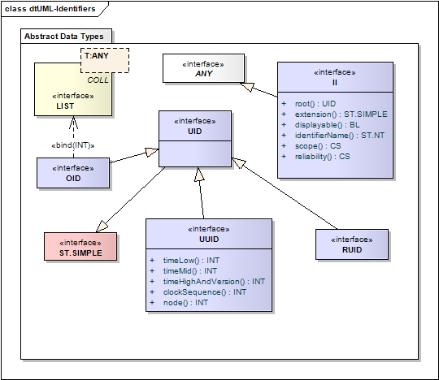
Instance Identifier data types.
Definition: A unique identifier string is a character string which identifies an object in a globally unique and timeless manner. The allowable formats and values and procedures of this data type are strictly controlled by HL7. At this time, user-assigned identifiers SHALL only be certain character representations of ISO Object Identifiers (OID) and DCE Universally Unique Identifiers (UUID). In addition, HL7 reserves the right to assign other forms of UIDs (RUID), such as mnemonic identifiers for code systems.
The sole purpose of UID is to be a globally and timelessly unique identifier. The form of UID, whether it is an OID, a UUID or a RUID, is entirely irrelevant. As far as HL7 is concerned, the only thing one can do with a UID is denote to the object for which it stands. Comparison of UIDs is literal, i.e. if two UIDs are literally identical, they are assumed to denote to the same object. If two UIDs are not literally identical they may not denote to the same object. Note that this comparison is case sensitive; (OID)s do not have letters subject to case, (UUID)s are fixed to uppercase, and (RUID)s have a fixed case.
protected type UniqueIdentifierString alias UID specializes ST.SIMPLE; |
No difference in semantics is recognized between the different allowed forms of UID. The different forms are not distinguished by a component within or aside from the identifier string itself.
Even though this specification recognizes no semantic difference between the different forms of the unique identifier forms, there are differences of how these identifiers are built and managed, which is the sole reason to define subtypes of UID for each of the variants.
Definition: A globally unique string representing an ISO Object Identifier (OID) in a form that consists only of numbers and dots (e.g., "2.16.840.1.113883.3.1"). According to ISO, OIDs are paths in a tree structure, with the left-most number representing the root and the right-most number representing a leaf.
Each branch under the root corresponds to an assigning authority. Each of these assigning authorities may, in turn, designate its own set of assigning authorities that work under its auspices, and so on down the line. Eventually, one of these authorities assigns a unique (to it as an assigning authority) number that corresponds to a leaf node on the tree. The leaf may represent an assigning authority (in which case the root OID identifies the authority), a class of particlar objects, or an instance of an object. An assigning authority owns a namespace, consisting of its sub-tree.
OIDs are the preferred scheme for unique identifiers. OIDs SHOULD always be used except if one of the inclusion criteria for other schemes apply.
ISO/IEC 8824:1990(E) clause 28 defines the Object Identifier as
28.9 The semantics of an object identifier value are defined by reference to an object identifier tree. An object identifier tree is a tree whose root corresponds to [the ISO/IEC 8824 standard] and whose vertices [i.e. nodes] correspond to administrative authorities responsible for allocating arcs [i.e. branches] from that vertex. Each arc from that tree is labeled by an object identifier component, which is [an integer number]. Each information object to be identified is allocated precisely one vertex (normally a leaf) and no other information object (of the same or a different type) is allocated to that same vertex. Thus an information object is uniquely and unambiguously identified by the sequence of [integer numbers] (object identifier components) labeling the arcs in a path from the root to the vertex allocated to the information object.
28.10 An object identifier value is semantically an ordered list of object identifier component values. Starting with the root of the object identifier tree, each object identifier component value identifies an arc in the object identifier tree. The last object identifier component value identifies an arc leading to a vertex to which an information object has been assigned. It is this information object, which is identified by the object identifier value. [...]
|
According to ISO/IEC 8824 an object identifier is a sequence of object identifier component values, which are integer numbers. These component values are ordered such that the root of the object identifier tree is the head of the list followed by all the arcs down to the leaf representing the information object identified by the OID. The fact that OID specializes LIST<INT> represents this path of object identifier component values from the root to the leaf.
The leaf and "butLeaf" properties take the opposite view. The leaf is the last object identifier component value in the list, and the "butLeaf" property is all of the OID but the leaf. In a sense, the leaf is the identifier value and all of the OID but the leaf refers to the namespace in which the leaf is unique and meaningful.
However, what part of the OID is considered value and what is namespace may be viewed differently. In general, any OID component sequence to the left can be considered the namespace in which the rest of the sequence to the right is defined as a meaningful and unique identifier value. The value-property with a namespace OID as its argument represents this point of view.37
|
In order to support interoperability, HL7 maintains strict rules about the registration and use of OIDs. These rules are published in the "Core Principles of V3 Models" specification under "Identification" ([../coreprinciples/v3modelcoreprinciples.htm#coreP_Identification-registry]) and SHALL be followed.
While most owners of an OID will "design" their namespace sub-tree in some meaningful way, there is no way to generally infer any meaning on the parts of an OID. HL7 does not standardize or require any namespace sub-structure. An OID owner, or anyone having knowledge about the logical structure of part of an OID, may still use that knowledge to infer information about the associated object; however, the techniques cannot be generalized.
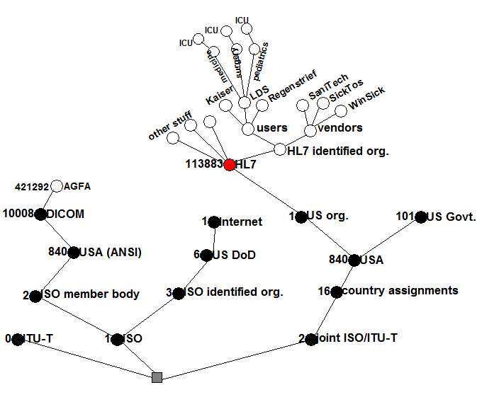
Example for a tree of ISO object identifiers. HL7's OID is 2.16.840.1.113883.
An HL7 interface SHALL NOT rely on any knowledge about the substructure of an OID for which it cannot control the assignment policies.
The structured definition of the OID is provided mostly to be faithful to the OID specification. Within HL7, OIDs are used as UID strings only, i.e., the literal string value is the only thing that is communicated and is the only thing that a reciever should have to consider when working with UIDs in the scope of the HL7 specification.
|
For compatibility with the DICOM standard, the literal form of the OID should not exceed 64 characters. (see DICOM part 5, section 9).
Definition: A globally unique string representing a DCE Universal Unique Identifier (UUID) in the common UUID format that consists of 5 hyphen-separated groups of hexadecimal digits having 8, 4, 4, 4, and 12 places respectively.
Both the UUID and its string representation are defined by the Open Group, CDE 1.1 Remote Procedure Call specification, Appendix A.
UUIDs are assigned based on Ethernet MAC addresses, the point in time of creation and some random component. This mix is believed to generate sufficiently unique identifiers without any organizational policy for identifier assignment (in fact this piggy-backs on the organization of MAC address assignment). Note that there are other common methods for generating UUIDs. HL7 does not require that the UUID method defined by the Open Group specification so long as generated UUIDs are globally unique.
UUIDs are not the preferred identifier scheme for use as HL7 UIDs. UUIDs may be used when identifiers are issued to objects representing individuals (e.g., entity instance identifiers, act event identifiers, etc.). For objects describing classes of things or events (e.g., catalog items), OIDs are the preferred identifier scheme.
|
Definition: The low field of the timestamp.
Definition: The middle field of the timestamp.
Definition: The high field of the timestamp multiplexed with the version number.
Definition: The high field of the clock sequence multiplexed with the variant and the low field of the clock sequence.
Definition: The spatially unique node identifier (usually the host address).
The structured definition of the UUID is provided mostly to be faithful to the UUID specification. Within HL7, UUIDs are used as UID strings only, i.e., the literal string value is the only thing that is communicated and is the only thing that a reciever should have to consider when working with UIDs in the scope of the HL7 specification.
The literal form for the UUID is defined according to the original specification of the UUID. However, because the HL7 UIDs are case sensitive, for use with HL7, the hexadecimal digits A-F in UUIDs SHALL be converted to upper case.
NOTE: The output of UUID related programs and functions may use all sorts of forms, upper case, lower case, and with or without the hyphens that group the digits. This variate output SHALL be postprocessed to conform to the HL7 specification, i.e., the hyphens SHALL be inserted for the 8-4-4-4-12 grouping and all hexadecimal digits SHALL be converted to upper case.
Definition: A globally unique string defined exclusively by HL7. Identifiers in this scheme SHALL only be defined by balloted HL7 specifications. Local communities or systems SHALL never use such reserved identifiers based on bilateral negotiations.
type HL7ReservedIdentifierScheme alias RUID specializes UID; |
HL7 reserved identifiers are strings that consist only of (US-ASCII) letters and digits, where the first character SHALL be a letter. HL7 may assign these reserved identifiers as mnemonic identifiers for major concepts of interest to HL7. RUID's are case sensitive; the case assigned to the identifier by HL7 will be used.
HL7 has reserved the RUID scheme for future use, but at this time there are no plans to make use of them, as OIDs and UUIDs have met all requirements so far identified.
Definition: An identifier that uniquely identifies a thing or object. Examples are object identifier for HL7 RIM objects, medical record number, order id, service catalog item id, Vehicle Identification Number (VIN), etc.
Note that a II does not identify the type of the object being identified, or the type of the association between the object and the identifier - it is only the identifier itself. 41
|
In order to simplify processing, when the root or extension properties have some nullFlavor other than NotApplicable, the II itself must have some kind of nullFlavor.
|
Definition: A unique identifier that guarantees the global uniqueness of the instance identifier. The root alone may be the entire instance identifier.
In the presence of a non-null extension, the root is the unique identifier for the "namespace" of the identifier in the extension. Note that this does NOT necessarily correlate with the organization that manages the issuing of the identifiers. A given organization may manage multiple identifier namespaces, and control over a given namespace may transfer from organization to organization over time while the root remains the same.42
|
In situations where an extension is known, but the root is not known, the II should be populated with a nullFlavor "Unknown", a null root, and an extension with the value. These situations may arise when identifiers such as driver's license or passport numbers are collected without ascertaining which authority issued them, or with point-of-care devices that contain a simple bar code scanner. In some of these cases, it may be possible to create a new II with a known root at a later time.
Definition: A character string as a unique identifier within the scope of the identifier root.
The extension is a character string that is unique in the namespace designated by the root. If a non-NULL extension exists, the root specifies a namespace (sometimes called "assigning authority" or "identifier type"). The extension property MAY be Not Applicable in which case the root OID is the complete unique identifier. If the root is not a complete unique identifier, and the extension is not known, then the II SHALL have a null value even if the root is populated.
|
The root and extension scheme means that the concatenation of root and extension SHALL be a globally unique identifier for the item that this II value identifies.
It is recommended that systems use the OID scheme for external identifiers of their communicated objects. The extension property is mainly provided to accommodate legacy alphanumeric identifier schemes.
Some identifier schemes define certain style options to their code values. For example, the U.S. Social Security Number (SSN) is normally written with dashes that group the digits into a pattern "123-12-1234". However, the dashes are not meaningful and a SSN can just as well be represented as "123121234" without the dashes.
In the case where identifier schemes provide for multiple representations, HL7 will make a ruling about which is the preferred form and document that ruling where that respective external identifier scheme is recognized. HL7 will decide upon the preferred form based on criteria of practicality and common use. In absence of clear criteria of practicality and common use, the safest, most extensible, and least stylized (the least decorated) form SHALL be given preference.43 In the absence of a preferred form or ruling, implementers should omit all non-significant separators when performing semantic equality checks.
HL7 MAY also decide to map common external identifiers to the value portion of the II.root OID. For example, the U.S. SSN could be represented as 2.16.840.1.113883.4.1.123121234. The criteria of practicality and common use will guide HL7's decision on each individual case.
NOTE: The normal mechanism for representing a UUID as an identifier is as the value of the root property, with the extension property set to NULL. A UUID expressed as an extension is not considered to be a match for a UUID in the root. i.e. A match is required on both root and extension to be considered a match. The root can be used to identify a namespace. The design of HL7 specifications SHALL never assume that receiving applications can infer the identity of the scoper or issuer, or the type of the identifier or identified object, from the namespace identifier.
Definition: This is a human-readable name for the namespace represented in the root. It is a descriptive name for the actual namespace. e.g. "California, U.S. Driver's License Number, 1970-".
IdentifierName does NOT refer to the organization which issued the identifier (e.g. California Dept. of Motor Vehicles). It is intended for use as a human readable label when an identifier must be displayed to a human user where an OID would not be meaningful. In general, it should only be used when an extension is present, allowing for a display such as "California, U.S. Driver's License Number, 1970-: 123456789". There are absolutely no guidelines for the contents of this text other than it should be completely descriptive of the namespace. E.g. "Driver's License" or even "California Driver's License" would not be ideal. However, formatting, capitalization, whitepace, language, etc. are completely up to the sender.
The Identifier Name has no computational value. identifierName can never modify the meaning of root. The purpose of a Identifier Name is to assist an unaided human interpreter of an II value to interpret the identifier. Applications SHALL NOT attempt to perform any decision-making, matching, filtering or other processing based on this presence or value of this property. It is for display and development assistance only. All decision logic SHALL be based solely on the root and extension properties. Conformant systems MAY choose not to implement identifierName but SHALL NOT reject instances because identifierName is present.
Definition: Specifies the scope in which the identifier applies to the object with which it is associated.
Definition: Specifies the reliability with which the identifier is known. This attribute MAY be used to assist with identifier matching algorithms.
Definition: Specifies if the identifier is intended for human display and data entry (displayable = true) as opposed to pure machine interoperation (displayable = false).
Conformant systems MAY choose not to implement displayable but SHALL NOT reject instances because displayable is present.
Two non-null instance identifiers are equal if and only if their root is equal, and their extensions are both null or equal.
|
NOTE: If the extension property has a null value other than the nullFlavor Unknown, the II itself must also be non-null. Implementations may assume that when an extension is null (i.e. missing) in a non-null II, the extension has a nullFlavor NotApplicable.
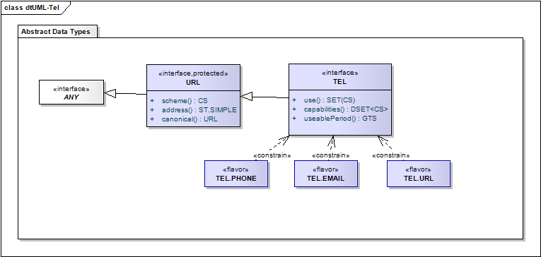
URL And TEL data types
Definition: A telecommunications address specified according to Internet standard RFC 2396 [http://www.ietf.org/rfc/rfc2396.txt]. The URI specifies the protocol and the contact point defined by that protocol for the resource. Notable uses of the telecommunication address data type are for telephone and telefax numbers, e-mail addresses, Hypertext references, FTP references, etc.
The Internet standard RFC 2396 [http://www.ietf.org/rfc/rfc2396.txt] defines a URI as follows:
Just as there are many different methods of access to resources, there are several schemes for describing the location of such resources. The generic syntax for URLs provides a framework for new schemes to be established using protocols other than those defined in this document.
URLs are used to "locate" resources, by providing an abstract identification of the resource location. Having located a resource, a system may perform a variety of operations on the resource, as might be characterized by such words as "access", "update", "replace", "find attributes". In general, only the "access" method needs to be specified for any URL scheme.
By agreement, it is permissable to use a URI in place of a URL. In these cases, the resources identified SHOULD be accessible by some agreed method. A common use of URI's is to refer to SOAP attachments.
|
Definition: Identifies the protocol used to interpret the address string and to access the resource so addressed.
Some URL schemes are registered by the Internet Assigned Numbers Authority (IANA) [http://www.iana.org], however IANA only registers URL schemes that are defined in Internet RFC documents. In fact there are a number of URL schemes defined outside RFC documents, some of which are registered with the World Wide Web Consortium (W3C).44
Note that while URIs and URLs can be used for all sorts of purposes, this specification explicitly limits itself to locatable resources.45. Locatable means that the definition of the scheme SHALL clearly establish how to locate and access the resource without implementors needing to consult local agreements to determine how the resource is to be accessed.
The scheme hl7-att is used to make references to HL7 Attachments. HL7 attachments may be located in the instance itself as an attachment on the Message class, or in some wrapping entity such as a MIME package, or stored elsewhere.
The following rules are required to make the hl7-att scheme work:
-
Attachments SHALL be globally uniquely identified. Attachment id is mandatory, and an ID SHALL never be re-used. Once assigned, an attachment id SHALL be accosiated with exactly one byte-stream as defined for ED.data.
-
When receiving an attachment, a receiver SHOULD store that attachment for later reference. A sender is not required to resend the same attachment if the attachment has already been sent.
-
Attachment references SHALL be resolved against all stored attachments using the globally unique attachment identifier in the address.
NOTE: When attempting to resolve an attachment reference receiver may need to be able to deal with references to attachments that have not been seen previously and will occur later in the document currently being processed. Forward references are allowed within an instance, as defined by the applicable ITS, but not to other message instances.
Applications MAY declare conformance to the HL7 Attachment Resolution Protocol, in which case they SHALL conform to the rules above. The rules are not mandatory for other applications. The hl7-att scheme should only be expected to work with applications that conform to the HL7 Attachment Resolution Protocol.
Definition: The address is a character string whose format is entirely defined by the scheme.
While conceptually URL has the properties scheme and address, the common appearance of a URL is as a string literal formed according to the Internet standard. The general syntax of the URL literal is:
|
Telephone and FAX Numbers
Note that there is no special data type for telephone numbers, telephone numbers are TELs and are specified as URLs.
The telephone number URL is defined in Internet RFC 2806 [http://www.ietf.org/rfc/rfc2806.txt]. Its definition is summarized in this subsection. This summary does not override or change any of the Internet specification's rulings.
The address is the telephone number in accordance with ITU-T E.123 Telephone Network and ISDN Operation, Numbering, Routing and Mobile Service: Notation for National and International Telephone Numbers (1993). While HL7 does not add or withdraw from the URL specification, the preferred subset of the address address syntax is given as follows:
|
The global absolute telephone numbers starting with the "+" and country code are preferred. Separator characters serve as decoration but have no bearing on the meaning of the telephone number. For example: "tel:+13176307960" and "tel:+1(317)630-7960" are both the same telephone number.
Definition: The URL with any separator or other non-significant characters stripped out of the address.
The actual characters stripped out depends on the scheme. The tel: syntax allows for characters such as () which are syntactical separator characters but do not change the actual telephone number. canonical strips characters like these out of the address portion. The email: syntax allows for the inclusion of non-semantic comment in "phrases" and "comments". These are removed in the canonical form. Consult RFC 2368 [http://www.ietf.org/rfc/rfc2368.txt] and RFC 822 [http://www.ietf.org/rfc/rfc822.txt] for further information. Headers are also removed.
Two nonNull URLs are equal if they have the same scheme and canonical address. If the address is not known, then it is not known whether the addresses are equal.
|
Applications SHALL ignore separator characters when comparing URLs with tel: scheme.
Definition: A locatable resource that is identified by a URI. The address is specified as a Universal Resource Identifier (URL) qualified by time specification and use codes that help in deciding which address to use for a given time and purpose. TEL may be used to designate a retrievable resource such as a web page, a telephone number (voice, fax or some other resource mediated by telecommunication equipment), an e-mail address, or any other locatable resource that can be specified by a URL.
The semantics of a telecommunication address is that a communicating entity (the responder) listens and responds to that address, and therefore can be contacted by an other communicating entity (the initiator).
The responder of a telecommunication address may be an automatic service that can respond with information (e.g., FTP or HTTP services). In such case a telecommunication address is a reference to that information accessible through that address. A telecommunication address value can thus be resolved to some information (in the form of encapsulated data, ED).
|
The telecommunication address is an extension of the Universal Resource Locator (URL) specified according to Internet standard RFC 2396 [http://www.ietf.org/rfc/rfc2396.txt]. The URL specifies the protocol and the contact point defined by that protocol for the resource. Notable use cases for the telecommunication address data type are for telephone and fax numbers, e-mail addresses, Hypertext references, FTP references, etc.
NOTE: The proper way to express an unknown phone number is to provide an appropriate value for the scheme property, such as "tel", populate the use property as appropriate, and leave the address value as null. NullFlavor SHALL also be valued in this case.
Definition: One or more codes advising a system or user which telecommunication address in a set of like addresses to select for a given telecommunication need.
The telecommunication use code is not a complete classification for equipment types or locations. Its main purpose is to suggest or discourage the use of a particular telecommunication address. There are no easily defined rules that govern the selection of a telecommunication address.
Definition: One or more codes advising a system or user what telecommunication capabilities are known to be associated with the telecommunication address.
Definition: Specifies the periods of time during which the telecommunication address can be used. For a telephone number, this can indicate the time of day in which the party can be reached on that telephone. For a web address, it may specify a time range in which the web content is promised to be available under the given address.
The first example shows a combination work and home phone number.
<tel value="tel:+15556755745" use="H WP"/> |
The second example shows a combination work phone number with optional separators and an extension 545.
<tel value="tel:+1(555)6755745;postd=545" use="WP"/> |
Note that extensions are not the only use for the post-dial sequence. Consult RFC 2806 [http://www.ietf.org/rfc/rfc2806.txt] for further details. The canonical form of this example is:
<tel value="tel:+15556755745;postd=545" use="WP"/> |
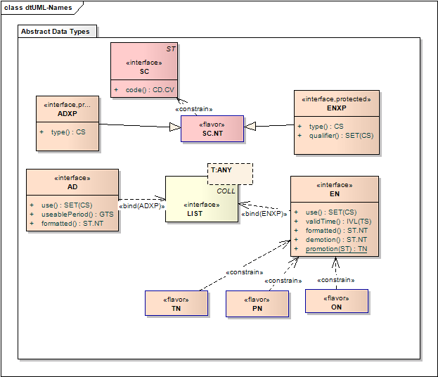
Data types for Postal Address and Entity Names (Person, Organization, and Trivial Names) are all based on extensions of a character string.
Definition: A character string that may have a type-tag signifying its role in the address. Typical parts that exist in about every address are street, house number, or post box, postal code, city, country but other roles may be defined regionally, nationally, or on an enterprise level (e.g. in military addresses). Addresses are usually broken up into lines, which are indicated by special line-breaking delimiter elements (e.g., DEL).
|
Definition: Specifies whether an address part names the street, city, country, postal code, post box, etc. If the type is NULL the address part is unclassified.
The hierarchical nature of this code system shows composition. E.g. "Street Name" is part of "Street Address Line"
Some Address Part Types are associated with a Domain, and the code of SC may be valued in these cases. If no Domain is associated with the address part type, then the code may not be valued. The text content of the part is not restricted by the vocabulary domain unless constrained in this way by a realm.
| Part Type | Concept Domain |
|---|---|
| UNIT | AddressPartUnitType |
| DINST | AddressPartDeliveryInstallationType |
| DMOD | AddressPartDeliveryMode |
| STTYP | AddressPartStreetType |
| CNT | Country |
| STA | AddressPartState |
| CPA | AddressPartCounty |
| CTY | AddressPartCity |
| DIR | AddressPartDirection |
The concept domain Country is bound to ISO 3166. ISO 3166 is a code system with the OID 1.0.3166.1.2 that defines 2 letter, 3 letter, and numerical codes for each country. HL7 defines a universal value set with the OID [oid] that includes all 3 types of code, so that all 3 types of code may be used. Realms are able to restrict the use of country to a particular type of code by binding the domain Country to a more restrictive value set.
The other concept domains are not bound to any particular value set or code system, but realms may specify particular bindings. Note that ISO 3166 also specifies country sub-divisions, and realms should consider using these sub-divisions where possible.
NOTE: Please consult the "Core Principles of V3 Models" specification ([../coreprinciples/v3modelcoreprinciples.htm]) for a discussion of the relationship between code systems and instance identifiers for concepts such as country.
Definition: The human language of the address part, if known and relevant.
While values of type ADXP may be assigned a language, the meaning of the part is not dependent on the language, and applications SHALL not be required to indicate the linguistic origin of any address part. Like ST, language is not part of the equality test for ADXP.
Definition: Mailing and home or office addresses. A sequence of address parts, such as street or post office box, city, postal code, country, etc.
AD is primarily used to communicate data that will allow printing mail labels, that will allow a person to physically visit that address. The postal address data type is not supposed to be a container for additional information that might be useful for finding geographic locations (e.g., GPS coordinates) or for performing epidemiological studies. Such additional information is captured by other, more appropriate HL7 elements.
Addresses are conceptualized as text with added logical mark-up. The mark-up may break the address into lines and may describe in detail the role of each address part if it is known. Address parts occur in the address in the order in which they would be printed on a mailing label. The approach is similar to HTML or XML markup of text (but it is not technically limited to XML representations).
Addresses are essentially sequences of address parts, but add a "use" code and a valid time range for information about if and when the address can be used for a given purpose.
|
The correct presentation order of the parts is realm dependent and may not be the same between addresses from different countries or realms. Patients regularly travel between realms, so realm specified ordering and constraints need to account for addresses from other realms as well.
Definition: A set of codes advising a system or user which address in a set of like addresses to select for a given purpose.
An address without specific use code might be a default address useful for any purpose, but an address with a specific use code would be preferred for that respective purpose.
An address with a use of "H" and a nullFlavor of NotApplicable means that the concept of a home address does not apply; i.e. that a person has no fixed place of abode.
Definition: A General Timing Specification (GTS) specifying the periods of time during which the address can be used. This is used to specify different addresses for different times of the week or year.
Definition: A boolean value specifying whether the order of the address parts is known or not. While the address parts are always a Sequence, the order in which they are presented may or may not be known. Where this matters, the isNotOrdered property can be used to convey this information.
The default isNotOrdered is false: the order of address parts is considered meaningful by default.
Two address values are considered equal if both contain the same address parts, independent of ordering. Use code, useablePeriod, and isNotOrdered are excluded from the equality test. 49
|
Note that two values that refer to the same address but that are encoded using different address parts (perhaps to different levels of detail) would not be considered equal.
Definition: A character string value with the address formatted in lines and with proper spacing. This is only a semantic property to define the function of some of the address part types.50
AD's main purpose is to capture postal addresses, such that one can visit that address or send mail to it. Humans will look at addresses in printed form, such as on a mailing label. The AD data type defines precise rules of how its data is formatted.51
Addresses are ordered lists of address parts. Each address part is printed in the order of the list from left to right and top to bottom (or in any other language-related reading direction, which to determine is outside the scope of this specification). Every address part value is printed. Most address parts are framed by white space. The following six rules govern the setting of whitespace.
- Whitespace never accumulates, i.e. two subsequent spaces are the same as one. Subsequent line breaks can be reduced to one. Whitespace around a line break is not significant.
- Literals may contain explicit whitespace, subject to the same white space reduction rules. There is no notion of a literal line break within the text of a single address part.
- Leading and trailing explicit whitespace is insignificant in all address parts, except for delimiter (DEL) address parts.
- By default, an address part is surrounded by implicit whitespace.
- Delimiter (DEL) address parts are not surrounded by any implicit white space.
- Leading and trailing explicit whitespace is significant in delimiter (DEL) address parts.
This means that all address parts are generally surrounded by white space, but whitespace does never accumulate. Delimiters are never surrounded by implicit whitespace and every whitespace contributed by preceding or succeeding address parts is discarded, whether it was implicit or explicit.
Definition: A character string token representing a part of a name. May have a type code signifying the role of the part in the whole entity name, and a qualifier code for more detail about the name part type. Typical name parts for person names are given names, and family names, titles, etc.
|
NOTE: Note that as a specialization of ST, a non-null ENXP must have some content. If no content is known, a nullFlavor must be supplied, though the normal usage would be to omit the part altogether (with an implicit nullFlavor of NI).
Definition: Indicates whether the name part is a given name, family name, prefix, suffix, etc.
| lvl | code | name | definition |
|---|
Not every name part must have a type code; if the type code is unknown, not applicable, or simply undefined this is expressed by a NULL value (type.isNull). For example, a name may be "Rogan Sulma" and it may not be clear which one is a given name or which is a last name, or whether Rogan may be a title.
When a name is hyphenated, such as Mary-Ann, it may be ambigious whether to use a delimiter separating two name parts, or a single name part with a hyphen in it. As a rule of thumb, if each name part should contribute an initial when the name is presented as initials, then a delimiter SHOULD be used to separate two parts.
Entity names are conceptualized as text with added mark-up. The mark-up may describe in detail the role of each name part if it is known. Name parts occur in the order in which they would be printed on a mailing label. The model is similar to HTML or XML markup of text.
Some Entity Name Part Types are associated with a Domain, and the code of SC may be valued in these cases. If no Domain is associated with the address part type, then the code may not be valued. The text content of the part is not restricted by the vocabulary domain unless constrained in this way by a realm.
| Part Type | Domain |
|---|---|
| PFX | EntityNamePrefix |
| SFX | EntityNameSuffix |
These domains are not bound to any particular value set, but realms may specify particular bindings.
Definition: The qualifier is a set of codes each of which specifies a certain subcategory of the name part in addition to the main name part type. For example, a given name may be flagged as a nickname, a family name may be a pseudonym or a name of public records.
| lvl | code | name | definition |
|---|
NOTE: Note: The Scandinavian “Mellomnavn / Mellannamn” translates to “middle name” but does not match the English ‘middle name’ concept. The general English ‘middle name’ concept is simply all of the given names after the first.
NOTE: Note: The qualifiers PFX and SFX are mutually incompatible. It is not legal to use both on the same part type. It is not necessary to label the name part following a prefix as a suffix or vice versa.
NOTE: Initials are allowed to be more than one letter specifically to cater for linguistic norms in the applicable language. Abbreviations, such as Dr. for Doctor are not initials.
The following table summarizes which qualifiers may be used with which part types:
‡ = This combination is allowed.
‡‡ = This combination is allowed, and it is expected that this combination will be encountered in practice.
See also the note under EN.use for further rules.
Definition: The human language of the name part, if known and relevant.
While values of type ENXP may be assigned a language, the meaning of the part is not dependent on the language, and applications SHALL not be required to indicate the linguistic origin of any name part. Like ST, language is not part of the equality test for ENXP.
|
Values of type ENXP do not have any assigned language. Though names may contain words and concepts from a particular language, the meaning of the name part is not dependent on the language.
Definition: A name for a person, organization, place or thing. A sequence of name parts, such as given name or family name, prefix, suffix, etc. Examples for entity name values are "Jim Bob Walton, Jr.", "Health Level Seven, Inc.", "Lake Tahoe", etc. An entity name may be as simple as a character string or may consist of several entity name parts, such as, "Jim", "Bob", "Walton", and "Jr.", "Health Level Seven" and "Inc.", "Lake" and "Tahoe".
Entity names are conceptualized as text with added logical mark-up. Name parts occur in a natural order in which they would be displayed, as opposed to in a order detemined by name part. The ordering of the name parts is significant a feature that replaces the need for a separate "display name" property. Applications may change that ordering of name parts to account for their user's customary ordering of name parts. The approach is similar to HTML or XML markup of text (but it is not technically limited to XML representations).
Entity names are essentially sequences of entity name parts, but add a "use" code and a valid time range for information about when the name was used and how to choose between multiple aliases that may be valid at the same point in time.
|
The existence of the use and qualifier codes does not mean that names must always be fully encoded. For example, in most contexts, as a matter of cultural practice, prefixes will simply be recorded as part of the family name to which they are corrected. Some specific implementation negotiation may always be required to clarify how to deal with implementations that have different policies about how names are represented using the facilities of the name.
Definition: A set of codes advising a system or user which name in a set of names to select for a given purpose.
| lvl | code | name | definition |
|---|
A name without specific use code might be a default name useful for any purpose, but a name with a specific use code would be preferred for that respective purpose.
NOTE: The use and qualifier codes are both used as sets, where more than one of each type may be used. This allows syntactically well-formed but semantically absurd constructions. The following rules apply:
A single entity name may not have more than one NameRepresentationUse code.
T, ABC, SYL, and IDE should be accompanied by some other name use code
An organization entity name part qualifier code of "LS" may not be combined with any other qualifiers except PFX or SFX.
The qualifiers BR and AD (or SP) are mutually incompatible
Definition: An interval of time specifying the time during which the name is or was used for the entity. This accommodates the fact that people change names for people, places and things.
EN.validTime conforms to the history item data type extension (HXIT) property validTime.
Definition: The Entity Name with a standard ordering imposed on the parts.
The canonical form contains all the part types except for the delimiters, in the following order:
- titles not marked as suffix
- given names, with any prefixes and/or suffixes associated with the given names
- family names, with any prefixes and/or suffixes associated with the given names
- unknown name part types
- titles with qualifier suffix
Each list of part types SHALL be in the order of the original name except as required to maintain specified prefix and suffix relationships.
The canonical form is primarily defined for the purposes of defining equality, and may differ from the socially accepted order for the name parts in various cultures around the world.
Two name values are considered equal if their canonical forms both contain the same name parts in the same order. Use code and valid time are excluded from the equality test.
|
Definition: A character string value with the entity name formatted with proper spacing. This is only a semantic property to define the function of some of the name part types.54
EN's main purpose is to capture names of people, places, and things (entities), so that one can address and refer to these entities in speech and writing. Humans will look at names in printed form, such as on a mailing label. EN therefore defines precise rules of how its data is formatted.55
Entity names are ordered lists of entity name parts. Each entity name part is printed in the order of the list from left to right (or in any other language-related reading direction). Every entity name part is printed. Most entity name parts are framed by whitespace. The following seven rules govern the setting of whitespace.
- Whitespace never accumulates, i.e. two subsequent spaces are the same as one.
- Literals may contain explicit whitespace subject to the same white space reduction rules.
- Except for prefix, suffix and delimiter name parts, every name part is surrounded by implicit whitespace. Leading and trailing explicit whitespace is insignificant in all those name parts.
- Delimiter name parts are not surrounded by any implicit white space. Leading and trailing explicit whitespace is significant in delimiter name parts.
- Prefix name parts only have implicit leading whitespace but no implicit trailing whitespace. Trailing explicit whitespace is significant in prefix name parts.
- Suffix name parts only have implicit trailing whitespace but no implicit leading whitespace. Leading explicit whitespace is significant in suffix name parts.
- This means that all entity name parts are generally surrounded by whitespace, but whitespace does never accumulate. Delimiters are never surrounded by implicit whitespace, prefixes are not followed by implicit whitespace and suffixes are not preceded by implicit white space. Every whitespace contributed by preceding or succeeding name parts around those special name parts is discarded, whether it was implicit or explicit.
A EN can be demoted into ST by using the formatted representation.
|
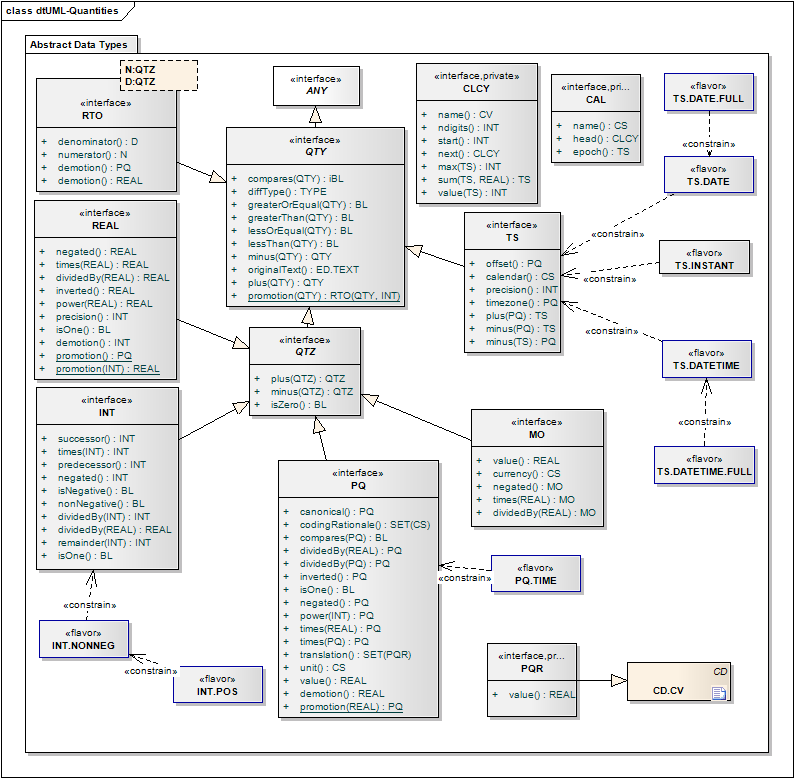
Quantity Data Types
Definition: The quantity data type is an abstract generalization for all data types (1) whose value set has an order relation (less-or-equal) and (2) where difference is defined in all of the data type's totally ordered value subsets. The quantity type abstraction is needed in defining certain other types, such as the interval and the probability distribution.
Definition: A predicate indicating if this value and the operand can be compared as to which is greater than the other.
Two quantities are comparable if they are both elements of a common totally ordered partition of their data types' value space. The definition is based on lessOrEqual.
|
Definition: A predicate expressing an order relation that is reflexive, asymmetric and transitive, between this quantity and another quantity.
The lessOrEqual relation is defined on any totally ordered partition of the quantity data type. A totally ordered partition is a subset of the data types's defined values where all elements have a defined order (e.g., the integer and real numbers are totally ordered).
By contrast, a partially ordered set is a set where some, but not all pairs of elements are comparable through the order relation (e.g., a tree structure or the set of physical quantities is a partially ordered set). Two data values x and y of an ordered type are comparable (x.isComparableTo(y)) if the less-or-equal relation holds in either way (x ≤ y or y ≤ x).
A partial order relation generates totally ordered subsets whose union is the entire set (e.g., the set of all length is a totally ordered subset of the set of all physical quantities).
For example, a tree structure is partially ordered, where the root is considered less or equal to a leaf, but there may not be an order among the leafs. Also, physical quantities are partially ordered, since an order exists only among quantities of the same dimension (e.g., between two lengths, but not between a length and a time). A totally ordered subset of a tree is a path that transitively connects a leaf to the root. The physical dimension of time is a totally ordered subset of physical quantities.
|
Definition: A predicate expressing an order relation that is asymmetric and transitive, between this quantity and another quantity. The ordering is the same as lessOrEqual, but irreflexive.
|
Definition: A predicate expressing an order relation that is asymmetric and transitive, between this quantity and another quantity. This is the invese of lessThan.
|
Definition: A predicate expressing an order relation that is reflexive, asymmetric and transitive, between this quantity and another quantity. This is the inverse order of lessOrEqual.
|
Definition: The type of the difference between two values of a specific QTY data type. The data type of the difference quantity is related to the operand quantities but need not be the same.
diffType is a data type that can express the difference between two values for which the ordering relation is defined (i.e., two elements of a common totally ordered subset). For example, the difference data type of integer number is integer number, but the difference type of point in time is a physical quantity in the dimension of time. A difference data type is a totally ordered data type.
|
The type will be some data type that further specializes QTY.
Definition: A quantity expressing the "distance" of this quantity from the operand quantity, that must be comparable.
|
The difference between two quantities has the data type returned by the diffType property of the instance. This leads to two different minus operations, one with an operand of the same type as the instance, and the other with the diffType of the instance, with the return types of the matching type. When the diffType is the same as the dataType, there is only one minus operation.
A difference is defined in an ordered set if it is semantically meaningful to state that Δ is the difference between the values x and y. This difference Δ must be meaningful independently from the values x and y. This independence exists if for all values u one can meaningfully derive a value v such that Δ would also be the difference between u and v. The judgment for what is meaningful cannot be defined formally.56
The difference between two values x minus y must be defined for all x and y in a common totally ordered subset of the data type's value set.
If x and y are not comparable, then the difference will be Null.57
|
Definition: The sum of this quantity and its operand. The operand must be of a data type that can express the difference between two values of this quantity's data type.
|
If y is not a valid type for the difference between two values of the type of x, the the result of the operation will be NULL.
|
Definition: The text representation from which the QTY was encoded, if such a representation is the source of the QTY. Original text can be used in a structured user interface to capture what the user saw as a representation of the code on the data input screen, or in a situation where the user dictates or directly enters text, it is the text entered or uttered by the user.
The originalText is not a substitute for a valid value. If the actual value of the QTY is not valid, then the QTY SHALL be null, irrespective of whether originalText has a value or not.
Note that although post-coding is often performed from free text information, such as documents, scanned images or dictation, multi-media data is explicitly not permitted as original text. Also, the original text property is not meant to be a link into the entire source document. The link between different artifacts of medical information (e.g., document and coded result) is outside the scope of this specification and is maintained elsewhere in the HL7 standards. The original text SHALL be an excerpt of the relevant information in the original sources, rather than a pointer or exact reproduction. Thus the original text SHALL be represented in plain text form. In specific circumstances, as described in other HL7 specifications, the originalText may be a reference to some other text artefact for which the resolution scope is clearly described.
Definition: The Zeroed Quantity data type is an abstract generalization for all data types where the addition and subtraction operations involve both operands and results from the same type, and where the concept of a zero value exists.
|
|
|
The result of minus has the same data type as the instance.
The operand has the same type as this quantity's data type.
Definition: The neutral element in the difference and addition operations, i.e., if a quantity is zero, addition to, or subtraction from any other comparable quantity will result in that other quantity.
|
Zero is the difference between a value and itself.
Definition: Integer numbers (-1,0,1,2, 100, 3398129, etc.) are precise numbers that are results of counting and enumerating. Integer numbers are discrete, the set of integers is infinite but countable. No arbitrary limit is imposed on the range of integer numbers. Two NULL flavors are defined for the positive and negative infinity.
Since the integer number data type includes all of the semantics of the mathematical integer number concept, the basic operations plus (addition) and times (multiplication) are defined. These operations are defined here as characterizing operations in the sense of ISO 11404, and because these operations are needed in other parts of this specification, namely the semantics of the literal form.
The traditional recursive definitions of addition and multiplication are due to Grassmann, and use the notion of successor.58
|
Definition: The INT value that is greater than this INT value but where no INT value exists between this value and its successor.
|
Definition: The inverse of successor.
|
|
The difference between two INT values is also a INT value.
|
Definition: The result of multiplying this integer with the operand, equivalent to repeated additions of this integer.
|
Definition: The inverse element of the INT value, another INT value, which, when added to that value yields zero (the neutral element).
|
Definition: A predicate indicating whether this INT is less than zero (not non-negative).
|
Definition: A predicate indicating whether the INT zero (neutral element) is less or equal to this INT.
|
Definition: The division operation of this integer (dividend) with a real number (divisor) to produce a real number value.
|
Definition: The integer division operation of this integer (dividend) with another integer (divisor) is the integer number of times the divisor fits into the dividend.
|
Definition: The remainder of the integer division.
|
This definition of the remainder matches the C and Java programming languages.
Definition: A predicate indicating if this value is the number one, i.e., the neutral element of multiplication. There is exactly one integer that has this property.
|
The literal form of an integer is a simple decimal number, i.e. a string of decimal digits.
|
Definition: A scalar magnitude. Typically used whenever quantities are measured, estimated, or computed from other real numbers. The typical representation is decimal, where the number of significant decimal digits is known as the precision.
The term "Real number" in this specification is used to mean that fractional values are covered without necessarily implying the full set of the mathematical real numbers that would include irrational numbers such as ρ, Euler's number, etc.59
NOTE: This specification defines the real number data type in the broadest sense possible. However, it does not imply that any conforming ITS or implementation must be able to represent the full range of Real numbers, which would not be possible in any finite implementation. HL7's current use cases for the Real number data type are measured and estimated quantities and monetary amounts. These use cases can be handled with a restricted Real value space, rational numbers, and even just very limited decimals (scaled integers). However, we declare the representations of the real value space as floating point, rational, scaled integer, or digit string, and their various limitations to be out of the scope of this specification.
This specification offers two choices for a number data type. The choice is made as follows: Any number attribute is a real if it is not known for sure that it is an integer. A number is an integer if it is always counted, typically representing an ordinal number. If there are conceivable use cases where such a number would be estimated or averaged, it is not always an integer and thus should use the Real data type.
The algebraic operations are specified here as characterizing operations in the sense of ISO 11404, and because these operations are needed in other parts of this specification.
Unlike the integer numbers, the real numbers semantics are not inductively constructed but only intuitively described by their axioms of their algebraic properties. The completeness axioms are intentionally left out so as to make no statement about irrational numbers.
The value set of REAL is totally ordered.
|
|
The difference between two REAL values is also a REAL value.
Definition: The number of significant digits of the decimal representation.
Precision is formally defined based on the literal.
The precision attribute is only the precision of a decimal digit representation, not the accuracy of the real number value.
The purpose of the precision property for the real number data type is to faithfully capture the whole information presented to humans in a number. The amount of decimal digits shown conveys information about the uncertainty (i.e., precision and accuracy) of a measured value.
NOTE: The precision of the representation is independent from uncertainty (precision accuracy) of a measurement result. If the uncertainty of a measurement result is important, one should specify uncertain values as PPD or CIVL.
The rules for what digits are significant are as follows:
- All non-zero digits are significant.
- The zero immediately left to the decimal point is significant (even if either the zero or the decimal point is omitted).
- All zeroes to the right of a significant digit are significant.
NOTE: These rules of significance differ slightly from the more casual rules taught in school. Elsewhere, e.g., 2000 is ambiguous as to whether the zeroes are significant. This deviation from the common custom is warranted for the purpose of unambiguous communication.
The precision of the representation SHOULD match the uncertainty of the value. However, precision of the representation and uncertainty of the value are separate independent concepts. Refer to PPD<REAL> for details about uncertain real numbers.
For example "0.123" has 3 significant digits in the representation, but the uncertainty of the value may be in any digit shown or not shown, i.e., the uncertainty may be 0.123±0.0005, 0.123±0.005 or 0.123±0.00005, etc. Note that ITS representations should adjust their representational precision with the uncertainty of the value. However, since the precision in the digit string is granular to 0.5 the least significant digit, while uncertainty may be anywhere between these "grid lines", 0.123±0.005 would also be an adequate representation for the value between 0.118 and 0.128.
NOTE: On a character based Implementation Technology the ITS may not represent the precision as an explicit attribute if numbers are represented as decimal digit strings. In that case, the ITS SHALL abide by the rules of an unambiguous determination of significant digits. A number representation SHALL not produce more or less significant digits than were originally in that number. Conformance can be tested through round-trip encoding — decoding — encoding.
|
Definition: A REAL value, which, when added to another REAL value yields zero (the neutral element of addition).
|
Definition: A predicate indicating if this value is the number one, i.e., the neutral element of multiplication. There is exactly one real number that has this property.
|
Definition: An operation in REAL that forms an abelian group and is related to addition by the law of distribution.
|
Definition: The division operation of this real number(dividend) with a real number (divisor).
|
Definition: A REAL value, which, when muliplied with another REAL value yields one (the neutral element of multiplication). Zero (the neutral element of addition) has no inverse element.
|
Definition: The basis of exponentiation is the iterative multiplication of a real number, and extended to rational exponents as the inverse operation.
We only list certain common properties of exponentiation.
|
The literal form of an real is a string of decimal digits with optional leading "+" or "-" sign, and optional decimal point, and optional exponential notation using a case insensitive "e" between the mantissa and the exponent. The number of significant digits SHALL conform to the precision property.
|
Examples of real literals for two thousand are 2000, 2000., 2e3, 2.0e+3, +2.0e+3.
Note that the literal form does not carry type information. For example, "2000" is a valid representation of both a real number and an integer number. No trailing decimal point is used to disambiguate from integer numbers. An ITS that uses this literal form must recover the type information from other sources.
The INT and REAL data types are related by a homomorphism that maps every value in INT to a value in REAL whereby the algebraic properties of INT are preserved. This means, an integer can be promoted to a real and a real can be demoted to an integer by means of rounding off the fractional part.
|
Definition: A quantity constructed as the quotient of a numerator quantity divided by a denominator quantity. Common factors in the numerator and denominator are not automatically cancelled out. The RTO data type supports titers (e.g., "1:128") and other quantities produced by laboratories that truly represent ratios. Ratios are not simply "structured numerics": for instance, blood pressure measurements (e.g. "120/60") are not ratios.
Ratios are different from rational numbers, i.e., in ratios common factors in the numerator and denominator never cancel out. A ratio of two real or integer numbers is not automatically reduced to a real number. In many cases the REAL should be used instead of RTO
NOTE: This data type is not defined to generally represent rational numbers. It is used only if common factors in numerator and denominator are not supposed to cancel out. This is only rarely the case. For observation values, ratios occur almost exclusively with titers.
|
The default value for both numerator and denominator is the integer number 1 (one). The denominator may not be zero.
NOTE: This data type is defined as a generic data type so that it can be constrained precisely as to what the numerator and denominator types should be.
Definition: The quantity that is being divided in the ratio. The default is the integer number 1 (one).
Definition: The quantity that devides the numerator in the ratio. The default is the integer number 1 (one). The denominator SHALL not be zero.
|
A ratio literal form exists for all ratios where both numerator and denominators have literal forms. A ratio is simply the numerator literal a colon as separator followed by the denominator literal. When the colon and denominator are missing, the integer number 1 is assumed as the denominator.
|
For example, the rubella virus antibody titer value 1:64 could be represented using the literal "1:64".
Definition: A ratio can be demoted to a real by dividing the numerator by the denominator.
The numerator and denominator are converted to a REAL prior to the operation.
Definition: A ratio can be demoted to a physical quantity by dividing the numerator by the denominator. The units are derived by dividing the units for the numerator by the units for the denominator.
The the numerator or denominator are not physical quantities, they must first be converted to a REAL and promoted to PQ by assigning the unit "1".
Definition: A dimensioned quantity expressing the result of measuring.
| Name | Type | Description |
|---|---|---|
| value | REAL | The magnitude of the quantity measured in terms of the unit. |
| unit | CS | The unit of measure specified in the Unified Code for Units of Measure (UCUM) [http://aurora.regenstrief.org/ucum]. The default unit is 1. |
| codingRationale | SET<CS> | CodingRationale provides a reason why a particular PQ has been provided, either as the root concept or as one of the translations. |
| translation | DSET<PQR> | An alternative representation of the same physical quantity expressed in a different unit, of a different unit code system and possibly with a different value. |
| canonical | PQ | A physical quantity expressed in a canonical unit. In any given unit system has every physical dimension can be assigned one canonical unit Defining the canonical unit is not subject of this specification, only asserting that such a canonical unit exists (and can be arbitrarily chosen) for every physical quantity. An abstract physical quantity is equal to its canonical form. |
| diffType | TYPE | The type of the difference between two values of a specific QTY data type. The data type of the difference quantity is related to the operand quantities but need not be the same. |
| isOne | BL | A predicate indicating if this value is the number one, i.e., the neutral element of multiplication. There is exactly one physical quantity that has this property and is called the unity. |
| negated | PQ | A PQ value, which, when added to another PQ value yields zero (the neutral element of addition). |
| inverted | PQ | A PQ value, which, when muliplied with another PQ value yields one (the neutral element of multiplication). Zero (the neutral element of addition) has no inverse element. The quotient of two comparable quantities is comparable to the unity (the unit 1). |
| demotion | REAL |
Definition: The magnitude of the quantity measured in terms of the unit.
Definition: The unit of measure specified in the Unified Code for Units of Measure (UCUM) [http://aurora.regenstrief.org/ucum]. The default unit is 1.
UCUM defines two forms of expression, case sensitive and case insensitive. PQ uses the case sensitive codes. The codeSystem OID for the case sensitive form is 2.16.840.1.113883.6.8.
NOTE: Equality of physical quantities does not require the values and units to be equal independently. Value and unit is only how we represent physical quantities. For example, 1 m equals 100 cm. Although the units are different and the values are different, the physical quantities are equal. Therefore one should never expect a particular unit for a physical quantity but instead provide automated conversion between different comparable units.
The unit SHALL come from UCUM, which only specifies unambiguous measurement units. Sometimes it is not clear how some measurements in healthcare map to UCUM codes. The general pattern for a measurement is value unit of Thing. In this scheme, the PQ represents the value and the unit, and the Thing is described by some coded concept that is linked to the PQ by the context of use. This maps obviously to some measurements, such as Patient Body Temperature of 37 Celsius, and 250 mg/day of Salicylate.
However for some measurements that arise in healthcare, the scheme is not so obvious. Two classic examples are 5 Drinks of Beer, and 3 Acetominophen tablets. At first glance it is tempting to classify these measurments like this: 5 drinks of Beer and 3 Acetominophen tablets. The problem with this is that UCUM does not support units of "beer", "tablets" or "scoops".
The reason for this is that neither tablets or scoops are proper units. What kind of tablets? How big is the scoop? In these kinds of cases, the concept that appears to be a unit needs to further specified before interoperability is established. If a correct amount is required, then it is generally appropriate to specify an exact measurement with an appropriate UCUM unit. If this is not possible, then the concept is not part of the measurement. UCUM provides a unit called unity for use in these cases. The proper way to understand these measurements as 3 1 Acetominophen tablets, where 1 is the UCUM unit for unity, and the Thing has a qualifier. It is occasionally possible to use a CD.qualifier to qualify the concept of the Thing directly, but usually there will be a need for extra information to clarify the measurements associated with the qualifying concept, and some further component observation would be required. 61
Definition: CodingRationale provides a reason why a particular PQ has been provided, either as the root concept or as one of the translations.
Definition: An alternative representation of the same physical quantity expressed in a different unit, of a different unit code system and possibly with a different value.
Definition: A physical quantity expressed in a canonical unit. In any given unit system has every physical dimension can be assigned one canonical unit Defining the canonical unit is not subject of this specification, only asserting that such a canonical unit exists (and can be arbitrarily chosen) for every physical quantity. An abstract physical quantity is equal to its canonical form.
Physical quantities semantically are the results of measurement acts. Although physical quantities are represented as pairs of value and unit, semantically, a physical quantity is more than that. To find out whether two physical quantities are equal, it is not enough to compare equality of their two values and units independently. For example, 100 cm equals 1 m although neither values nor units are equal. To define equality we introduce the notion of a canonical form.
|
For example, for a unit system based on the Système International (SI) one can define the canonical form as (a) the product of only the base units; (b) without prefixes; where (c) only multiplication and exponents are used (no division operation); and (d) where the seven base units appear in a defined ordering (e.g., m, s, g...) Thus, 1 mm Hg would be expressed as 133322 g.m-1 s-2. As can be seen, the rules how to build the canonical form of units may be quite complex. However, for the semantic specification it doesn't matter how the canonical form is built, nor what specific canonical form is chosen, only that some canonical form could be defined.
Two physical quantities are equal if their values (including precision) and their units of their canonical forms are equal.
|
Two physical quantities can be compared to each other (and have an ordering and difference) if the units of their canonical forms are equal.
|
|
The difference between 2 Physical Quantities is another Physical Quantity with the same units.
|
Definition: Two physical quantities that can be compared to each other can be added.
|
Definition: A predicate indicating if this value is the number one, i.e., the neutral element of multiplication. There is exactly one physical quantity that has this property and is called the unity.
|
Definition: Multiplication with a real number forms a scaled quantity. A scaled quantity is comparable to its original quantity.
If two quantities Q1 and Q2 can be compared to each other, there exists a real number r such that r1 = Q1 / Q2.
|
Definition: Scalar division of the value property.
|
Definition: The product of two physical quantities is the product of their values times the product of their units.
|
Definition: The division of one physical quantities (dividend) by another (divisor) is the division of their values times the division of their units.
|
Definition: A PQ value, which, when added to another PQ value yields zero (the neutral element of addition).
|
Definition: A PQ value, which, when muliplied with another PQ value yields one (the neutral element of multiplication). Zero (the neutral element of addition) has no inverse element. The quotient of two comparable quantities is comparable to the unity (the unit 1).
|
Definition: A physical quantity can be raised to an integer power.
|
The literal form for a physical quantity is a real number literal followed by optional whitespace and a character string representing a valid code in the Unified Code for Units of Measure (UCUM) [http://aurora.regenstrief.org/ucum].
|
For example, 20 minutes is "20 min".
A REAL value can be converted to a PQ value with the unity, i.e. the unit 1 (one).
|
Definition: An extension of the coded value data type representating a physical quantity using a unit from any code system. Used to show alternative representation for a physical quantity.
|
Definition: The magnitude of the measurement value in terms of the unit specified by this code.
|
A value SHALL be provided if the translation is nonNull.
Definition: The code for the unit.
This is CD.code.
Definition: The identifier for the codeSystem from which the unit is taken.
This is CD.codeSystem.
Definition: The name of the codeSystem from which the unit is taken.
This is CD.codeSystemName.
Definition: The version for the codeSystem from which the unit is taken, if applicable.
This is CD.codeSystemVersion.
Definition: The displayName for the unit, if applicable.
This is CD.displayName.
Definition: PQR is a translation of a PQ which has an originalText, so originalText is prohibited in PQR.
|
Definition: A quantity expressing an amount of money in some currency. While the monetary amount is a single kind of quantity (money) the exchange rates between the different units are variable. This is the principle difference between PQ and MO, and the reason why currency units are not physical units.
|
Definition: The magnitude of the MO in terms of currency.
NOTE: MO values are usually precise to 0.01 (one cent, penny, paisa, etc.). For large amounts, it is important not to store MO values in floating point registers, since this may lose precision. However, this specification does not define the internal storage of REAL as fixed or floating point numbers.
REAL.precision is the precision of the decimal representation, not the precision of the value. REAL has no notion of uncertainty or accuracy. For example, "1.99 USD" (precision 3) times 7 is "13.93 USD" (precision 4) and should not be rounded to "13.9" to keep the precision constant.
|
A value is required.
Definition: The currency unit as defined in ISO 4217.
Note: the OID specified here will be changing to a new OID once a new OID is agreed in association with ISO.
This table only shows a representative subset of the codes defined by ISO 4217. All codes from ISO 4127 are valid for this attribute.
|
A currency SHALL be provided.
Two MO values can be compared to each other (and have an ordering and difference) if their currencys are equal.
If their currencys are not identical, the values cannot be compared. Conversion between currencies is outside the scope of this specification. In practice, foreign exchange rates are highly variable not only over long and short amounts of time, but also depending on location and access to currency trade markets.
|
|
The difference between 2 MOs is another MO.
Definition: Two MOs can be added if their currencys are equal.
|
Definition: Multiplication with a REAL forms a scaled quantity. A scaled quantity is comparable to its original quantity.
|
Definition: Scalar division of the value property.
|
The literal form for an MO consists of a currency code string, optional whitespace, and a REAL literal amount.
|
For example, "USD189.95" is the literal for 189.95 U.S. Dollar.
Definition: A calendar is a concept of measuring time in various cycles. Such cycles are years, months, days, hours, minutes, seconds, and weeks. Some of these cycles are synchronized and some are not (e.g., weeks and months are not synchronized).
After "rolling the time axis" into these cycles a calendar expresses a point in time as a sequence of integer counts of cycles, e.g., for year, month, day, hour, etc. The calendar is rooted in some conventional start point, called the "epoch."
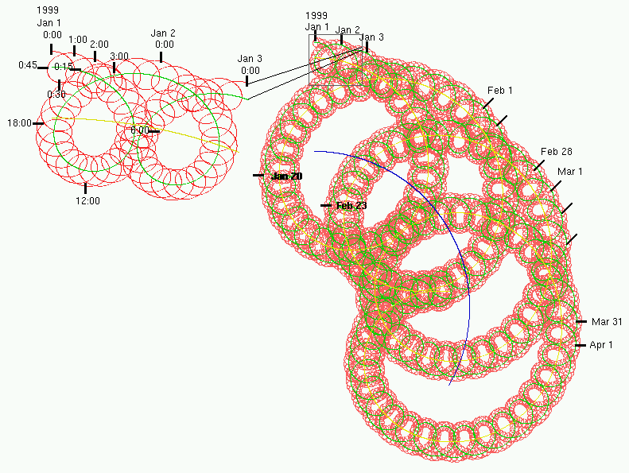
A calendar "rolls" the time axis into a complex convolute according to the calendar periods year (blue), month (yellow), day (green), hour (red), etc. The cycles need not be aligned, for example, the week (not shown) is not aligned to the month.63
Calendar is defined as a set of calendar cycles, and has a name and a code. The head of the Calendar is the largest CalendarCycle appearing right most in the calendar expression. The epoch is the beginning of that calendar, i.e., the point in time where all calendar cycles are zero.
|
|
The calendar definition can be shown as in Table 4958 for the modern Gregorian calendar. The calendar definition table lists a calendar cycle in each row. The calendar units are dependent on each other and defined in the value column. The sequence column shows the relationship through the next property. The other columns are as in the formal calendar cycle definition.64
Definition: A calendar cycle defines one group of decimal digits in the calendar expression. Examples for calendar cycles are year, month, day, hour, minute, second, and week.
|
A calendar cycle has a name and two codes, a one-letter code and a two-letter code. The property ndigits is the number of decimal digits occupied in the calendar expression. The property start specifies where counting starts (i.e., at 0 or 1). The next property is the next lower cycle in the order of the calendar expression. The max(t) property is the maximum number of cycles at time t (max depends on the time t to account for leap years and leap seconds). The property value(t) is the integer number of cycles shown in the calendar expression of time t. The property sum(t, n) is the sum of n calendar cycles added to the time t.
|
Definition: A quantity specifying a point on the axis of natural time. A point in time is most often represented as a calendar expression.
Semantically, however, time is independent from calendars and best described by its relationship to elapsed time (measured as a physical quantity in the dimension of time). A TS plus an elapsed time yields another TS. Inversely, a TS minus another TS yields an elapsed time.
As nobody knows when time began, a TS is conceptualized as the amount of time that has elapsed from some arbitrary zero-point, called an epoch. Because there is no absolute zero-point on the time axis; natural time is a difference-scale quantity, where only differences are defined but no ratios. (For example, no TS is — absolutely speaking — "twice as late" as another TS).
Given some arbitrary zero-point, one can express any point in time as an elapsed time measured from that offset. Such an arbitrary zero-point is called an epoch. This epoch-offset form is used as a semantic representation here, without implying that any system would have to implement TS in that way. Systems that do not need to compute distances between TSs will not need any other representation than a calendar expression literal.
|
Definition: The elapsed time since any constant epoch, measured as a physical quantity in the dimension of time (i.e., comparable to one second).
|
It is not necessary for this specification to define a canonical epoch; the semantics is the same for any epoch, as long as the epoch is constant.
NOTE: offset may be treated as a purely semantic property that is not represented in any way other than the calendar literal expression. However, an ITS may just as well choose to define a constant epoch and represent TS values as elapsed time offsets relative to that epoch. However, an ITS using an epoch-offset representation would still need to communicate the calendar code and the precision of a calendar representation once other calendars are supported.
Two TS values are equal if and only if their offsets (relative to the same epoch) are equal. If both TS value have timezones, the values should be be corrected for timezone before comparison. If neither TS value has a timezone, then they may be compared for equality without correction. If only one TS value has a timezone, then the equality is null (nullFlavor NI).
Two nonNull TS are only equal if they have the same precision.66
|
Definition: A predicate expressing an order relation that is reflexive, asymmetric and transitive, between this TS and another TS.
TS values with the same precision form a totally ordered subset. The outcome of lessOrEqual between two TS is NULL unless they have the same precision.
|
By contrast, a partially ordered set is a set where some, but not all pairs of elements are comparable through the order relation (e.g., a tree structure or the set of physical quantities is a partially ordered set). Two data values x and y of an ordered type are comparable (x.isComparableTo(y)) if the less-or-equal relation holds in either way (x ≤ y or y ≤ x).
A partial order relation generates totally ordered subsets whose union is the entire set (e.g., the set of all length is a totally ordered subset of the set of all physical quantities).
For example, a tree structure is partially ordered, where the root is considered less or equal to a leaf, but there may not be an order among the leafs. Also, physical quantities are partially ordered, since an order exists only among quantities of the same dimension (e.g., between two lengths, but not between a length and a time). A totally ordered subset of a tree is a path that transitively connects a leaf to the root. The physical dimension of time is a totally ordered subset of physical quantities.
|
Definition: A code specifying the calendar used in the literal representation of this TS. The default values is GREG.67
The purpose of this property is mainly to faithfully convey what has been entered or seen by a user in a system originating such a TS value. calendar also advises any system rendering a TS value into a literal form of which calendar to use. However, this is only advice; any system that renders TS values to users may choose to use the calendar and literal form demanded by its users rather than the calendar mentioned in calendar. Hence, calendar is not constant in communication between systems, the calendar is not part of the equality test.
For the purpose of defining the relationship between calendar expression and epoch/offset form, two private data types, CAL and CLCY are defined. These calendar data types exist only for defining this specification. These private data types may not be used at all outside this specification.
Definition: The number of significant digits of the calendar expression representation.
precision is formally defined based on the literal.
precision is only the precision of a decimal digit representation, not the accuracy of the TS value.
The purpose of precision is to faithfully capture the whole information presented to humans in a calendar expression. The number of digits shown conveys information about the uncertainty (i.e., precision and accuracy) of a measured TS. The decimal point between seconds and fractions of a second - if present - does not count towards the significant digits.
NOTE: The precision of the representation is independent from uncertainty (precision accuracy) of a measurement result. If the uncertainty of a measurement result is important, one should specify uncertain values as PPD.
precision is dependent on calendar. A given precision relative to one calendar does not mean the same in another calendar with different periods.
For example "20000403" has 8 significant digits in the representation, but the uncertainty of the value may be in any digit shown or not shown, i.e., the uncertainty may be to the day, to the week, or to the hour. Note that external representations should adjust their representational precision with the uncertainty of the value. However, since the precision in the digit string depends on the calendar and is granular to the calendar periods, uncertainty may not fall into that grid (e.g., 2000040317 is an adequate representation for the value between 2000040305 and 2000040405).
NOTE: A character based ITS MAY NOT represent precision as an explicit attribute if TS values are represented as literal calendar expressions. A TS representation SHALL NOT produce more or less significant digits than were originally in that value. Conformance can be tested through round-trip encoding - decoding - encoding.
Definition: The difference between the local time in that time zone and Universal Coordinated Time (UTC, formerly called Greenwich Mean Time, GMT). The time zone is a PQ in the dimension of time (i.e., comparable to one second). A zero time zone value specifies UTC. The time zone value does not permit conclusions about the geographical longitude or a conventional time zone name.
For example, 200005121800-0500 may be eastern standard time (EST) in Indianapolis, IN, or central daylight savings time (CDT) in Decatur, IL. Furthermore in other countries having other latitude the time zones may be named differently.
|
When timezone is NULL (unknown), "local time" is assumed. However, "local time" is always local to some place, and without knowledge of that place, the time zone is unknown. Hence, a local time cannot be converted into UTC. timezone SHOULD be specified for all TS values in order to avoid a significant loss of precision when TSs are compared. The difference of two local times where the locality is unknown has an error of ±12 hours.
In administrative data context, some time values do not carry a time zone. For a date of birth in administrative data, for example, it would be incorrect to specify timezone, since this may effectively change the date of birth when converted into other time zones. For such administrative data the time zone is NULL (not applicable).
|
The difference between 2 TSs is a PQ in the dimension of time.
Definition: A TS plus an elapsed time (i.e., PQ in the dimension of time) is a TS.
|
Definition: The difference between two TSs is an elapsed time.
|
Definition: The subtraction of a PQ from a TS is a TS.
|
TS literals are simple calendar expressions, as defined by the calendar definition table. By default, the western (Gregorian) calendar shall be used (Table 4958).
For the default Gregorian calendar the calendar expression literals of this specification conform to the constrained ISO 8601 that is defined in ISO 8824 (ASN.1) under clause 32 (generalized time) and to the HL7 Version 2 TS data type.
Calendar expression literals are sequences of integer numbers ordered according to the "counter" column of Table 4958. Periods with lower order numbers stand to the left of periods with higher order numbers. Periods with no assigned order number cannot occur in the calendar expression for TS.
The "digits" column of Table 4958 specifies the exact number of digits for the counter number for any period.
Thus, Table 4958 specifies that western calendar expressions begin with the 4-digit year (beginning counting at zero); followed by the 2-digit month of the year (beginning counting at one); followed by the 2-digit day of the month (beginning with one); followed by the 2-digit hour of the day (beginning with zero); and so forth. For example, "200004010315" is a valid expression for April 1, 2000, 3:15 am.
A calendar expression can be of variable precision, omitting parts from the right.
For example, "20000401" is precise only to the day of the month.
The least defined calendar period (i.e. the second) may be written as a REAL, with the number of integer digits specified, followed by the decimal point and any number of fractional digits.
For example, "20000401031520.34" means April 1, 2000, 3:15 and 20.34 seconds.
When other calendars are used in the future, a prefix "GREG:" can be placed before the western (Gregorian) calendar expression to disambiguate from other calendars. Each calendar shall have its own prefix. However, the western calendar is the default if no prefix is present.
In the modern Gregorian calendar (and all calendars where time of day is based on UTC), the calendar expression may contain a time zone suffix. The time zone suffix begins with a plus (+) or minus (-) followed by digits for the hour and, for non UTC times, minute cycles. UTC is designated as offset "+00" or "-00"; the ISO 8601 and ISO 8824 suffix "Z" for UTC is not permitted.
|
Definition: A generic data type extension used to specify an expression that can be used to derive the actual value of T given information taken from the context of use.
For example EXPR can be used for expressing dosage instructions that depend on patient body weight.
|
The expression specifies how the value of type T can be evaluated. Either an expression or a value or both may be provided. It is at the discretion of the receiver of the information whether to evaluate the expression when the information is being processed. If no value is provided, then the value SHALL have a nullFlavor, whether or not an expression is provided.
Note that as a generic type extension, EXPR does not modify the meaning of equality for the type which it specializes.
Definition: The definition of the expression that can be evaluated to generate the actual value.
The language of the expression SHALL be inferred from the mediatype of the content. If multiple translations are provided in the ED, the evaluator is free to choose whichever language is preferred; all translations SHALL specify the same outcome.
The language of the EXPR defines the forms that the expression property can take, how the information available in the context of the EXPR is made available within the features of the language, and how the language declares the new form of the value. Implementers are not required to implement any languages in order to claim conformance to this specification, but SHOULD declare what languages are supported in their conformance statements.
| Language | Mediatype |
|---|---|
| OCL | text/plain+ocl |
| Factor (see below) | application/hl7-factor+xml |
| MathML | application/mathml+xml |
This is not a list of allowed expression languages, just a convenient summary of some types that may be encountered. If no supported language is found in the expression, then the outcome of the evaluation is NULL.
Definition: The result of evaluating the expression.
The result is also an expression so that the expression used to derive the result can be carried with the result of the evaluation. If the evaluation fails because required information is not available of the language is not supported by the implementation, then the value will have a nullFlavor.
NOTE: In practice, evaluation of the expression may require access to information outside the scope of the data type itself. How this is made available is outside the scope of this specification, and may be specified for specific languages in other HL7 publications.
This is a very simple language to support common dosage formulas that dependent on some patient observations, e.g., body mass or the body surface area. The language supports any formula that uses one or more input data as factors multiplied with some constant coefficient. For example, a standard dose might be 30 mL per kg of body mass, i.e. the constant coefficient is 30 mL/kg and is multiplied with the body mass.
A factor expression simply calculates the value from as specified from one or more derivedFrom observations on the context of the local act of which the expression is an attribute. Here is an example:
|
The value of the input observations that serve as factors is usually not provided but resolved at the time of evaluating the expression; at that time the receiving application will have to source an appropriate observation in order to evaluate the expression. If no appropriate observation can be found, the result of the expression is null.
The mediatype for this language is "application/hl7-factor+xml". This language is only applicable to PQ. The source SHALL be provided in-line, and no translations are allowed. For interest, here is the formal definition:
|
The expression consists of a coefficient with a type of PQ, and a series of factors, which are simple names. Factors are specified as a simple ST.SIMPLE data value, and refer to an ActRelationship.localVariableName of the relationship specifying the input variable. The specific wire format for this is defined in the ITS specifications.
An expression of this type SHALL only be used on an attribute that is part of an Act, and the Act SHALL have one ActRelationship for each named factor in the expression, where the ActRelationship has an Observation as target and a localVariableName attribute equal to the named factor. The target Observation SHALL have a code that specifies the type of observation. The target Observation MAY have a value, but typically NEED NOT carry a value.
The result of the expression is the product of the coefficient and all the factors according to the semantics of all data types involved. Specifically, Units in PQ factors SHALL be carried through correctly and determine the dimension of the final result. If a unit is specified in the PQ itself, then the units of the result SHALL be compared to the units specified. If no conversion to the correct units is possible, the result of the evaluation SHALL be NULL. In other words, specifying the unit will guarantee the dimension of the result.
This language is deliberately limited in scope for ease of implementation. For more sophisticated requirements other languages should be used instead. HL7 plans to develop separate appendix documents describing the use of other expression languages.
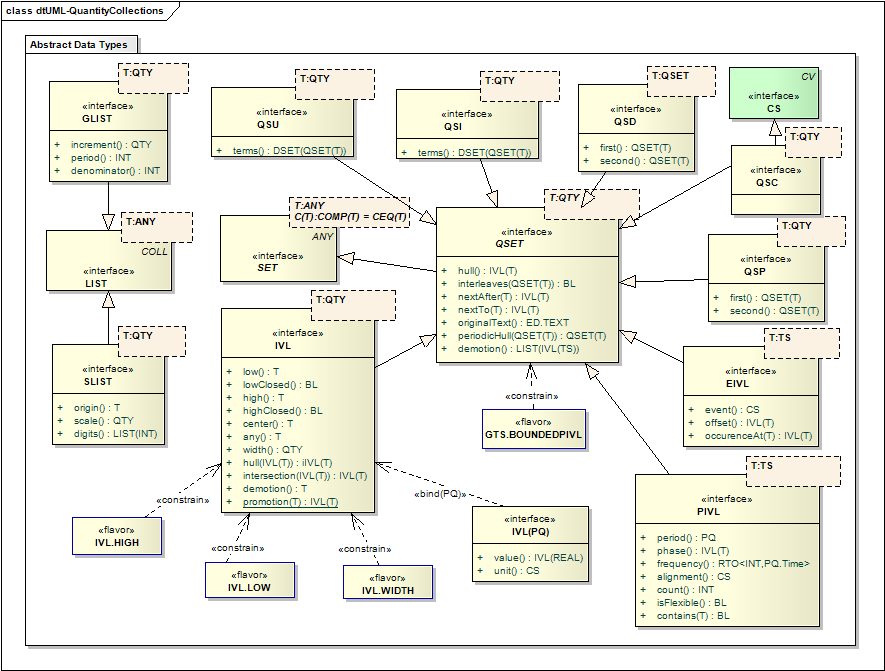
Quantity Collection Data Types
This section defines data types that are collections of quantities and describes their behavior. These collection types are defined as generic (parameterized) types. The concept of generic types is described in Generic Data Types (§ 2.4.5 ).
In many implementation technologies, "collections" are understood as containers of individually enumerated data items. Many of the types defined in this section cannot have their individual items enumerated, and therefore other properties for interacting with complex sets are defined, such as intervalAt. Nevertheless they are still collections, or sets, of items, and their behavior is described in these terms. Note that the foundation types BAG, DSET, and LIST can be enumerated (or "iterated"), and this is also true of the types GLIST and SLIST defined in this section.
Continuous Sets are a core underpinning of important types dealing with timing specifications, which are an important type in health care. The timing specification suite of data types is used to specify the complex timing of events and actions such as those that occur in order management and scheduling systems. These types also support the cyclical validity patterns that may exist for certain kinds of information, such as phone numbers (evening, daytime), office hours, and addresses of so-called "snowbirds" (i.e. people who choose to reside closer to the equator during winter and farther from the equator during summer).
The timing specification data types include point in time (TS) and the interval of time (IVL<TS>) and add types that are specifically suited to repeated schedules. These additional types include PIVL, EIVL, and finally GTS type itself, which is an alias for QSET<TS> All of these types describe the time distribution of repeating states or events.
Definition: A periodic or monotone sequence of values generated from parameters, rather than being enumerated.
GLIST is used to specify regular sampling points for biosignals.
|
The item at a certain index in the list is calculated by performing an integer division on the index (i) with the denominator (d) and then take that value's remainder modulus period (p). Multiply this value with the increment (Δx) and add to the head (x0).
xi=x0 + Δx × (i/d) mod p.
|
The start-value of the generated list.
Definition: The difference between one value and the previous different value.
For example, to generate the sequence (1; 4; 7; 10; 13; ...) the increment is 3; likewise, to generate the sequence (1; 1; 4; 4; 7; 7; 10; 10; 13; 13; ...), the increment is also 3.
|
Definition: If non-NULL, the duration over which the sequence repeats.
I.e., after this many increments, the sequence item values roll over to start from the initial sequence item value. For example, the sequence (1; 2; 3; 1; 2; 3; 1; 2; 3; ...) has period 3; also the sequence (1; 1; 2; 2; 3; 3; 1; 1; 2; 2; 3; 3; ...) has period 3 too.
The period allows the GLIST to repeatedly sample the same value space. The waveform of this periodic generator is always a "saw," just like the x-function of an oscilloscope.68
|
Definition: The integer by which the index for the sequence is divided, giving the number of times the sequence generates the same sequence item value before incrementing to the next sequence item value. For example, to generate the sequence (1; 1; 1; 2; 2; 2; 3; 3; 3; ...) the denominator is 3.
The denominator allows multiple generated sequences to periodically scan a multidimensional space. For example, an (abstract) TV screen might use 2 such generators for the columns and rows of pixels. If there were 200 scan lines and 320 raster columns, the column-generator would have denominator 1, and the line-generator would have denominator 320.
|
Definition: A sequence of sampled values scaled and translated from a list of integer values.
SLIST is used to specify sampled biosignals. The parameter T must be a type ofQTY. A SLIST contains a list of integers. The item at a certain index (i) in the list is calculated by multiplying the item at the same index in the digits sequence (di) with the scale (s) and then add that value to the origin (xo).
xi=xo + s × di
SLIST is usually used for measured values of type PQ. The SLIST is just a list of values; in order to fully understand the data, information concerning the sampling conditions must be provided separately.
|
|
Definition: The origin of the list item value scale, i.e., the physical quantity that a zero-digit would represent in the sequence of values.
Definition: A ratio-scale quantity that is factored out of the digit sequence.
Definition: A sequence of raw digits representing the sample values.
This is typically the raw output of an A/D converter.
Definition: An unordered set of distinct values which are quantities.
Continuous sets are distinguished from discrete sets in that they may contain an infinite number of elements, viz., a period of time containing infinitely many points in time that can be defined to an arbitrary level of precision.
Although QSET provides methods to test for membership of the set, it does not actually contain any properties that specify what the contents of the set are. An instance of a QSET is constructed by combining the QSET builder types in an expression tree using mathematical operation types. The expression tree specifies exactly which values are part of the QSET. The central QSET builder type is IVL which specifies a contiguous range of values. Multiple intervals may be combined into expressions using the QSET specializations for mathematical operations: union (QSU), intersection (QSI), difference (QSD), and periodic hull (QSP). In addition, there are special types for periodically repeating intervals (PIVL), event-related intervals (EIVL), and QSC which allows common timing expressions to be represented as simple codes. Note that GTS is a full alias for QSET<TS>.
Since the semantics of QSET are tightly bound to the definitions of equality in the QTY specializations, it is never appropriate to redefine the meaning of uniqueness in these sets, and all QSETs use the default comparator CEQ. Membership of the set is always based on equality.
Definition: Given a totally ordered set S, the smallest interval that is a superset of S.
Continuous Sets are totally ordered sets because there is an order relationship defined between any two elements in the set,71 and because all elements in the set must be comparable.72
|
As totally ordered sets, Continuous Sets have a convex hull.
|
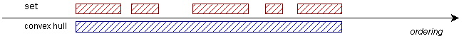
Convex Hull of a Totally Ordered Set
The convex hull of a QSET can less formally be called the "outer bound interval". Thus the convex hull of a QSET describes the absolute beginning and end of a schedule. For some set specifications, where there are infinite repetitions (e.g., a PIVL<TS>) the convex hull has infinite bounds. The term schedule is used throughout this section in its general sense, that of an organized series of values. The more common meaning of the term schedule, that of a time-based plan of events, is exactly a QSET<TS>.
Definition: Given a value t, the greatest continuous subset v (an "occurrence interval") of the QSET value S, where v includes x. If there is no occurrence interval that includes v, intervalAt(x) will be null.
|
Definition: Given a value t, the greatest continuous subset v (an "occurrence interval") of the QSET value S, where v is the interval that contains t or the first interval that has a low value greater than t.
|
Definition: Given a value t, the greatest continuous subset v (an "occurrence interval") of the QSET value S, where v is the first interval that has a low value greater than t.
|
Definition: For two QSET values A and B, A interleaves B if their occurrence intervals alternate consistently with no overlap on the time line. This concept is visualized in the Figure below.
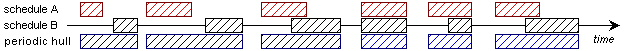
Interleaving occurence intervals and Periodic Hull
For QSET values A and B to interleave, the occurrence intervals of both groups must be capable of being arranged in pairs of corresponding occurrence intervals. It must further hold that for all corresponding occurrence intervals a ⊆ A and b ⊆ B, a starts before b starts (or at the same time) and b ends after a ends (or at the same time).
The interleaves-relation holds when two schedules have the same average frequency, and when the second schedule never "outpaces" the first schedule. That is, no occurrence interval in the second schedule may start before its corresponding occurrence interval in the first schedule.
|
The interleaves-relation is reflexive, asymmetric, and intransitive.73
Definition: For two QSET values A and B where A interleaves B, a periodic hull is defined as the set of convex hulls of the corresponding occurrence intervals of A and B.
With two interleaving QSET values, one can derive a periodic hull such that each occurrence interval of the periodic hull is the convex hull of a pair of corresponding occurrence intervals.
The periodic hull may be used to construct episodic durations by combining QSET<TS> expressions. For example, to construct the periodic interval from Memorial Day to Labor Day every year, one first needs to set up the schedules M for Memorial Day (the last Monday in May) and L for Labor Day (the first Monday in September) and then combine these two schedules using the periodic hull of M and L.
|
The periodic hull operation is non-commutative and non-associative.
Definition: The text representation from which the QSET was encoded, if such a representation is the source of the QSET. Original text can be used in a structured user interface to capture what the user saw as a representation of the code on the data input screen, or in a situation where the user dictates or directly enters text, it is the text entered or uttered by the user.
The originalText is not a substitute for a valid value. If the actual content of the QSET is not valid, then the QSET SHALL be null, irrespective of whether originalText has a value or not.
Note that although post-coding is often performed from free text information, such as documents, scanned images or dictation, multi-media data is explicitly not permitted as original text. Also, the original text property is not meant to be a link into the entire source document. The link between different artifacts of medical information (e.g., document and coded result) is outside the scope of this specification and is maintained elsewhere in the HL7 standards. The original text SHALL be an excerpt of the relevant information in the original sources, rather than a pointer or exact reproduction. Thus the original text SHALL be represented in plain text form. In specific circumstances, as described in other HL7 specifications, the originalText may be a reference to some other text artefact for which the resolution scope is clearly described.
A QSET value can be converted into a LIST<IVL<T>>.
|
Definition: A Term in a QSET expression that builds a QSET from the difference between 2 QSETs.
|
Definition: The set that performs the difference operation.
Definition: The parameter to the difference operation.
Definition: A Term in a QSET expression that builds a QSET from the difference between 2 QSETs.
|
Definition: The set that performs the periodic hull operation.
Definition: The parameter to the periodic hull operation.
Definition: A Term in a QSET expression that builds a QSET from a coded value.
template<QTY T> type CodedContinuousSet<T> alias QSC<T> specializes QSET<T>, CS; |
The code unambiguously describes a QSET<T> such that QSET properties can be supported. QSC SHALL only be used with parameter types for which HL7 has defined domains and their associated codeSystems. At present HL7 has only done this for TS, which is the domain GTSAbbreviation, associated with the codeSystem defined below.
NOTE: This table is not complete, nor does it include religious holidays other than Christian (of the Gregorian [Western] tradition) or national holidays countries other than those of the US. This is a limitation to be remedied by subsequent additions.
NOTE: Holidays are locale-specific. Exactly which religious holidays are subsumed under JH depends on the locale and other tradition. For global interoperability, using constructed QSET expressions is safer than named holidays. However, some holidays that depend on moon phases (e.g., Easter) or ad-hoc decree cannot be easily expressed in a QSET other than by use QSC.
NOTE: Where possible, table Table 56 defines GTS literal values for QSC values that could be used in GTS literals in place of a coded value. Codes are defined for common periods of the day (AM, PM), for periods of the week (business day, weekend), and for holidays. The computation for the dates of some holidays, namely the Easter holiday, involve some sophistication that goes beyond what one would represent in a GTS literal. It is assumed that the dates of these holidays are drawn from some table or some generator module that is outside the scope of this specification.
Definition: A set of consecutive values of an ordered base data type.
Any ordered type can be the basis of an IVL; it does not matter whether the base type is discrete or continuous. If the base data type is only partially ordered, all elements of IVL must be elements of a totally ordered subset of the partially ordered data type.
For example, PQ is considered ordered. However the ordering of PQs is only partial; a total order is only defined among comparable quantities (quantities of the same physical dimension). While IVLs between 2 and 4 meter exist, there is no IVL between 2 meters and 4 seconds.
IVLs are SETs and have all the properties of SETs. However, union and difference of IVLs may not be IVLs, since the elements of these union and difference SETs might not be contiguous. Intersections of IVLs are always IVLs.
An interval specifies a set where all values apply simultaneously (e.g. The encounter lasted from January 6th through January 12th). For situations where only one value within the specified range (e.g. "Take 2-4 tablets"), the TS type should be used. Intervals arise commonly with time, so intervals of TS are the most common type encountered. Uses for intervals of PQ include age > 65, blood pressure < 150 mm Hg, an instruction to keep systolic bp between 80 and 110 mmHg, or the width a stain on an electrophoresis gel.
Definition: The low limit of the interval.
|
The low limit SHALL NOT be positive infinity.
Definition: The high limit of the interval.
|
The high limit SHALL NOT be negative infinity, and SHALL be higher than the low limit if one exists.
Definition: The difference between HIGH and LOW boundary. The purpose of distinguishing width is to handle all cases of incomplete information symmetrically. In any IVL representation only two of the three properties HIGH, LOW, and width need to be stated: the third can be derived.
When both boundaries are known, width can be derived as HIGH minus LOW. When one boundary and width is known, the other boundary is also known. When no boundary is known, width may still be known. For example, one knows that an activity takes about 30 minutes, but one may not yet know when that activity is started.
Note that the data type of width is not always the same as for the boundaries. For ratio scale quantities (REAL, PQ, MO) it is the same. For difference scale quantities (e.g., TS) is the data type of the difference (e.g., PQ in the dimension of time for TS).
|
Definition: The arithmetic mean of the IVL (LOW plus HIGH divided by 2). The purpose of distinguishing center as a semantic property is for conversions of IVLs to and from point values. For discrete elements (INT) the center is the floor of true arithmetic center.
|
Note that center doesn't always exist for every IVL. Notably IVLs that are infinite on one side do not have center. Also IVLs of discrete base types with an even number of elements do not have a center.
|
If the IVL only has one boundary, and the other is the appropriate flavor of infinity, the center is also infinity. If both boundaries are infinity, the IVL has no center.
Definition: Specifies whether LOW is included in the IVL (is closed) or excluded from the IVL (is open).
The default value is true (closed).
|
Definition: Specifies whether HIGH is included in the IVL (is closed) or excluded from the IVL (is open).
The default value is true (closed).
|
Definition: Specifies that nothing is known about the interval except that some particular value lies within the interval.
This should be used when it is not known when something started, or will end, but it is known that it was happening at a given time. This is relatively common for observations (i.e. of disease processes), procedure, and scheduling.
|
If any has value, then nothing else is known about the interval, except that the interval contains any. Althought not much is known about the interval, it is still possible to determine whether the interval overlaps with another.
|
Definition: The convex hull of the set specified by the interval.
|
The interval is automatically the convex hull of set that it specifies, so the convex hull of an interval is itself.
Definition: A convex hull or "interval hull" of two IVLs is the least IVL that is a superset of its operands.
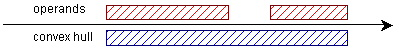
Convex Hull of two Intervals
|
The literal form for IVL is defined such that it is as intuitive to humans as possible. Seven different forms are defined:75
- the interval form using square brackets, e.g., "[3.5; 5.5["; (where the square brackets denote whether the interval is closed or not. Pointing in means closed, pointing out means not closed)
- the dash-form, e.g., "3.5-5.5";
- the "comparator" form, using relational operator symbols, e.g., "<5.5";
- the center-width form, e.g., "4.5[2.0[".
- the width-only form using square brackets, e.g., "[2.0[".
- the center-only form which is simply the value of the center literal, e.g., "4.5".
- the any form which using question marks, e.g., "?4?".
|
An integer can be promoted into a trivial IVL where LOW and HIGH are equal and boundaries closed.
|
Where T is a type that represents a continuous domain, the conversion to an interval is a function of the precision of the value. The value will convert to an interval centered on the value of T, with the lower and upper limits expressing the range that is implied by the precision.
|
A TS is promoted to an IVL<TS> whereby the low boundary is the TS value itself, and the width is inferred from the precision of the TS and the duration of the least significant calendar period specified. The high boundary is open. For example, the TS literal "200009" is converted to an IVL<TS> with low boundary 200009 and width 30 days, which is the interval "[20000901000000.000;20001001000000.000[".
|
An IVL can be demoted to a simple quantity of type T that is representative for the whole IVL. If the interval bounds match the bounds expected for a single value/precision combination, as defined in promotionT then that is the value. If both boundaries are finite, it is the center. If one boundary is infinite, the representative value is the other boundary. If both boundaries are infinite, the conversion to a point value is not applicable. If the contained value (any) is not NULL, then that is the value.
|
The evaluation of equality for IVL is the same as the SET data type: Two nonNull SETs are equal if they have the same elements. For IVLs, there are two special cases. Highs are considered equal if they are both positive infinity, and lows are considered equal if they are both negative infinity.76. Note that if two intervals have the same width and the bounds are not known, they are not considered equal. The same applies where the interval is known by a contained value (any): such intervals are never considered equal.
Definition: A set of consecutive values of physical quantities.
IVL<PQ> has a special literal form which is simply an interval of real numbers, a space, and the unit.
|
For example: "[0;5] mmol/L" or "<20 mg/dL" are valid literal forms of intervals of physical quantities. Note that the generic interval form, e.g., "[50 nm; 2 m]" is also allowed.
Definition: A set of consecutive values of time-stamps.
The generic interval data type defines the interval of points in time too. However, there are some special considerations about literal representations and conversions of intervals of point in time, which are specified in this section.
type Interval<PointInTime> alias IVL<TS> specializes IVL<T>; |
The literal form for interval of point in time is exceptional.
- The "dash form" is not allowed for intervals of point in time
- A "hull form" is defined instead
In order to avoid syntactic conflicts with the timezone and slightly different usage profiles of the ISO 8601 that occur on some ITS platforms, the dash form of the interval is not permitted forIVL<TS>. The interval-form using square brackets is preferred.
Example: May 12, 1987 from 8 to 9:30 PM is k
"[198705122000;198705122130]".
NOTE: The precision of a stated interval boundary is irrelevant for the interval. One might wrongly assume that the interval "[19870901;19870930]" stands for the entire September 1987 until end of the day of September 30. However, this is not so!, The proper way to denote an entire calendar cycle (e.g., hour, day, month, year, etc.) in the interval notation with is to use an open high boundary. For example, all of September 1987 is denoted as "[198709;198710[".77
The "hull-form" of the literal is defined as the convex hull (see IVL.hull) of interval-promotions from two time stamps.
|
For example, "19870901..19870930" is a valid literal
using the hull form. The value is equivalent to the interval form
"[19870901;19871001[".78
The hull-form further allows an abbreviation, where the higher timestamp literal does not need to repeat digits on the left that are the same as for the lower timestamp literal. The two timestamps are right-aligned and the digits to the left copied from the lower to the higher timestamp literal. This is a simple string operation and is not formally defined here.
Example: May 12, 1987 to May, 23, 1987 is
"19870512..23". However, note that May 12, 1987 to June
2, 1987 is "19870512..0602", and not
"20000512..02".
Definition: An interval of time that recurs periodically. PIVL has two properties, phase and period/frequency. phase specifies the "interval prototype" that is repeated every period or frequency.
For example, "every eight hours for two minutes" is a PIVL where the interval's IVL.WIDTH equals 2 minutes and the period at which the interval recurs equals 8 hours.
phase also marks the anchor point in time for the entire series of periodically recurring intervals. If count is null, the recurrence of a PIVL has no beginning or ending, but is infinite in both future and past.
A PIVL is fully specified when both period/frequency and phase are fully specified. The interval MAY be only partially specified where either only IVL.WIDTH or only one boundary is specified. If count is null, then there is no limit to the number of repetitions.
For example: "every eight hours for two minutes" specifies only period and IVL.WIDTH of phase but no boundary of the phase. Conversely, "every eight hours starting at 4 o'clock" specifies only period and IVL.LOW of phase but not IVL.HIGH of phase. "Every eight hours for two minutes starting at 4 o'clock" is fully specified since period, and both IVL.LOW and IVL.WIDTH of phase are specified.
PIVL is a generic type whose type parameter T is restricted to a TS and its extensions. PPD<TS>> is an extension of TS and therefore can be used to form PIVL<PPD<TS>> values. This approach can model schedules of varying specificity.
Often times, repeating schedules are only approximately specified. For instance "three times a day for ten minutes each" does not usually mean a period of precisely 8 hours and does often not mean exactly 10 minutes intervals. Rather the distance between each occurrence may vary as much as between 3 and 12 hours and the IVL.WIDTH of the interval may be less than 5 minutes or more than 15 minutes. PIVL<PPD<TS>> can be used to indicate how much leeway is allowed or how critical timing is to the specification.
Sometimes the periodic interval may occur a set number of times. For instance, the the schedule might be "2 minutes every 10 minutes 5 times". This can be represented with a phase of width 2 min, a period of 10 min, and a count of 5. Note that a more common use case is that the period only occurs for a limited time period, such as "once a day between June 3 and Jun 10. Though this may be represented using the count property, the proper way to implement this is to define the timing specification as an intersection between a PIVL and an IVL. The data type flavor represents this common pattern.
Definition: A interval specifying the duration of each occurrence and anchoring the PIVL sequence at a certain point in time.
phase is the prototype interval for the PIVL, and it also marks the anchor point in time for the entire series of periodically recurring intervals. If count is null, the recurrence of a PIVL has no begin or end but is infinite in both future and past. IVL.WIDTH of phase SHALL be less than or equal to period.
|
Definition: A time duration specified as a reciprocal measure of the frequency at which the PIVL repeats.
period is a PQ in the dimension of time (T.diff). For an uncertain PIVLperiod is a probability distribution over elapsed time.
|
Definition: The number of times the PIVL repeats (numerator) within a specified time-period (denominator).
The denominator is a PQ in the dimension of time (TS.diffType). For an uncertain periodic interval the numerator is a probability distribution.
|
NOTE: It would generally be appropriate for only one of period and frequency to represented in an ITS. Although one can be calculated from the other, the ITS SHOULD arrange for only the preferred form to be represented.
Definition: The number of times the period repeats in total. If count is null, then the period repeats indefinitely both before and after the anchor implicit in the phase.
It is often not necessary to use the count. Limits to the period over which the PIVL repeats can be applied by combining the PIVL with other QSETs, for example intersecting it with an IVL<TS> to determine the start and end times.
Definition: If true, indicates that frequency takes priority over period for display purposes
While mathematically frequency and period are interchangeable, reliable human communication requires differentiation. For example "4 times per day" and "Every 6 hours" are mathematically equivalent. However, good clinical practice requires distinguishing which form was originally expressed as this conveys something of the intent.
Definition: Specifies if and how the repetitions are aligned to the cycles of the underlying calendar (e.g., to distinguish every 30 days from "the 5th of every month"). A non-aligned PIVL recurs independently from the calendar. An aligned PIVL is synchronized with the calendar.
For example, "every 5th of the month" is a calendar aligned PIVL. period varies from 28 to 31 days depending on the calendar month. Conversely, "every 30 days" is an independent period that will fall on a different date each month.
The calendar alignment specifies a calendar cycle to which the PIVL is aligned. The even flow of time will then be partitioned by the calendar cycle. The partitioning is called the calendar "grid" generated by the aligned-to calendar cycle. The boundaries of each occurrence interval will then have equal distance from the earliest point in each partition. In other words, the distance from the next lower grid-line to the beginning of the interval is constant.
For example, with "every 5th of the month" the alignment
calendar cycle would be month of the year (MY). The even
flow of time is partitioned in months of the year. The distance
between the beginning of each month and the beginning of its
occurrence interval is 4 days (4 days because day of month (DM) starts
counting with 1). Thus, as months differ in their number of days, the
distances between the recurring intervals will vary slightly, so that
the interval occurs always on the 5th.
Definition: Indicates whether the exact timing is up to the party executing the schedule (e.g., to distinguish "every 8 hours" from "3 times a day".).
For example, with a schedule "three times a day" the average time between repetitions is 8 hours, however, with isFlexible indicator equal to true, the timing could follow some rule made by the executing person or organization that e.g., three times a day schedules are executed at 7 am, noon, and 7 pm.
Generic Literal Form. The generic literal form for periodic intervals of time is as follows:
(phase : IVL<T>( / (period : QTY ( [ @ (alignment( ] [ IST ].
|
For example, "[200004181100;200004181110]/(7 d)@DW"
specifies every Tuesday from 11:00 to 11:10 AM. Conversely,
"[200004181100;200004181110]/(1 mo)@DM" specifies every
18th of the month 11:00 to 11:10 AM.
Calendar Pattern Form. This form is used to specify calendar-aligned timing more intuitively using "calendar patterns." The calendar pattern syntax is (semi-formally) defined as follows:
(anchor( [ (calendar digits( [ .. (calendar digits( ]] / (number : INT( [ IST ]
A calendar pattern is a calendar date where the higher significant digits (e.g., year and month) are omitted. In order to interpret the digits, a period identifier is prefixed that identifies the calendar period of the left-most digits. This calendar period identifier anchors the calendar digits following to the right.
See Table 4958 for calendar-period codes defined for the Gregorian calendar. There are 1-character and 2-character symbols. The 2-character symbols are preferred for the alignment. The 1-character symbols are preferred for the calendar pattern anchor.
For example: "M0219" is February 19 the entire day every
year. This periodic interval has the February 19 of any year as its
phase (e.g., "[19690219;19690220[" ), a period of one
year, and alignment month of the year (M). The alignment
calendar-cycle is the same as the anchor (e.g., in this example, month
of the year).
The calendar digits may also omit digits on the right. When digits are
omitted on the right, this means the interval from lowest to highest
for these digits. For example, "M0219" is February 19 the
entire day; "M021918" is February 19, the entire hour
between 6 and 7 PM.
In absence of a formal definition for this, the rules for parsing a
calendar pattern are as follows (example is "M021918..21"):
-
read the anchoring period identifier (e.g. "
M") - alignment is equal to this calendar period (e.g. month of the year)
-
use the current point in time and format a literal exact to the next
higher significant calendar period from the anchoring calendar period
(e.g. year, "
2000", constructing "2000021918"); this is the "stem literal" -
read this constructed literal (e.g., "
2000021918") into a TS value and convert that value to an interval according to IVL_TS.promotionTS (e.g., "[2000021918;2000021919[") this is the "low interval." - if the hull-operator token ".." follows, read the following calendar digits (e.g., "21")
-
right-align the stem literal and the calendar digits just read
"2000021918" " 21" -
and copy all digits from the stem literal that are missing to the left
of the calendar digits just read (e.g., yields "
2000021921"). -
read this constructed literal (e.g., "
2000021918") into a TS value and convert that value to an IVL<TS> according to IVL_TS.promotionTS (e.g., "[2000021921;2000021922[") this is the "high interval." - phase is the convex hull of the low interval and the high
interval (e.g., "
[2000021918;2000021922["). - if the hull-operator was not present, phase is simply the low interval.
Interleave. A calendar pattern followed by a slash and an integer number n indicates that the given calendar pattern is to apply every nth time.
For example: "D19/2" is the 19th of every second month.
A calendar pattern expression is evaluated at the time the pattern is first encountered. At this time, the calendar digits missing from the left are completed using the earliest date matching the pattern (and following a preceding pattern in a combination of time sets).
For example: "D19/2" is the 19th of every second
month. If this expression is evaluated on March 14, 2000
phase is
completed to: "[20000319;20000320[/(2 mo)@DM" and thus
the two-months cycle begins with March 19, followed by May 19, etc. If
the expression were evaluated by March 20, the cycle would begin at
April 19, followed by June 19, etc.
If no calendar digits follow after the calendar period identifier, the pattern matches any date. The integer number following the slash indicates the length of the cycle. phase in these cases has only the width specified to be the duration of the anchoring calendar-cycle (e.g., in this example 1 day).
For example: "CD/2" is every other day,
"H/8" is every 8th hour, for the duration of one hour.
Institution Specified Time. Both a PIVL literal and a calendar pattern may be followed by the three letters "IST" to indicate that within the larger calendar cycle (e.g., for "hour of the day" the larger calendar cycle is "day") the repeating events are to be appointed at institution specified times. This is used to specify such schedules as "three times a day" where the periods between two subsequent events may vary well between 4 hours (between breakfast and lunch) and 10 hours (over night).
The essential property of a set is that it contains elements. For non-aligned PIVLs, the contains-property is defined as follows. A TS t is contained in the PIVL if and only if there is an integer i for which t plus period times i is an element of phase.
|
For calendar-aligned PIVLs the contains property is defined using the calendar-cycle's sum(t, n) property that adds n such calendar cycles to the time t.
|
Definition: Specifies a periodic interval of time where the recurrence is based on activities of daily living or other important events that are time-related but not fully determined by time.
For example, "one hour after breakfast" specifies the beginning of the interval at one hour after breakfast is finished. Breakfast is assumed to occur before lunch but is not determined to occur at any specific time.
|
Definition: A code for a common (periodical) activity of daily living based on which the event related periodic interval is specified.
|
A proper EIVL requires the event to be specified.
In order for an event to qualify for being adopted in the domain of this attribute, all of the following must be true:
- the event commonly occurs on a regular basis
- the event is being used for timing activities, and
- the event is not entirely determined by time
Events that are not listed in this table, and that do not meet the criteria listed above are not suitable for use with the EIVL data type. On such example is sequenced acitivities as part of a clinical trial. More sophisticated RIM derived pattern should be used for such event associations. 80
Definition: An interval of elapsed time (duration, not absolute point in time) that marks the offsets for the beginning, width and end of the EIVL measured from the time each such event actually occurred.
For example: if the specification is "one hour before breakfast for 10 minutes", the event is CM, IVL.LOW of offset is -1 h and the IVL.WIDTH of offset is 10 min(consequently the offset's high boundary is -50 min).
The offset SHALL be null if the event code specifies "before", "after" or "between meals". The offset SHALL be nonNull if the EIVL is nonNull and the event code is C, CM, CD, or CV. The offset may or may not be null for the event codes HS and WAKE.
The literal form for an EIVL begins with the event code followed by an optional interval of the time-difference.
|
For example, one hour after meal would be
"PC+[1h;1h]". One hour before bedtime for 10 minutes:
"HS-[50min;40min]".
An EIVL is a set of time, that is, one can test whether a particular time or time interval is an element of the set. Whether an EIVL contains a given interval of time is decided using a relation event ? time referred to as EVENT(event, time). The property prop-EIVL.intervalAt(t) is the occurrence interval that would exist if the event occurred at time t.
|
Thus, an EIVL contains a TS t if there is an event time e with an occurrence interval v such that v contains t.
|
Definition: A set of intervals constructed to describe specific and potentially complex schedules.
QSET<TS> is used to specify the timing of schedules, events, actions and the cyclical validity-patterns that may exist for certain kinds of information, such as phone numbers (evening, daytime), addresses (so called "snowbirds," residing closer to the equator during winter and farther from the equator during summer) and office hours.
|
QSET<TS> has the following aspects:
- QSET<TS> as a general QSET<TS>. From this aspect QSET<TS> answers whether any given TS falls in the schedule described by the QSET<TS> value.
- QSET<TS> as the combination of multiple PIVLs. This aspect describes how both simple and complex repeat-patterns are specified with QSET<TS>.
- QSET<TS> as a generator of a LIST<IVL<TS>>. From this aspect, QSET<TS> can generate all occurrence intervals of an event or action, or all validity periods for a fact.
- QSET<TS> as an expression-syntax defined for a calendar. This aspect is the QSET<TS> literal form, defined below.
In all cases, QSET<TS> as a SET<TS> is built from one of the building blocks of QSET<TS>: QSU<TS>, QSI<TS>, QSD<TS>, QSC<TS>, IVL<TS>, PIVL<TS> and EIVL<TS>. Ultimately the building blocks from which all QSET<TS> values are constructed are IVL<TS>, QSC<TS>, PIVL, and EIVL. Since TS can be promoted to IVL<TS>, it is also possible to use TS directly when building a QSET<TS>.
This example specifies every other Tuesday in the season from the (US holidays) Memorial Day to Labor Day in the years 2002 and 2003. This set of times is built as an expression of the intersection between 3 sets:
-
Every other tuesday
-
The years 2002 and 2003
-
The season between Memorial Day and Labor Day
<example xsi:type="QSI_TS"> <!-- intersection, because it is a QSI --> <!-- every other Tuesday --> <term xsi:type='PIVL_TS' alignment='DW'> <phase lowClosed='true' highClosed='false'> <low value='20001202'/> <high value='20001203'/> </phase> <period value='2' unit='wk'/> </term> <!-- 2002 and 2003 --> <term xsi:type='IVL_TS' lowClosed='true' highClosed='false'> <low value='20020101'/> <high value='20040101'/> </term> <!-- season between Memorial Day and Labor Day --> <!-- periodic hull between Memorial day and Labor Day --> <term xsi:type='QSP_TS'> <first type="QSI_TS"> <!-- memorial day: intersection of mondays and last week of May --> <term xsi:type='PIVL_TS'> <phase highClosed='false'> <low value='19870525'/> <high value='19870601'/> </phase> <period value='1' unit='a'/> </term> <term xsi:type='PIVL_TS'> <phase highClosed='false'> <low value='19870105'/> <high value='19870106'/> </phase> <period value='1' unit='wk'/> </term> </first> <second type="QSI_TS"> <!-- labor day : intersection of mondays and first week of Sept --> <term xsi:type='PIVL_TS'> <phase highClosed='false'> <low value='19870901'/> <high value='19870908'/> </phase> <period value='1' unit='a'/> </term> <term xsi:type='PIVL_TS'> <phase highClosed='false'> <low value='19870105'/> <high value='19870106'/> </phase> <period value='1' unit='wk'/> </term> </second> </term> </example> |
The QSET<TS> literal is a direct representation of the QSET<TS> expression tree used to build a QSET<TS>.82
Unions are specified by a semicolon-separated list. Intersections are specified by a whitespace separated list. Intersection has higher priority than union. Set difference can be specified using a backslash; differences have an intermediate priority, i.e. weaker than intersection but stronger than union. Periodic Hulls are indicated by separating two sets with "..". The hull operator has the same priority as set difference. Parentheses can be used to overcome operator precedence when necessary.83
|
The following table contains paradigmatic examples for complex QSET<TS> literals. For simpler examples refer to the literal forms of IVL, PIVL, and EIVL.
Definition: An alias for QSET<TS>.
GTS is an alias for QSET<TS>, and the terms may be freely used interchangeably to refer to the type semantically.
NOTE: Implementation Technology Specifications MAY not support aliasing the type if this is not easily supported in the typing system. In such cases, the specification MAY only define types for QSET<TS>, and not support GTS as an alias.
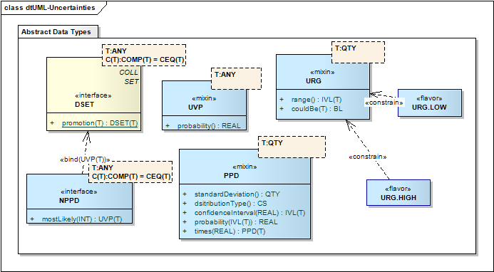
Uncertainty Data Types
Definition: A generic data type extension used to specify a quantified probability expressing the information producer's belief that the given value is correct.
How the probability number is determined is outside the scope of this specification.
Probabilities are subjective and (as any data value) must be interpreted in their individual context; for example, when new information is found, the probability might change. Thus, for any message, document, or other information representation, the information — and particularly the probabilities — reflect what the information producer believed was appropriate for the purpose and at the time the message or document was created.
For example, at the beginning of the 2000 baseball season (May), the Las Vegas odds makers may have given the New York Yankees a probability of 1 in 10 (0.100) of winning the World Series. At the time of this writing, the Yankees and Mets have won their respective pennants, but the World Series has yet to begin. The probability of the Yankees winning the World Series is obviously significantly greater at this point in time, perhaps 6 in 10 (0.600). The context, and in particular the time of year, make a significant difference.
Since probabilities are subjective measures of belief, they can be stated without being "correct" or "incorrect" per se, let alone "precise" or "imprecise." Notably, one does not have to conduct experiments to measure a frequency of some outcome in order to specify a probability. In fact, whenever statements about individual people or events are made, it is not possible to confirm such probabilities with "frequentist" experiments.
Returning to our example, the Las Vegas odds makers can not insist on the Yankees and Mets playing 1000 trial games prior to the Series; and even if they could, they would not have the fervor of the real Series and therefore not be accurate. Instead, the odds makers must derive the probability from history and judgment.
|
The type T is not formally constrained. In theory, discrete probabilities can only be stated for discrete data values. Thus, generally UVP SHOULD NOT be used with REAL, PQ, or MO values.
Definition: The probability assigned to the value, a decimal number between 0 (impossible) and 1 (certain), inclusive.
|
There is no "default probability" that one can assume when the probability is unstated. Therefore, it is impossible to make any semantic difference between an UVP without probability and a simple T. UVP does not mean "uncertain", and a simple T does not mean "certain". In fact, the probability of the UVP could be 0.999 or 1, which is quite certain, where a simple T value could be a very vague guess.
Definition: A set of UVP with explicit probabilities.
An NPPD is a histogram). All the elements in the set are considered alternatives, and each is assigned a number expressing either the probability that its value is correct or the frequency with which it occurs in a sample.
The purpose of NPPD is chiefly to support statistical data reporting as it occurs in measurements taken from many subjects and consolidated in a histogram. This occurs in epidemiology, veterinary medicine and laboratory medicine, but also in cost controlling and business process engineering.
Semantically, the information of a stated value exists in contrast to the complement set of unstated possible values. Thus, semantically, an NPPD contains all possible values and assigns probabilities to each of them.
The easiest way to visualize this is a bar chart as shown in this figure:
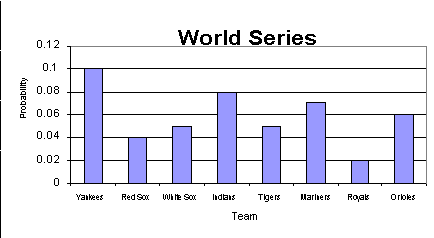
Example of a Histogram
This example illustrates the probability of selected major league baseball teams winning the World Series (prior to the season start). Each team is mutually exclusive, and were we to include all of the teams, the sum of the probabilities would equal 1 (i.e., it is certain that one of the teams will win).
NOTE: Even though semantically NPPD assigns probabilities to all possible values, not all values need to be represented explicitly. Those possible values that are not mentioned will have the remaining probability distributed equally over all unmentioned values. For example, if the value set is {A; B; C; D} but the NPPD value states just {(B; 0.5); (C; 0.25)} then the remaining probability is 1 - 0.75 = 0.25, which is distributed evenly over the complement set: {(A; 0.125); (D; 0.125)}. Semantically, the NPPD is the union of the stated probability distribution and the unstated complement with the remaining probability distributed evenly. NPPD SHALL be used where only one value for T may be true. The sum of the probabilities assigned to the mentioned values should be <= 1, but due to estimating and rounding inaccuracies, the total MAY actually exceed 1.
|
Just as with UVP, the type T is not formally constrained, even though there are reasonable and unreasonable uses. Typically one would use NPPD for unordered types, if only a "small" set of possible values is assigned explicit probabilities, or if the probability distribution cannot (or should not) be approximated with parametric methods. For other cases, one may prefer PPD.
Definition: The value identified as the most likely in the NPPD. If
|
Note that a non-null NPPD must have at least one member.
Definition: Indicates that the value comes from a range of possible values of an ordered base data type.
URG is used where the actual value is unknown, but it is known that the value comes from a known range of possible values (e.g. "Take 2-4 tablets"). For situations where all values apply simultaneously (e.g. The encounter lasted from January 6th through January 12th) the type should be used.
URG differs from PPD in that PPD is used to report a particular value along with an associated distribution of uncertainty for the value, or to report the summary distribution of a set of data, whereas URG indicates that there is a single value that, although unknown, must come from a particular range of values. No inference regarding distribution of values can be taken. URG is often associated with an instruction to perform a particular operation at some point within a given time interval.
|
Any ordered type can be the basis of an URG; it does not matter whether the base type is discrete or continuous. If the base data type is only partially ordered, all possible values for the URG SHALL be elements of a totally ordered subset of the partially ordered data type.
For example, PQ is considered ordered. However the ordering of PQs is only partial; a total order is only defined among comparable quantities (quantities of the same physical dimension). While URGs between 2 and 4 meter exists, there is no URG between 2 meters and 4 seconds.
Definition: The range of possible values.
|
When a range is specified, it SHALL be anchored to known values, not just a width, and the property IVL.any SHALL be null.
Definition: Whether a given value can be in the specified range.
Although the actual value is unknown, it is possible to determine whether a URG could be a particular value. A particular value is possible if it is contained within the specified range.
|
Data type flavors are named constraints on the existing data types. The flavors SHALL NOT introduce any new semantics to the data type, but constrain an existing data type for a particular purpose. Flavors SHALL NOT add new properties, or set default values for properties; the value of properties can be fixed, but not defaulted.
Flavors MAY be used as types in other models within the realm scope of the definition of the flavors. For instance in the RIM, and in RIM-derived models, attributes may be assigned a type that is a flavor. However flavors are not true types; when used in this fashion, they designate that the type of the attribute is the type from which the flavor is derived, with the constraints indicated in the flavor definition applied. For an instance of the data value assigned to the attribute, the type property is always that of the underlying type. It follows that a value may be constrained by multiple flavors at once, where each flavor makes different rules about how the type is used; this is not an assertion that the value conforms to multiple different types of behaviors.
Flavors MAY constrain other flavors. When a flavor constrains another flavor, the flavor adds new constraints to those already specified in the other flavor.
Flavors are limited in this fashion so that a single implementation based on this specification will always be able to process all instances, but local implementations may describe a number of different constraint patterns on the data types defined in this specification.
The flavors defined in here are universal scope, and MAY be used in any HL7 models, including the RIM.
Representational Properties (§ B ) documents the property flavorId. When this representational property is used in association with one of the flavors documented here, it MAY contain the value of the flavor name.
Definition: BN constrains the BL so that it is not null. This is defined for use within the data types specification where it is not appropriate for a null value to be used.
flavor BooleanNonNull alias BN constrains BL; |
Values conforming to the BN flavor SHALL NOT have null values.
|
Definition: ED.TEXT constrains ED so that it only contains plain text.
This is useful because there is sometimes a need to allow for references, but the content must be a simple string. In addition, no translations are allowed.
flavor TextWithReference alias ED.TEXT constrains ED; |
The mediaType of the ED content SHALL be plain text, like the type ST but a reference is allowed.
|
The mediaType of the ED content SHALL be plain text, like the type ST but a reference is allowed.
Definition: ED.SIGNATURE constrains ED so that the contents are an XML digital Signature according the W3C Signature specifications.
flavor DigitalSignature alias ED.SIGNATURE constrains ED; |
Reference, integrityCheck, thumbnail, compression, and language SHALL be null. ED.mediaType SHALL be "text/xml". Translations SHALL be not applicable. The content SHALL conform to the w3c XML digital signature specification ([http://www.w3.org/Signature/]).
|
Definition: ED.IMAGE constrains ED so that the contents are an image.
flavor Image alias ED.IMAGE constrains ED; |
The mediaType SHALL start with "image/".
|
Definition: ED.STRUCTURED_TEXT constrains ED so that the contents are structured text.
flavor StructuredText alias ED.STRUCTURED_TEXT constrains ED; |
The mediaType SHALL be "text/x-hl7-text+xml". The contents of the ED SHALL be a valid structured text as described by CDA and SPL. No translations are allowed.
|
Definition: ED.STRUCTURED_TITLE constrains ED so that the contents are a structured title.
flavor StructuredTitle alias ED.STRUCTURED_TITLE constrains ED; |
The mediaType SHALL be "text/x-hl7-title+xml". The contents of the ED SHALL be a valid title as described by CDA and SPL. No translations are allowed.
|
Definition: ST.NT constrains ST so that it there are no translations.
flavor StringNoTranslations alias ST.NT constrains ST; |
Translations SHALL be empty.
|
Definition: ST.SIMPLE constrains ST.NT so that it does not specify a language.
flavor StringSimple alias ST.SIMPLE constrains ST.NT; |
language SHALL be not applicable.
|
The concept of language does not apply to these strings - they are always to be understood as a sequence of characters that identify a concept in some language independent fashion.
NOTE: This type corresponds to a simple string in most implementation technologies (i.e. xs:string in W3C Schema).
Definition: SC.NT constrains SC so that it has no translations.
flavor CodedStringNoTranslations alias SC.NT constrains SC; |
Translations SHALL be empty.
|
Definition: CV constrains CD so that there is no translations, and only a single concept is allowed.
CV is used when any reasonable use case will require only a single code value. Thus, it should not be used in circumstances where multiple alternative codes for a given value are desired. Note that this prevents graceful migration from one code system to another, so CV is not usually used outside the data types specification.
flavor CodedValue alias CV constrains CD; |
There SHALL be no translations, and there SHALL be no source.
|
Definition: TEL.URL constrains TEL so that it points to a locatable resource that returns binary content.
flavor LocatableResource alias TEL.URL constrains TEL; |
The URL scheme SHALL be "file", "ftp", "cid", "http", "https" or "nfs". Use "cid" is for soap attachments.
|
Definition: TEL.PHONE constrains TEL.PERSON so it refers to some telephone based communication system with a person or organisation.
flavor TelephoneAddress alias TEL.PHONE constrains TEL.PERSON; |
The URL scheme SHALL be "tel".
|
Definition: TEL.EMAIL constrains the TEL.PERSON type so that it is an SMTP email address.
flavor EmailAddress alias TEL.EMAIL constrains TEL.PERSON; |
The URL scheme SHALL be "mailto:".
|
Definition: PN constrains EN for use when the named Entity is a Person.
It constrains ENXP used in the parts so that only those entity name parts qualifiers applicable to person names are allowed. Since the structure of entity name is mostly determined by the requirements of person name, the restriction is very minor.
flavor PersonName alias PN constrains EN; |
The qualifier on any part SHALL NOT include the code "LS".
|
Definition: ON constrains EN for use when the named Entity is an Organization.
It constrains ENXP used in the parts so that only those entity name part types and qualifiers applicable to organization names are allowed. Organization names, such as "Health Level Seven, Inc." mostly consist only of untyped name parts, prefixes, suffixes, and delimiters.
flavor OrganizationName alias ON constrains EN; |
The family and given name part types SHALL not be used in the name of an organisation.
|
The following qualifiers SHALL not be used in the parts of the name of an organisation: BR, AD, SP, MID, AC, PR, NB, HON. The following codes SHALL not be used in the organisation name use: I, P, R, DN, M.
The following is the organization name, "Health Level Seven, Inc." in a simple string form:
<name>Health Level Seven, Inc.</name> |
And with the legal status "Inc." as a distinguished name part:
<name>Health Level Seven, <suffix qualifier="LS">Inc.</suffix></name> |
Definition: TN constrains EN so that it is effectively a simple string, suitable for use as a simple name for things and places.
TN with its single name part is therefore equivalent to a simple character string.
flavor TrivialName alias TN constrains EN; |
There SHALL only be one part type, its type SHALL be unknown, and it SHALL have no qualifiers. As a consequence of this, the formatted rendition of then name is exactly equal to the one part of the name itself.
|
Trivial names are typically used for places and things, such as Lake Erie or Washington-Reagan National Airport:
<name>Lake Erie</name> <name>Washington-Reagan National Airport</name> |
Definition: INT.NONNEG constrains INT so that it has a value of 0 or greater.
flavor IntegerNonNegative alias INT.NONNEG constrains INT; |
The value of the INT SHALL be equal or greater than 0 if it is not null.
|
Definition: INT.POS constrains INT.NONNEG so that it has a value greater than 0.
flavor IntegerPositive alias INT.POS constrains INT.NONNEG; |
The value of the INT SHALL be greater than 0 if it is not null.
|
Definition: PQ.TIME constraints PQ so that it has units that describe a period of time.
flavor LengthOfTime alias PQ.TIME constrains PQ; |
The units SHALL be some UCUM code that refers to a measurement of time. Translations are not allowed.
|
Definition: TS.DATE constrains TS so that it only contains a date value.
flavor Date alias TS.DATE constrains TS; |
If the value is not null, there SHALL be 8 or fewer digits, and there can be no timezone. This flavor is specific to the gregorian calendar.
|
The string literal representation of this form is YYYY[MM[DD]].
Definition: TS.DATE.FULL constrains TS.DATE so that it contains a reference to a particular day.
flavor FullDate alias TS.DATE.FULL constrains TS.DATE; |
If the value is not null, there SHALL be 8 digits in the literal form, with no timezone. This flavor is specific to the gregorian calendar.
|
The string literal representation of this form is YYYYMMDD.
Definition: TS.DATETIME constrains a TS so that it is not more precise than seconds.
flavor DateTime alias TS.DATETIME constrains TS; |
If the value is not null, there SHALL be 14 or less digits, and there can be a timezone. This flavor is specific to the gregorian calendar.
|
The string literal representation of this form is YYYY[MM[DD[hh[mm[ss]]]]][+/-ZZZZ].
Definition: TS.DATETIME.FULL constrains TS.DATETIME so that it contains a reference to a particular second with a timezone.
flavor FullDateTime alias TS.DATETIME.FULL constrains TS.DATETIME; |
If the value is not null, there SHALL be 14 digits in the literal form. There SHALL be a timezone. This flavor is specific to the gregorian calendar.
|
The string literal representation of this form is YYYYMMDDhhmmss+/-ZZZZ.
Definition: TS.INSTANT constrains TS.DATETIME so that it contains a reference to a particular millisecond with a timezone.
flavor InstantInTime alias TS.INSTANT constrains TS.DATETIME; |
If the value is not null, there SHALL be 17 digits in the literal form. There SHALL be a timezone. This flavor is specific to the gregorian calendar.
|
The string literal representation of this form is YYYYMMDDhhmmss.zzz+/-ZZZZ.
Definition: IVL.LOW constrains IVL so that low is provided and lowClosed is true. All other properties are prohibited.
flavor IntervalLow alias IVL.LOW constrains IVL<T>; |
If the value is not null, low SHALL be provided and lowClosed SHALL be true. high and highClosed are prohibited.
|
Definition: IVL.HIGH constrains IVL so that high is provided and highClosed is true. All other properties are prohibited.
flavor IntervalHigh alias IVL.HIGH constrains IVL<T>; |
If the value is not null, high SHALL be provided and highClosed SHALL be true. low and lowClosed SHALL be null.
|
Definition: IVL.WIDTH constrains IVL so that width is mandatory and low, lowClosed, high and highClosed are prohibited.
flavor IntervalWidth alias IVL.WIDTH constrains IVL<T>; |
if the value is not null, Width SHALL be provided. low, lowClosed, high and highClosed SHALL be null.
|
Definition: URG.LOW constrains URG so that low and lowClosed are required. high and highClosed are prohibited.
flavor UncertainRangeLow alias URG.LOW constrains URG<T>; |
If the value is not null, range.low SHALL be provided and range.lowClosed SHALL be true. range.high and range.highClosed SHALL be null.
|
Definition: URG.HIGH constrains URG so that high and highClosed are required. low and lowClosed are prohibited.
flavor UncertainRangeHigh alias URG.HIGH constrains URG<T>; |
If the value is not null, high SHALL be provided and highClosed SHALL be true. low and lowClosed SHALL be null.
|
Definition: GTS.BOUNDEDPIVL constrains QSI<TS> (GTS) so that it only allows an intersection of IVL<TS> and PIVL<TS>.
This allows a system to capture a frequency together with an outer time boundary and is useful for things like dosage instructions.
flavor BoundedPeriodicInterval alias GTS.BOUNDEDPIVL constrains QSI<TS>; |
The Bounded PIVL SHALL contain 2 terms. One of the terms SHALL be an IVL<TS> and one SHALL be a PIVL<TS>.
|
Definition: A generic data type extension specifying uncertainty of quantitative data using a distribution function and its parameters.
Aside from the specific parameters of the distribution, a mean (expected value) and standard deviation is always given to help maintain a minimum layer of interoperability if receiving applications cannot process a given probability distribution.
|
For example, the most common college entrance exam in the United States is the SAT, which includes three parts: reading, math and writing. Each part has a minimum score of 400 (no questions answered correctly) and a perfect score of 800. In 1998, according to the College Board, 1,172,779 college-bound seniors took the test. The mean score for the math portion of the test was 512, and the standard deviation 112. These parameter values (512, 112), tagged as the normal distribution parameters, paint a pretty good picture of test score distribution. In most cases, there is no need to specify all 1-million+ points of data when just 2 parameters will do!

Example for a parametric probability distribution
Note that the normal distribution is only one of several distributions defined for HL7.
|
PPD SHALL only be applied to value domains that have a continuous distribution (REAL, PQ, MO, and TS). Uncertainty (PPD) MAY be applied to the numerator and denominator of a RTO separately.
Since a PPD specializes T, a simple T value is the mean (expected value or first moment) of the probability distribution. Applications that cannot deal with distributions will take the simple T value neglecting the uncertainty. That simple value of type T is also used to standardize the data for computing the distribution.
Where applicable, PPD conforms to the ISO Guide to the Expression of Uncertainty in Measurement (GUM) as reflected by NIST publication 1297 Guidelines for Evaluating and Expressing the Uncertainty of NIST Measurement Results. PPD does not describe how uncertainty is to be evaluated but only how it is expressed. The concept of "standard uncertainty" as set forth by the ISO GUM corresponds to standardDeviation.
Definition: The root-mean-square deviation of the values from the mean
The standardDeviation is the primary measure of variance/uncertainty of the value, computed as the square root of the sum of the squares of the differences between the data points and the mean. standardDeviation is used to normalize the data for computing the distribution function. Applications that cannot deal with probability distributions can still get an idea about the confidence level by looking at standardDeviation.
standardDeviation is a specialization of QTY (from T.diffType) that expresses differences between values of type T. If T is REAL or INT, T.diffType is also REAL or INT respectively. However if T is TS, T.diffType is a PQ in the dimension of time.
|
Definition: A code specifying the type of probability distribution.
Possible values for distributionType are as shown in the attached table. The NULL value (unknown) for the type code indicates that the probability distribution type is unknown. In that case, standardDeviation has the meaning of an informal guess.
Table 63 lists the probability distributions defined for this specification. Many distribution types are defined in terms of special parameters (e.g., the parameters α and β for the γ-distribution, number of degrees of freedom for the t-distribution, etc.). For all distribution types, however, the mean and standard deviation are defined.
The three distribution-types unknown (NULL), uniform and normal SHALL be supported by every system that claims to support PPD. All other distribution types are optional. When a system interpreting a PPD representation encounters a distribution type that it does not recognize, it SHOULD map this type to the unknown (NULL) distribution-type.
The general syntax of the literal form for PPD is as follows:
|
Examples: an example for a PPD<REAL> is "1.23(N0.005)" for a normal distributionType around 1.23 with a standardDeviation of 0.005. An example for a PPD<PQ> is "1.23 m (5 mm)" for an unknown distributionType around the length 1.23 meter with a standardDeviation of 5 millimeter. An example for a PPD<TS> is "2000041113(U4 h)" for a uniform distributionType around April 11, 2000 at 1pm with standardDeviation of 4 hours.
type ParametricProbabilityDistribution<RealNumber> alias PPD<REAL> specializes PPD<T>; |
The parametric probability distribution of real numbers is fully defined by the generic data type. However, there are some special considerations about literal representations and conversions of probability distributions over REALs, which are specified in this section.
When converting a REAL into a PPD<REAL>, PPD.standardDeviation is calculated from the REAL value's order of magnitude and REAL.precision (number of significant digits). Let x be a REAL with REAL.precision n. We can determine the order of magnitude e of x as e = log10 |x| where e is rounded to the next integer that is closer to zero (special case: if x is zero, e is zero). The value of the least significant digit l is then l = 10e-n and the PPD.standardDeviation σ = l / 2.
Besides the generic literal form of PPD<REAL>, a concise literal form is defined for PPD<REAL> over real numbers. This concise literal form is defined such that PPD.standardDeviation can be expressed in terms of the least significant digit in the mantissa. This literal is defined as an extension of the REAL literal:
|
Examples: "1.23e-3 (U5e-6)" is the uniform PPD.distributionType around 1.23 × 10-3 with 5 × 10-6 PPD.standardDeviation in generic literal form. "1.230(U5)e-3" is the same value in concise literal form.
PPD<PQ> is constructed from PPD. However, recognizing that the PQ.unit can be factored from the boundaries, we add additional semantics and a separate literal form. The additional view of a PPD<PQ> is a probability distribution over real numbers with one unit.
|
The unit applies to both mean and PPD.standardDeviation.
|
A concise literal form for PPD<PQ> is defined based on the concise literal form of PPD<REAL> where REAL is the value. This literal is defined as an extension of the PQ literal.
|
Examples: "1.23e-3 m (N5e-6 m)" is the normal-distributed length of 1.23 × 10-3 m with 5 × 10-6 m PPD.standardDeviation in generic literal form. "1.230(N5)e-3 m" is the same value in concise literal form. "1.23e-3(N0.005e-3) m " is also valid; it is the concise literal form for PPD<PQ> combined with the generic literal form for PPD<REAL>.
type ParametricProbabilityDistribution<PointInTime> alias PPD<TS> specializes PPD<T>; |
PPD<TS> is fully defined by the generic data type. PPD.standardDeviation is of type TS.diffType, which is a duration (a PQ in the dimension of time).
When converting a TS into a PPD<TS>, PPD.standardDeviation is calculated from the TS value's order of magnitude and precision (number of significant digits) such that two PPD.standardDeviations span the maximal time range of the digits not specified. For example, in 20000609 the unspecified digits are hour of the day and lower. All these digits together span a duration of 24 hours, and thus, PPD.standardDeviation is 12 h, or half the span from 20000609000000.0000... up to 20000609999999.9999... (= 20000610).
This rule is different from that specified for REAL in that the range of uncertainty lies above the time value specified. This is to go with the common sense judgment that June 9th spans all day of June 9th with noon as the center, not midnight.
This specification defines the semantics of the data types. In addition to the semantics, HL7 defines several facets of data types that are not semantic in nature, but representational. This section defines these properties and their applicability and scope. These properties never participate in the evaluation of the equal or identical properties.
Definition: This property allows a sending system to identify the role that the attribute plays in processing the instance that is being represented.
Update Mode is fully defined and discussed in the "Core Principles of V3 Models" specification under "Update Mode" ([../coreprinciples/v3modelcoreprinciples.htm#coreP_Update_Mode]).
CS updateMode; |
UpdateMode SHALL only be applied to data type values when the value is an attribute of a RIM class or an item in a collection that that is an attribute of a RIM Class. Because data values have neither identity nor state nor changing of state, update modes do not apply for the properties of data values; data values and their properties are never updated.
Definition: This property specifies the data type flavors that apply to this value.
SET<ST.SIMPLE> flavorId; |
The full details concerning the use of data type flavors are discussed in the Refinement, Constraint and Localization Specification. This property is used to support instance validation. No other semantic or computational use SHALL depend on the value of this property. If this value is populated, the data type flavor(s) SHALL be a valid constraint on the type of the value.
Endnotes
- [source] Note the meaning of protected is a little different from the accessibility qualifiers (public, package, protected, private) as known from JAVA and C++. The protection used here is not about hiding the type information or barring properties defined by a protected type from access outside of this specification "package." It mainly is a strong recommendation not to declare attributes or other features of such protected types. Protected types should be used as "wrapped" in other types. The protected type is still directly accessible within the "wrap," no notion of "delegated properties" exists.
- [source] Most of these syntactic features are in the spirit of the JAVA language, use of argument lists, curly braces to enclose blocks, semicolon to finish a statement, and the period to reference value properties. The double colon :: as used by C++ or IDL to distinguish between member-references and value-references are not used (as in Java). Unlike Java but like C++ and IDL, every statement is ended by a semicolon, including type declarations. Implicit type conversion is also retained from C++.
- [source] The BNF variant used here is similar to the YACC parser and LEX lexical analyzer generator languages but is simplified and made consistent to the syntax and declarative style of this data type definition language. The differences are that all symbols have exactly one attribute, their value strongly typed as one of the defined data types. Each symbol's type is declared in front of the symbol's definition (e.g.: INT digit : "0" | "1" | ... | "9";). The start symbol has no name but just a type (e.g., INT : digit | INT digit;). A data type name can occur as a symbol name meaning a literal of that data type.
- [source] Note that the equal property (defined for all data types, see equal) is a relation, a test for equality, not an assignment statement. One can not assign a value to another value. Unlike YACC and LEX analyzers, this data type definition language is purely declarative it has no concept of assignment. For this reason, the grammar rules define both parsing and building literal expressions.
- [source] In so doing, this specification imposes a self-restraint upon itself to allow existing systems a graceful transition. However, the formal specification keeps the generic type extensions as substitutable for their base types. This self-restraint may be omitted in the future. New implementations may invest in accommodating some generalizable support for these generic data type extensions.
- [source] Generic type extensions are sometimes called "mixins", since their effect is to mix certain properties into the preexisting data type.
- [source] This rule actually applies to all specializations, but are restated here since it is easy to overlook these implications when designing and implementing generic type extensions. Generic Type Extensions are only different from normal specializing types because the type that is specialized depends on the type parameter.
- [source] An Implementation Technology Specification may make its own rules about how the concept of a flavor is represented in any particular technology; however the requirement detailed here is of primary importance.
- [source] A typical case is where a type A has a property a, and type B extends A by adding property b. Many implementers will say A.equals(A other) is true if this.a = other.a, and that B.equals(B other) if this.b = other.b. However in this case, given a1 of type A and b1 of type B, a.equals(b) is true, and b.equals(a) is false.
- [source] This formal definition is satisfactory to determine identity, but not particularly practical in this form. Implementations of the data types may specify alternate methods for how identical is determined. Since the primary intent of this property is to assist with uniqueness constraints on sets, comparison of pointers to objects may suffice in platforms where this makes sense (i.e. Java = instead of equal()).
- [source] Note that data types are specifications of abstract properties of values. This specification does not mandate how these values are represented in an ITS or implemented in an application. Specifically, it does not mandate how the represented components are named or positioned. In addition, the semantic generalization hierarchy may be different from a class hierarchy chosen for implementation (if the implementation technology has inheritance). Keep the distinction between a type (interface) and an implementation (concrete data structure, class) in mind. The ITS SHALL contain a mapping of ITS defined features of any data type to the semantic properties defined here.
- [source] Note, from the definition of HXIT, that HXIT semantically specializes T. This means, that the information-consumer expecting a T but given an HXIT need not recognize any difference (substitutability of specializations).
- [source] RFC 3066 [http://www.ietf.org/rfc/rfc3066.txt] is the HL7-approved coding system for all reference to human languages, in data types and elsewhere.
- [source] For this reason, a system or site that does not deal with multilingual text or names in the real world MAY safely ignore the language property.
- [source] The cryptographically strong checksum algorithm Secure Hash Algorithm-1 (SHA-1) is currently the industry standard. It has superseded the MD5 algorithm only a couple of years ago, when certain flaws in the security of MD5 were discovered. Currently the SHA-1 hash algorithm is the default choice for the integrity check algorithm. Note that SHA-256 is also entering widespread usage.
- [source] This means that values of the type ED and BIN may never be equal. ED, may, however, be equal with ST, SC, UID, OID, UUID, and RUID values.
-
[source]
ISO/IEC 10646-1: 1993 defines a character as "A member of a set of
elements used for the organization, control, or representation of
data." ISO/IEC TR 15285 - An operational model for characters and
glyphs. Discusses the problems involved in defining
characters. Notably, characters are abstract entities of information,
independent of type font or language. The ISO 10646 (UNICODE
[http://www.unicode.org]) - or in Japan, JIS X0221 - is a globally
applicable character set that uniquely identifies all characters of
any language in the world.
In this specification, ISO 10646 serves as a semantic model for character strings. The important point is that for semantic purposes, there is no notion of separate character sets and switching between character sets. Character set and character encoding are ITS layer considerations. The formal definition gives indication to this effect because each character is by itself an ST value that has a charset property. Thus, the binary encoding of each character is always understood in the context of a certain character set. This does not mean that the ITS should represent a character string as a sequence of full blown ED values. What it means is that on the application layer the notion of character encoding is irrelevant when we deal with character strings.
- [source] RFC 3066 [http://www.ietf.org/rfc/rfc3066.txt] is the HL7-approved coding system for all reference to human languages, in data types and elsewhere.
- [source] For this reason, a system or site that does not deal with multilingual text or names in the real world MAY safely ignore the language property.
- [source] This means that values of the type ED and ST may be equal.
- [source] An ST literal is a conversion from a character string to another data type. Obviously, ST literals for character strings is a cyclical if not redundant feature. This literal form, therefore, mainly specifies how character strings are parsed in the data type specification language.
- [source] Implementations will generally not have duplication between the content of the SC and the originalText of the code property.
- [source] This means that values of the type SC, ED and ST may be equal.
- [source] There is no formal definition for this extra constraint as there is no machinery for the formal language to refer to externally specified constraints.
- [source] In Release 1 of the data types, expressions were handled in qualifiers, and there were specific data types (CE) that prohibited some use of expressions. The problem with this was that there were mismatches between the choice of data type and the value set. In particular, there are cases where a single concept may be represented by a mix of valuesets both allowing and prohibiting expressions, and using the data type to constrain expressions was not possible.
- [source] (For more details on comparing pre- and post-coordinated SNOMED expressions, see Dolin RH, Spackman KA, Markwell D. Selective Retrieval of Pre- and Post-coordinated SNOMED Concepts. Fall AMIA 2002; 210-14, or the July 2007 SNOMED CT Implementation Guide, or see SNOMED CT Transformations to Normal Forms at http://www.ihtsdo.org/our-standards/technical-documents/).
- [source] codeSystemVersion does not count in the equality test since by definition a code symbol must have the same meaning throughout all versions of a code system. Between versions, codes may be retired but not withdrawn or reused.
- [source] Translations are not included in the equality test of concept descriptors for safety reasons. An alternative would have been to consider two CD values equal if any of their translations are equal. However, some translations may be equal because the coding system of that translation is very coarse-grained. More sophisticated comparisons between concept descriptors are application considerations that are not covered by this specification.
- [source] NULL-values are exceptional values, not proper concepts. It would be unsafe to equate two values merely on the basis that both are exceptional (e.g., not codable or unknown). Likewise there is no guarantee that original text represents a meaningful or unique description of the concept so that equality of that original text does not constitute concept equality. The reverse is also true: since there is more than one possible original text for a concept, the fact that original text differs does not constitute a difference of the concepts.
- [source] This ruling at design-time is necessary to prevent HL7 interfaces from being burdened by code literal style conversions at runtime. This is notwithstanding the fact that some applications may require mapping from one form into another if that application has settled with the representation option that was not chosen by HL7.
- [source] This is one reason why expressions should be used sparingly and with caution. An additional problem of post-coordinated coding is that a general rule for equality may not exist at all.
- [source] This means that values of the type CO, CS, CV and CD may be equal.
- [source] CS is a data type rather than a flavor because as well as defining a literal form, it also is associated with the introduction of default values to codeSystem and codeSystemVersion in an ITS.
- [source] This is not withstanding the fact that an external referenced domain, such as the IETF MIME media type may include an extension mechanism. These extended MIME type codes would not be considered "extensions" in the sense of violating the CNE provision. The CNE provision is only violated if an attempt is made in using a different code system (by means of CD.codeSystem), which is not possible with CS, or to use extensions that do not conform to the external codeSystem.
- [source] This means that values of the type CO, CS, CV, and CD may be equal.
- [source] This means that values of the type UID, OID, UUID, RUID, ST, SC, and ED may be equal.
- [source] The value/namespace view on ISO object identifiers has important semantic relevance. It represents the notion of identifier value versus identifier assigning authority (or "namespace"), which is common in healthcare information systems in general, and HL7 v2.x in particular.
- [source] This means that values of the type OID, UID, UUID, RUID, ST, SC, and ED may be equal.
- [source] This means that values of the type UUID, UID, OID, RUID, ST, SC, and ED may be equal.
- [source] This means that values of the type RUID, UID, ST, SC, and ED may be equal.
- [source] HL7 is preparing a document that contains common usage patterns that will discuss how to best use the II type in common healthcare identification use cases.
- [source] DICOM objects are identified by UID only. For the purpose of DICOM/HL7 integration, it would be awkward if HL7 required the extension to be mandatory and to consider the UID only as an assigning authority. Since UID values are simpler and do not contain the risks of containing meaningless decoration, we do encourage systems to use simple UID identifiers as external references to their objects.
-
[source]
This ruling at design-time is necessary to prevent HL7 interfaces from
being burdened by identifier literal style conversions at
runtime. This is notwithstanding the fact that some applications may
require mapping from one form into another if that application has
settled with the representation option that was not chosen by HL7.
From practical experience it is recommended that II.extensions as an alphanumeric identifier not contain leading zero digits (if any zeroes at all), for these are often erroneously stripped. "000123" and "123" would be different extension values, but this is prone to be misunderstood, leading to false non-matches and duplicate record entries. However applications should maintain any leading zero digits encountered in II extensions. Leading zero digits are prohibited in OID's, but may occur in UUID's, where they must be maintained.
There is no separate check digit property. Check digits are used for human purpose and work best if kept completely transparent. II.extensions MAY contain check digits anywhere, and the particular check digit scheme (if any) would be implied by the II.root. However, a separate check digit property is intentionally not recognized by this specification.
- [source] The data type of the scheme is still CS and for HL7 purposes, the scheme is a CNE domain. This appears to be at odds with the fact that there is no one official list of URL schemes, and so many URL schemes in use may be defined locally. However, we cannot allow extension of the URL scheme using the HL7 mechanism of local alternative code systems, which is why technically the scheme is a CS data type.
- [source] The W3C definitions of URL and URI are changing. Refer to [http://www.w3.org/TR/uri-clarification] for further discussion.
- [source] This means that values of the type URL and TEL may be equal.
- [source] This means that values of the values of the type ADXP can not be equal with ED, ST, or SC values.
- [source] Remember that semantic properties are bare of all control flow semantics. The formatted could be implemented as a "procedure" that would "return" the formatted address, but it would not usually be a variable to which one could assign a formatted address. However, HL7 does not define applications but only the semantics of exchanged data values. Hence, the semantic model abstracts from concepts like "procedure", "return", and "assignment" but speaks only of property and value.
- [source] This definition follows from the semantics of the address; Although some delivery systems may become confused if the parts are re-ordered, especially in the absense of the part type semantics (for instance in a formatted literal address), it is not possible to change from one valid address to a different valid address by reordering the parts; for this reason equality simply depends on the parts, in any order, irrespective of the valid time, use or IsNotOrdered flag.
- [source] Remember that semantic properties are bare of all control flow semantics. The formatted could be implemented as a "procedure" that would "return" the formatted address, but it would not usually be a variable to which one could assign a formatted address. However, HL7 does not define applications but only the semantics of exchanged data values. Hence, the semantic model abstracts from concepts like "procedure", "return", and "assignment" but speaks only of property and value.
- [source] These rules for formatting addresses are part of the semantics of addresses because addresses are primarily defined as text displayed or printed and consumed by humans. Other uses (e.g., epidemiology) are secondary — although not forbidden, the AD data type might not serve these other use cases very well, and HL7 defines better ways to handle these use cases. Note that these formatting rules are not ITS issues, since this formatting applies to presentations for humans whereas ITS specifications are presentations for computer interchange.
- [source] This means that values of the values of the type ENXP can not be equal with ED, ST, or SC values.
- [source] Remember that semantic properties are bare of all control flow semantics. The formatted could be implemented as a "procedure" that would "return" the formatted name, but it would not usually be a variable to which one could assign a formatted name. However, HL7 does not define applications but only the semantics of exchanged data values. Hence, the semantic model abstracts from concepts like "procedure", "return", and "assignment" but speaks only of property and value.
- [source] Remember that semantic properties are bare of all control flow semantics. The formatted could be implemented as a "procedure" that would "return" the formatted name, but it would not usually be a variable to which one could assign a formatted name. However, HL7 does not define applications but only the semantics of exchanged data values. Hence, the semantic model abstracts from concepts like "procedure", "return", and "assignment" but speaks only of property and value.
- [source] These rules for formatting names are part of the semantics of names because the name parts have been designed with the important use case of displaying and rendering on labels. Note that these formatting rules are not ITS issues, since this formatting applies to presentations for humans whereas ITS specifications are presentations for computer interchange.
- [source] The quantity data type abstraction corresponds to the notion of difference scales in contrast to ordinal scales and ratio scales (Guttman and Stevens). A data type with only the order requirement but not the difference requirement would be an ordinal. Ordinals are not currently defined with a special data type. Instead, ordinals are usually coded values, where the underlying code system specifies ordinal semantics. CO is the data type expressing thes ordinal semantics.
- [source] Note that the converse may not apply. If the diffType is different to the dataType, then minus may still evaluate to a proper value, even though the values are not comparable in this case.
- [source] H. Grassman. Lehrbuch der Arithmetik. 1861. We prefer Grassman's original axioms to the Peano axioms, because Grassman's axioms work for all integers, not just for natural numbers. Also, "it is rather well-known, through Peano's own acknowledgment, that Peano borrowed his axioms from Dedekind and made extensive use of Grassmann's work in his development of the axioms." (Hao Wang. The Axiomatization of Arithmetic. J. Symb. Logic; 1957:22(2); p. 145).
- [source] The term "Real" for a fractional number data type originates and is well established in the Algol, Pascal tradition of programming languages.
- [source] Because of precision and representation issues, such a strict evaluation of equals is often inappropriate in implementations, and some sort of limit of difference or interval based logic is usually appropriate for applications.
- [source] HL7 is preparing a document that contains common usage patterns that will discuss how to best use the PQ type in common healthcare measurement use cases.
- [source] This means that values of the values of the type PQR can not be equal with CD, CS, CO, or CV values.
- [source] Imagine a special clock that measures those cycles, where the pointers are not all stacked on a common axis but each pointer is attached to the end of the pointer measuring the next larger cycle.
- [source] At present, the CalendarCycle properties sum and value are not formally defined. The computation of calendar digits involves some complex computation which to specify here would be hard to understand and evaluate for correctness. Unfortunately, no standard exists that would formally define the relationship between calendar expressions and elapsed time since an epoch. ASN.1, the XML Schema Data Type specification and SQL92 all refer to ISO 8601, however, ISO 8601 does only specify the syntax of Gregorian calendar expressions, but not their semantics. In this standard, we define the syntax and semantics formally, however, we presume the semantics of the sum-, and value-properties to be defined elsewhere.
- [source] This means that values of the type CAL and DSET<CLCY> may be equal.
- [source] Because of precision and representation issues, such a strict evaluation of equals is often inappropriate in implementations, and some sort of limit of difference or interval based logic is usually appropriate for applications.
- [source] At this time, no other calendars than the Gregorian calendar are defined. However, the notion of a calendar as an arbitrary convention to specify absolute time is important to properly define the semantics of time and time-related data types. Furthermore, other calendars might be supported when needed to facilitate HL7's use in other cultures.
- [source] Note the difference to the GTS. The GTS is a generator for a SET<TS> not for a LIST<TS>. A sequence of discrete values from a continuous domain makes not much sense other than in sampling applications. The SET<TS>, however, can be thought of as a sequence of IVL<TS>, which still is different from a LIST<TS>.
- [source] This means that values of the type GLIST and any other kind of LIST may be equal.
- [source] This means that values of the type SLIST and any other kind of LIST may be equal.
- [source] Note that "ordered set" does not mean the same as Sequence (LIST). For example, the set {3; 2; 4; 88; 1} is an ordered set. The ordering of the elements in the set notation is still irrelevant, but elements can be compared to establish an order (1; 2; 4; 88).
- [source] Note that the data type of the elements itself need not be totally ordered. For example, the data type PQ is only partially ordered (since only quantities of the same kind can be compared), but a SET<PQ> may still be totally ordered if it contains only comparable quantities. For example, {4 s, 20 s, 55 s} is a valid QSET, while is [4 s;55 s], while {2 m; 4 m; 8 s} is not a valid QSET, because it is not totally ordered (seconds are not comparable with meters).
- [source] The interleaves property may appear overly constrained. However, these constraints are reasonable for the use case for which the interleaves and periodic hull properties are defined. To safely and predictably combine two schedules one would want to know which of the operands sets the start points and which sets the endpoints of the periodic hull's occurrence intervals.
- [source] This means that values of the type QSET and any other kind of SET may be equal.
-
[source]
The presence of so many options deserves explanation. In principle,
the interval form together with the width-only form would be
sufficient. However, the interval form is felt alien to many in the
field of medical informatics. One important purpose of the literal
forms is to eradicate non-compliance through making compliance easy,
without compromising on the soundness of the concepts.
Furthermore, the different literal forms all have strength and weaknesses. The interval and center-width forms' strength is that they are most exact, showing closed and open boundaries. The interval form's weakness, however, is that infinite boundaries require special symbols for infinities, not necessary in the "comparator" form. The center-width form cannot specify intervals with an infinite boundary at all. The "comparator" form, however, can only represent single-bounded intervals (i.e., where the other boundary is infinite or unknown). The dash form, while being the weakest of all, is the most intuitive form for double bounded intervals.
- [source] This means that values of the type IVL and any other kind of SET with an equal parameter type may be equal.
- [source] This statement seems to directly contradict the ruling about the promotion of TS to IVL<TS>. However, there is no contradiction. The precision of a boundary does not have any relevance, but the precision of a simple timestamp (not as an interval boundary) is relevant, when that timestamp is promoted to an interval.
- [source] The hull form may appear superfluous for the simple interval all by itself. However, the hull form will become important for the periodic interval notation as it shortens the notation and (perhaps arguably) makes the notation of more complex timing structures more intuitive.
- [source] This means that values of the type PIVL and any other kind of SET may be equal.
- [source] HL7 is preparing a document that contains common usage patterns that will discuss how to best handle event associations in common healthcare identification use cases.
- [source] This means that values of the type EIVL and any other kind of SET may be equal.
- [source] Since GTS is only an alias for QSET<TS>, the literal specification defined here actually applies to any QSET<TS>.
- [source] This literal specification again looks surprisingly simple, so one might assume it is incomplete. However, the QSET<TS> literal is based on the TS, IVL, PIVL, and EIVL literals and also implies the literals for the extensions of TS, notably the PPD<TS>. QSC is represented directly by its GTSAbbreviation (Table 56) code. The QSET<TS> literal specification itself only needs to tie the other literal forms together, which is indeed a fairly simple task by itself.
- [source] This means that values of the type NPPD and DSET may be equal.
| Return to top of page |